11 توربینهای بادی و تبدیلِ انرژیِ باد
11.1 نقشهٔ فصل
پس از این فصل، خواننده میتواند:
- توانِ باد را با چگالیِ هوای ساختگاه حساب کند، حدِ بتز را از نظریهٔ تکانه به نظریهٔ المانِ پره–تکانه گسترش دهد، و ضریبِ توان، رانش، نسبتِ تندیِ نوکِ پره و زاویهٔ گام را با کدِ آزموده برای یک روتورِ ۱۵۰ متری حساب کند.
- ناحیههای کارِ توربین (سرعتِ متغیر با نسبتِ تندیِ بهینه، سقفِ سرعت، تنظیمِ گام) را توضیح دهد، منحنیِ توان را از فیزیک بسازد و نشان دهد چرا منحنیِ اندازهگیریشده یک شیءِ آماری است؛ قانونِ کنترلِ گشتاور، کنترلِ گام، چرخشِ ناسل، ترمز و توقفِ اضطراری را در سطحِ مفهومی بداند؛ پاسخِ دینامیکیِ روتور، تلفاتِ تعقیب و برنامهریزیِ بهرهٔ گام را با شبیهسازی بسنجد، و اثرِ چرخشِ دنباله، برشِ باد، سایهٔ برج و سایشِ لبهٔ حمله را کمّی کند.
- توربین را به زیرمجموعههایش (پره، توپی، سامانهٔ گام، یاتاقانها، محور، جعبهدنده یا پیشرانهٔ مستقیم، ژنراتور، مبدّل، چرخش، ترمز، شاسی، برج، فونداسیون، حسگرها و کنترلگر) بشکند، مسیرِ بار و رابطها را بکشد، و بارها، خستگی با شمارشِ جریانِ بارانی، بسامدِ برج و پایشِ وضعیت را تحلیل کند.
- ساختِ صنعتیِ پره، قطعههای ریخته و آهنگری، چرخدنده و یاتاقان، برج و ناسل را در سطحِ جریانِ فرایند با دروازههای کیفیت دنبال کند و توازن، صاعقه، خوردگی، یخزدگی، ردیابی، گواهی، حمل، نصب و حدِ تعمیرِ میدانی را بشناسد.
- انرژیِ ناخالص را از توزیعِ باد و منحنیِ توان بسازد، اثرِ چگالی و دنباله را بسنجد، یک سیگنالِ ارتعاشیِ نمونه را تحلیل کند، منحنیِ توان را از رکوردهای دهدقیقهای با روشِ بازهها بسازد، نوفه، دسترسپذیری و اندازهٔ روتور را بسنجد، و برای توربینهای نیروگاهِ P درختِ زیرمجموعه و رابط و یک طرحِ کیفیت برای قطعهٔ برج بنویسد.
پیشنیازها: حدِ بتز، برشِ باد، بالابر و پسار، بسامدِ برج و خستگی از فصلِ ۴ (بخش 4.2.5، بخش 4.2.21، بخش 4.2.14 و بخش 4.3.3)؛ انتگرالِ منحنیِ توان و تصحیحِ چگالی از فصلِ ۵ (بخش 5.5.3)؛ ژنراتورها و یاتاقانها از فصلِ ۸ (بخش 8.2.13 و بخش 8.3.11)؛ مبدّلِ سمتِ ماشین از فصلِ ۹. پیشآزمونِ زیر ابزارِ لازم را میسنجد.
- انرژیِ جنبشیِ جریانِ هوایی با 8 m/s و چگالیِ 1.2 kg/m³ از سطحِ 1 m² در هر ثانیه چیست؟
- حدِ بتز چند درصد است و از کدام فرضها میآید؟
- تندیِ نوکِ پرهٔ 75 m در 10 rpm چیست؟
- گشتاورِ محوری که 5 MW را در 10 rpm منتقل میکند چیست؟
- با وایبولِ \(k = 2\) و \(c = 8\ \text{m/s}\)، میانگینِ تندی تقریباً چیست؟
- بسامدِ طبیعیِ یک تیرِ یکسرگیردار با جرمِ سری چگونه با سختی و جرم تغییر میکند؟
پاسخها: (۱) \(\tfrac12 \times 1.2 \times 8^3 = 307\ \text{W}\)؛ (۲) \(16/27 = 59.3\ \%\)، نظریهٔ تکانهٔ دیسکِ آرمانی؛ (۳) \(75 \times 1.047 = 78.5\ \text{m/s}\)؛ (۴) \(5 \times 10^6/1.047 = 4.78\ \text{MN\,m}\)؛ (۵) \(8\,\Gamma(1.5) = 7.09\ \text{m/s}\)؛ (۶) \(f \propto \sqrt{k/m}\). اگر دو پرسش یا بیشتر را نتوانستید، بخش 4.2.5 و بخش 5.5.3 را مرور کنید.
جایگاهِ این فصل در نیروگاهِ P. بخشِ بادیِ نیروگاهِ P دوازده توربینِ WT-5.0-150 است: روتورِ 150 m روی برجِ 100 m، 5 MW با پیشرانهٔ دندهدار و مبدّلِ کامل (D-011). نیمی از ظرفیتِ نصبشدهٔ نیروگاه و بیش از نیمی از انرژیِ آن از همین دوازده ماشین است. فصل سه پرسش را حل میکند: (۱) توربین چگونه باد را به گشتاور و برق تبدیل میکند و چرا منحنیِ توانش این شکل را دارد؛ (۲) از چه ساخته شده، بار از کجا میگذرد و چه چیزی عمرش را تعیین میکند؛ (۳) دوازده توربین در یک سال چقدر انرژی میدهند و کیفیتِ ساخت و نصبِ آنها با چه شاهدی پذیرفته میشود. در راه، شاهدِ فیزیکی برای روشِ تصحیحِ چگالیِ فصلِ ۵ ساخته میشود (U-013 برای منحنیِ سازنده باز میماند) و تصمیمِ پایهٔ انرژیِ بادی (D-015) ثبت میشود.
توربینِ بادی ماشینی با قطعههای چرخانِ بسیار بزرگ، انرژیِ ذخیره در روتور، ارتفاعِ صد متری، ولتاژِ متوسط در ناسل و پای برج، و بارهای معلق در نصب است. هیچ بخشی از این فصل رویهٔ صعود، کار در ارتفاع، نجات، بالابری، قفلکردنِ روتور، کار روی تجهیزِ برقدار یا ورود به توپی نیست؛ این کارها فقط با دستورالعملِ سازنده، رویهٔ مکتوبِ بهرهبردار، آموزشِ گواهیشده و مجوزِ کار انجام میشوند (فصلهای ۳۲، ۴۹ و ۵۲). ساختِ صنعتی در سطحِ جریانِ فرایند میآید و ردهٔ طراحی و حالتهای بار بدونِ نقلِ مقدارهای بندهای استاندارد معرفی میشوند.
11.2 الف. آیرودینامیک و کار
بخشِ الف از انرژیِ جریانِ هوا شروع میکند، حدِ بتز را از فصلِ ۴ یادآوری میکند، و با پره، زاویهٔ حمله و نظریهٔ المانِ پره–تکانه (به انگلیسی blade element momentum، BEM) روتورِ ۱۵۰ متریِ نیروگاهِ P را در هر تندیِ باد حل میکند. سپس ناحیههای کار، قانونِ کنترل، گام، چرخشِ ناسل، ترمز، رانش و چگالی را میسازد و نشان میدهد منحنیِ توان چرا یک شیءِ آماری است. پره و نیمرخِ آیرودینامیکیِ کتابخانهٔ همراه ساختگیاند (A-212)؛ اما چون منحنیِ توانِ حاصل با منحنیِ بستهٔ داده همخوان درمیآید، رفتارِ واقعیِ یک توربینِ امروزی را درست نشان میدهند.
11.2.1 توربینهای نیروگاهِ P
ایده. توربینِ بادیِ امروزی روتورِ سهپرهٔ رو به باد، محورِ افقی، سرعتِ متغیر و کنترلِ گام دارد. این فصل همین معماری را با دادهٔ توربینِ آموزشیِ WT-5.0-150 میسازد.
| ویژگی | مقدار | منبع و وضعیت |
|---|---|---|
| توانِ اسمی، تعداد | 5 MW، ۱۲ دستگاه (60 MW) | بستهٔ داده، ساختگی |
| قطرِ روتور، ارتفاعِ توپی | 150 m، 100 m؛ سطحِ جاروب 17,671 m² | همان |
| تندیِ شروع، اسمی، قطع | 3، 13 (منحنیِ بستهٔ داده)، 25 m/s | همان |
| سرعتِ روتور | 5 تا 11.5 rpm؛ تندیِ نوک تا 90 m/s | A-211، فرضی |
| بازدهِ پیشرانه تا شبکه | 0.94 (ثابت، سادهشده) | A-211 |
| پیشرانه | دندهدار، ژنراتورِ 1155 rpm، مبدّلِ کامل | D-011 (فصلِ ۸) |
| جرمها | پره 22 t، توپی 45 t، ناسل 160 t، برج 340 t | A-214، فرضی |
نسبتِ ویژه. 5 MW روی 17,671 m² یعنی 283 W/m² برای هر مترمربعِ سطحِ جاروب (E01). توربینهای «کمنسبت» (روتورِ بزرگ برای ژنراتورِ کوچک) در سایتهای کمباد ساعتهای بیشتری نزدیکِ توانِ اسمی کار میکنند و ضریبِ ظرفیتِ بیشتری دارند؛ این انتخابی است که فصلهای ۱۸ و ۲۱ با اقتصاد و شبکه میسنجند.
- نسبتِ ویژهٔ توربینی با 4 MW و روتورِ 140 m چیست؟
- چرا روتورِ بزرگتر برای همان ژنراتور ضریبِ ظرفیت را بالا میبرد؟
- سه ویژگیِ معماریِ توربینِ امروزی را نام ببرید.
11.2.2 توانِ باد و چگالیِ هوا
ایده. هوایی با تندیِ \(v\) و چگالیِ \(\rho\) در هر ثانیه جرمِ \(\rho A_\text{r} v\) را از سطحِ \(A_\text{r}\) میگذراند و انرژیِ جنبشیِ هر کیلوگرم \(\tfrac12 v^2\) است:
\[ P_\text{wind} = \tfrac12\,\rho\,A_\text{r}\,v^3 \tag{11.1}\]
دو نتیجه: توان با مکعبِ تندی بالا میرود (دو برابرِ تندی، هشت برابرِ توان)، و با چگالی خطی است. در ارتفاعِ 1200 m فشار کمتر است و میانگینِ چگالیِ ساختگاه 1.056 kg/m³ (D-008، فصلِ ۵)، حدودِ 14 % کمتر از 1.225 kg/m³ِ مرجع.
مثال 11.1 (توانِ عبوری از روتورِ ۱۵۰ متری) پرسش. توانِ باد را در 4 تا 15 m/s برای چگالیِ مرجع و ساختگاه، و سهمِ بتزِ آن را در چگالیِ ساختگاه بیابید.
پاسخ.
kinetic power through the 150 m rotor (A = 17,671 m2):
v m/s at 1.225 kg/m3 at 1.056 kg/m3 Betz share at 1.056
4 0.69 MW 0.60 MW 0.35 MW
6 2.34 MW 2.02 MW 1.19 MW
8 5.54 MW 4.78 MW 2.83 MW
10 10.82 MW 9.33 MW 5.53 MW
12 18.70 MW 16.12 MW 9.55 MW
15 36.53 MW 31.49 MW 18.66 MW
specific rating 5 MW / 17,671 m2 = 283 W/m2 of swept area
power grows with v^3: doubling the speed gives eight timesتفسیر. در 12 m/s از روتور 16 MW باد میگذرد و توربین فقط 5 MW برمیدارد: در تندیهای بالا مسئلهٔ طراحی دور ریختنِ توانِ اضافه است (بخش 11.2.9)، نه گرفتنِ بیشتر. در 6 m/s حتی حدِ بتز فقط 1.2 MW است. وارسی: \(\tfrac12 \times 1.225 \times 17\,671 \times 1000 = 10.82\ \text{MW}\) (E01، درست).
خطای رایج. میانگینِ تندی را در معادلهٔ 11.1 گذاشتن. چون توان مکعبی است، میانگینِ \(v^3\) از مکعبِ میانگینِ \(v\) بزرگتر است (برای توزیعِ وایبول با \(k = 2\) حدودِ دو برابر)؛ انرژی را باید از توزیع حساب کرد (بخش 11.5.1).
- با معادلهٔ 11.1، توانِ باد در 9 m/s و 1.056 kg/m³ از روتورِ نیروگاهِ P چیست؟
- اگر تندی 10 % بیشتر شود، توانِ باد چند درصد بیشتر میشود؟
- چرا چگالیِ کمتر در ارتفاع مستقیماً توانِ زیرِ اسمی را کم میکند اما توانِ اسمی را نه؟
- چگالیِ جوِ استاندارد در 1200 m را با E09 مقایسه کنید.
11.2.3 نظریهٔ تکانه و حدِ بتز، دوباره
ایده. فصلِ ۴ (بخش 4.2.5) روتور را دیسکِ تکانه گرفت: صفحهای که تندیِ هوا را در خودش به \(v(1 - a)\) و در دوردستِ پشتش به \(v(1 - 2a)\) کم میکند، با ضریبِ القای محوری \(a\). توانِ گرفتهشده و رانش:
\[ C_p = 4a(1-a)^2, \qquad C_T = 4a(1-a), \qquad C_{p,\max} = \frac{16}{27}\ \ \left(a = \tfrac13\right) \tag{11.2}\]
E03: Betz a = 1/3: Cp 0.5926, Ct 0.889; rotor 2V/3, far wake V/3
E04: ideal thrust at 10 m/s (Ct 8/9): 962 kN; BEM 923 kNآنچه دیسک نمیگوید. دیسکِ تکانه نه پره دارد، نه چرخش، نه پسار. روتورِ واقعی (۱) دنبالهٔ چرخان میسازد: گشتاورِ روتور به هوا گشتاورِ مخالف میدهد و انرژیِ چرخشیِ دنباله از دست میرود، بهویژه در نسبتِ تندیِ کم؛ (۲) تلفاتِ نوکِ پره دارد: هوا از زیرِ پره به رویش دور میزند و نزدیکِ نوک بالابر کم میشود؛ (۳) پسار دارد که توان را مستقیم کم میکند. سهمِ هر کدام را مدلِ المانِ پره–تکانه نشان میدهد (بخش 11.2.5). در \(a > 0.4\) فرضِ دیسک میشکند (جریانِ آشفتهٔ پشتِ روتور) و رابطههای تجربی جای آن را میگیرند.
- \(C_p\) و \(C_T\) را در \(a = 0.25\) حساب کنید.
- چرا با \(a = 1/3\) تندیِ دوردستِ دنباله یکسومِ باد است؟
- سه سازوکاری را نام ببرید که روتورِ واقعی را زیرِ حدِ بتز نگه میدارند.
11.2.4 نیمرخِ پره، زاویهٔ حمله و واماندگی
ایده. مقطعِ پره یک نیمرخِ آیرودینامیکی (به انگلیسی aerofoil) است (فصلِ ۴، بخش 4.2.21). باد نسبت به آن با زاویهٔ حمله \(\alpha\) میرسد و دو نیرو میسازد: برا (عمود بر جریان) و پسا (در جهتِ جریان). ضریبهایشان \(C_L\) و \(C_D\) با \(\alpha\) تغییر میکنند: برا تا زاویهای تقریباً خطی بالا میرود، سپس جریان از رویهٔ بالایی جدا میشود و واماندگی (به انگلیسی stall) رخ میدهد: برا میافتد و پسا تند بالا میرود. پره در نسبتِ برا به پسای بیشینه بهترین کار را میکند.
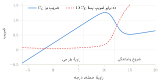
مثال 11.2 (نیمرخِ ساختگی و بهترین زاویه) پرسش. ضریبها و نسبتِ برا به پسا را در زاویههای −2 تا 16° بیابید. بهترین زاویه کجاست؟ عددِ رینولدزِ مقطعی در 0.7 شعاع چیست؟
پاسخ.
the fictional aerofoil of plantp.wind (A-212):
alpha deg Cl Cd L/D
-2 -0.000 0.0053 -0.0
0 0.220 0.0050 44.0
4 0.660 0.0063 105.1
6 0.880 0.0079 111.5
8 1.096 0.0104 105.9
10 1.256 0.0174 72.3
12 0.973 0.0615 15.8
14 0.553 0.1295 4.3
16 0.537 0.1712 3.1
best lift-to-drag 111 at 6.0 deg; stall begins near 12 deg
real blades use measured polars for each thickness and Reynolds
number; roughness and erosion lower L/DE05: Reynolds number at 0.7 R: 63 m/s x 3.5 m / 1.5e-5 = 1.5e+07تفسیر. بهترین نسبت 111 در 6° است و پره برای همین زاویه طراحی میشود. پس از 12° برا میافتد. عددِ رینولدزِ دهمیلیونی یعنی جریانی بسیار متلاطم؛ نیمرخِ واقعی در همین عدد در تونلِ باد آزموده میشود. محدودیت: نیمرخِ ساختگی برای همهٔ طولِ پره یکی است؛ پرهٔ واقعی نزدیکِ ریشه نیمرخهای ضخیم (برای استحکام) با نسبتِ برا به پسای کمتر دارد. وارسی: \(C_L(4^\circ) = 0.11 \times 6 = 0.66\) (درست).
زبری و فرسایش. حشره، گرد و غبار، یخ و سایشِ لبهٔ حمله (با باران و ذرههای معلق) پسا را زیاد و بیشینهٔ برا را کم میکنند؛ پرهٔ فرسوده چند درصد انرژی میبازد. محافظِ لبهٔ حمله و بازرسیِ دورهای برای همین است (بخش 11.4.17).
- برا و پسا را تعریف کنید و جهتِ هر کدام را نسبت به جریانِ نسبی بگویید.
- چرا پره برای بیشینهٔ نسبتِ برا به پسا طراحی میشود، نه بیشینهٔ برا؟
- واماندگی چیست و چرا برای کنترلِ توان (در توربینهای قدیمیِ بیگام) به کار میرفت؟
- سایشِ لبهٔ حمله کدام ضریب را بیشتر تغییر میدهد؟
11.2.5 نظریهٔ المانِ پره–تکانه
ایده. پره را به حلقههای باریک (المانها) تقسیم کنید. در هر حلقه به شعاعِ \(r\) دو راه برای حسابِ نیروها هست: (۱) از پره: سرعتِ نسبی، زاویهٔ حمله و ضریبهای نیمرخ؛ (۲) از تکانه: کاهشِ تندیِ هوا در آن حلقه. نظریهٔ المانِ پره–تکانه این دو را برابر میگذارد و ضریبهای القای محوری \(a\) و مماسی \(a'\) را برای هر حلقه با تکرار پیدا میکند.
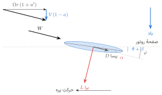
مثلثِ سرعت. پره با سرعتِ \(\omega r\) میچرخد و هوا با \(v(1-a)\) به صفحهٔ روتور میرسد؛ چرخشِ دنباله مؤلفهٔ مماسی را به \(\omega r(1+a')\) میرساند (شکل 11.2). پس زاویهٔ جریان و زاویهٔ حمله:
\[ \tan\phi = \frac{v(1-a)}{\omega r(1+a')}, \qquad \alpha = \phi - (\theta_\text{tw} + \theta_\text{p}) \tag{11.3}\]
که \(\theta_\text{tw}\) پیچشِ پره در آن شعاع و \(\theta_\text{p}\) زاویهٔ گام (چرخشِ کلِ پره حولِ محورش) است.
دو معادله برای هر حلقه. با \(N_\text{b}\) پره، وترِ \(c_\text{b}\)، صلبیتِ محلی \(\sigma_r = N_\text{b} c_\text{b}/(2\pi r)\)، ضریبهای \(C_n = C_L\cos\phi + C_D\sin\phi\) و \(C_t = C_L\sin\phi - C_D\cos\phi\) و ضریبِ تلفاتِ نوک و ریشهٔ پرانتل \(F\):
\[ \frac{a}{1-a} = \frac{\sigma_r\,C_n}{4F\sin^2\phi}, \qquad \frac{a'}{1+a'} = \frac{\sigma_r\,C_t}{4F\sin\phi\cos\phi} \tag{11.4}\]
که در آن \(F = \tfrac{2}{\pi}\arccos\big(e^{-N_\text{b}(R-r)/(2r\sin\phi)}\big)\) برای نوک (و رابطهٔ همریخت برای ریشه). برای \(a\) بزرگ (بیش از حدودِ 0.4) تصحیحِ تجربیِ بول (به انگلیسی Buhl) به کار میرود. حل: حدسِ \(a\) و \(a'\) → \(\phi\) و \(\alpha\) → ضریبها → \(a\) و \(a'\)ِ تازه → تکرار تا همگرایی (فصلِ ۳، بخش 3.5.2). آنگاه گشتاور و رانشِ هر حلقه جمع میشوند.
طراحیِ پره. برای یک نسبتِ تندیِ طراحیِ \(\lambda_\text{d}\) و زاویهٔ حملهٔ طراحی، پرهٔ بهینه با دنبالهٔ چرخان (روشِ اشمیتس، به انگلیسی Schmitz) این زاویهٔ جریان و وتر را دارد:
\[ \phi_\text{d}(r) = \tfrac23 \arctan\frac{1}{\lambda_r}, \qquad c_\text{b}(r) = \frac{8\pi r\,(1 - \cos\phi_\text{d})}{N_\text{b} C_{L,\text{d}}}, \qquad \theta_\text{tw} = \phi_\text{d} - \alpha_\text{d} \tag{11.5}\]
با \(\lambda_r = \lambda_\text{d} r/R\). وتر نزدیکِ ریشه بسیار بزرگ میشود و برای ساخت و حمل سقف میگیرد.
def design_blade(radius: float = 75.0, hub: float = 2.5, tsr: float = 8.0,
alpha_design: float = 6.0, n_blades: int = 3,
n_elem: int = 40, max_chord: float = 4.8) -> Blade:
"""Optimum blade with wake rotation (Schmitz): inflow angle
phi = 2/3 atan(1/lambda_r), chord 8 pi r (1 - cos phi) / (B Cl),
twist = phi - alpha_design; chord capped at the root."""
edges = np.linspace(hub, radius, n_elem + 1)
r = 0.5 * (edges[1:] + edges[:-1])
lam_r = tsr * r / radius
phi = 2.0 / 3.0 * np.arctan(1.0 / lam_r)
cl = float(polar(alpha_design)[0])
chord = 8 * math.pi * r * (1 - np.cos(phi)) / (n_blades * cl)
chord = np.minimum(chord, max_chord)
twist = np.degrees(phi) - alpha_design
return Blade(r, np.diff(edges), chord, twist, radius, hub, n_blades)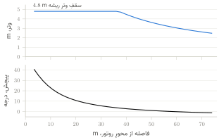
مثال 11.3 (پرهٔ ۷۲٫۵ متری) پرسش. پره را برای \(\lambda_\text{d} = 8\)، 6° و سه پره طراحی کنید و وتر و پیچش را در چند شعاع گزارش کنید.
پاسخ.
blade designed for tip-speed ratio 8 at 6 deg (Schmitz, A-212):
r m r/R chord m twist deg
5.2 0.07 4.80 34.6
10.7 0.14 4.80 21.6
19.7 0.26 4.80 11.0
30.6 0.41 4.80 5.4
45.1 0.60 4.00 1.8
59.6 0.79 3.07 -0.0
70.5 0.94 2.61 -0.9
74.1 0.99 2.48 -1.2
chord is capped at 4.8 m near the root for transport and
manufacture; the root region carries load, not powerتفسیر. پیچش از حدودِ 35° در ریشه به کمی کمتر از صفر در نوک میرسد، چون نزدیکِ ریشه پره کند حرکت میکند و باد از زاویهٔ تندی میرسد. وترِ نظری نزدیکِ ریشه بسیار بزرگ است و سقفِ 4.8 m گرفته است: آن بخش بیشتر بار میکشد تا توان. وارسی: در \(r = 74.1\ \text{m}\)، \(\lambda_r = 7.9\)، \(\phi_\text{d} = \tfrac23\arctan(1/7.9) = 4.8^\circ\) و پیچش \(4.8 - 6 = -1.2^\circ\) (درست).
مثال 11.4 (المانِ پره–تکانه در برابرِ دیسک) پرسش. روتور را در نسبتِ تندیِ بهینه حل کنید و \(C_p\)، \(C_T\)، \(a\) و \(\alpha\) را با دیسکِ بتز مقایسه کنید.
پاسخ.
BEM at the optimum tip-speed ratio 8.50 (pitch 0):
Cp 0.4847, Ct 0.852; momentum ideal Cp 16/27 = 0.5926, Ct 8/9 = 0.889
axial induction over 30 .. 90 % of R: 0.245 .. 0.400 (ideal 1/3)
angle of attack there: 5.2 .. 7.0 deg (design 6)
the shortfall from Betz: tip and hub losses, drag (finite L/D),
wake rotation and the capped root chordتفسیر. 0.485 یعنی 82 %ِ حدِ بتز: برای روتورِ واقعی بسیار خوب و برای ماشینهای بزرگِ امروز معمول. القای محوری در بخشِ میانیِ پره نزدیکِ یکسوم است، همان که دیسک میخواست، و زاویهٔ حمله نزدیکِ زاویهٔ طراحی. وارسی: \(0.4847/0.5926 = 0.818\) (درست).
خطای رایج. «پرهٔ بلندتر همیشه بهتر است.» توان با مجذورِ طول بالا میرود اما جرم و بارِ خستگیِ پره تقریباً با توانِ بالاتری از طول؛ پرههای بلند فقط با موادِ سفتتر (کربن) و طراحیِ دقیق ممکناند (بخش 11.4.2). خطای دیگر: نظریهٔ المانِ پره–تکانه را برای حالتهای گذرا (تغییرِ سریعِ گام یا باد) بیاصلاح به کار بردن؛ دنباله زمان میبرد تا به حالتِ جدید برسد.
- با معادلهٔ 11.3، اگر \(v(1-a) = 6.7\ \text{m/s}\) و \(\omega r(1+a') = 60\ \text{m/s}\)، زاویهٔ جریان چیست؟ با پیچش و گامِ 0° زاویهٔ حمله؟
- چرا پیچشِ پره نزدیکِ ریشه زیاد است؟
- ضریبِ تلفاتِ نوکِ پرانتل در کجا به صفر میرسد؟
- چرا وترِ نظری نزدیکِ ریشه سقف میگیرد؟
- سه گامِ یک دورِ تکرارِ نظریهٔ المانِ پره–تکانه را بنویسید.
11.2.6 منحنیِ ضریبِ توان و نسبتِ تندیِ نوک
ایده. با نظریهٔ المانِ پره–تکانه، رفتارِ کلِ روتور در دو عدد خلاصه میشود: نسبتِ تندیِ نوکِ پره \(\lambda = \omega R/v\) و زاویهٔ گام \(\theta_\text{p}\). هر ترکیب یک ضریبِ توان \(C_p(\lambda, \theta_\text{p})\) و ضریبِ رانش \(C_T(\lambda, \theta_\text{p})\) دارد؛ توان و رانش:
\[ P = \tfrac12\,\rho A_\text{r} v^3\,C_p(\lambda, \theta_\text{p}), \qquad F_\text{T} = \tfrac12\,\rho A_\text{r} v^2\,C_T(\lambda, \theta_\text{p}) \tag{11.6}\]
در \(\lambda\)ِ کم، پره کند میچرخد، زاویهٔ حمله زیاد است و واماندگی رخ میدهد؛ در \(\lambda\)ِ زیاد، زاویهٔ حمله کم و برا ناچیز است. میانِ این دو یک نسبتِ بهینه \(\lambda_\text{opt}\) هست.
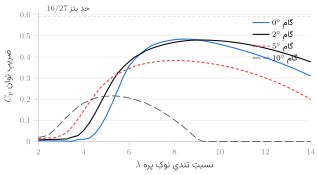
مثال 11.5 (چهار منحنیِ ضریبِ توان) پرسش. \(C_p(\lambda)\) را برای گامِ 0، 2، 5 و 10° بسازید و بیشینهٔ هر کدام را بیابید.
پاسخ.
power coefficient against tip-speed ratio and pitch:
pitch deg Cp max at lambda
0 0.485 8.50
2 0.480 9.00
5 0.383 8.00
10 0.216 5.25
pitching the blade lowers Cp at every lambda: the lever that
holds rated power above rated wind (region 3)تفسیر. بیشینهٔ 0.485 در \(\lambda = 8.5\) و گامِ صفر است. گامِ مثبت (پره به سوی بادنما، به انگلیسی feather) زاویهٔ حمله را کم و \(C_p\) را پایین میآورد؛ این ابزارِ نگهداشتنِ توانِ اسمی در بادِ شدید است. وارسی: در شکل 11.4 همهٔ منحنیها زیرِ خطِ بتزاند (درست).
- نسبتِ تندیِ نوک را برای 9 rpm و 8 m/s حساب کنید.
- چرا \(C_p\) در \(\lambda\)ِ کم افت میکند؟ در \(\lambda\)ِ زیاد؟
- گامِ مثبت با زاویهٔ حمله چه میکند؟
11.2.7 ناحیههای کار و منحنیِ توان
ایده. توربینِ سرعتمتغیر با دو فرمان کار میکند: گشتاورِ ژنراتور (که سرعتِ روتور را تنظیم میکند) و زاویهٔ گام. منحنیِ توان از چند ناحیه ساخته میشود:
- ناحیهٔ ۱ (زیرِ تندیِ شروع، 3 m/s): توربین ایستاده یا آزادچرخ است.
- ناحیهٔ ۲ (از شروع تا نزدیکِ اسمی): سرعتِ روتور با باد بالا میرود تا \(\lambda = \lambda_\text{opt}\) بماند و \(C_p\) بیشینه؛ گام صفر. در بادِ بسیار کم، سرعتِ کمینهٔ روتور (5 rpm) این را محدود میکند.
- ناحیهٔ ۲٫۵: سرعتِ روتور به سقف (11.5 rpm، تندیِ نوکِ 90 m/s برای نوفه و فرسایش) رسیده است اما توان هنوز زیرِ اسمی است؛ \(\lambda\) کم و \(C_p\) پایین میآید.
- ناحیهٔ ۳ (بالای اسمی تا قطع، 25 m/s): گام زیاد میشود تا توان روی 5 MW بماند.
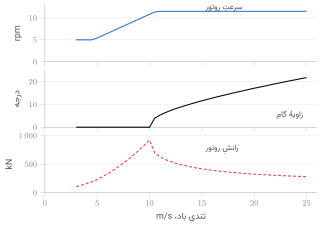
مثال 11.6 (نقطههای کار از شروع تا قطع) پرسش. با پرهٔ طراحیشده، حدهای سرعت و بازدهِ 0.94 (A-211)، توان، سرعت، نسبتِ تندی، گام، \(C_T\)، رانش و گشتاور را در 3 تا 25 m/s بیابید.
پاسخ.
steady operating points of WT-5.0-150 at 1.225 kg/m3 (A-211):
v m/s P kW rpm TSR pitch Ct thrust kN torque kNm
3.0 97 5.00 13.09 0.0 1.083 106 197
5.0 617 5.41 8.50 0.0 0.852 231 1157
7.0 1692 7.58 8.50 0.0 0.852 452 2268
9.0 3595 9.74 8.50 0.0 0.852 747 3750
10.0 4932 10.82 8.50 0.0 0.852 923 4630
10.5 5000 11.36 8.50 4.0 0.585 698 4470
11.0 5000 11.50 8.21 5.3 0.481 630 4417
12.0 5000 11.50 7.53 7.3 0.350 546 4417
15.0 5000 11.50 6.02 11.6 0.172 419 4417
20.0 5000 11.50 4.52 17.1 0.075 326 4417
25.0 5000 11.50 3.61 21.8 0.042 282 4417
region 2: TSR held at the optimum (variable speed); 2.5: rotor
at 11.5 rpm, TSR falls; 3: pitch holds 5 MW; thrust peaks
just below rated wind and falls as the blades featherتفسیر. تا 10 m/s نسبتِ تندی روی 8.5 است و \(C_T\) ثابت؛ رانش با \(v^2\) بالا میرود تا 923 kN. در 10.5 m/s توانِ اسمی رسیده و گام آغاز میشود؛ رانش ناگهان کم میشود چون پره بار را رها میکند. در 25 m/s گام 22° است. گشتاورِ آیرودینامیکی در ناحیهٔ ۳ ثابت است، چون توان و سرعت هر دو ثابتاند. وارسی: در 9 m/s، \(P = \tfrac12 \times 1.225 \times 17\,671 \times 729 \times 0.485 \times 0.94 = 3.60\ \text{MW}\) (درست).
خطای رایج. «توربین در تندیِ اسمی بیشترین بار را دارد.» رانش درست پیش از تندیِ اسمی بیشینه است؛ پس از آن گام بار را کم میکند. اما بارهای توفانی (توربینِ ایستاده در بادِ بسیار شدید، پرهها در وضعِ بادنما) و بارهای خطا (قطعِ ناگهانیِ شبکه، توقفِ اضطراری) حالتهای جدای طراحیاند (بخش 11.3.13).
- چهار ناحیهٔ کار را با فرمانِ اصلیِ هر کدام نام ببرید.
- چرا تندیِ نوکِ پره سقف دارد؟
- چرا رانش پس از تندیِ اسمی کم میشود؟
- در مثال 11.6، گشتاورِ آیرودینامیکی در ناحیهٔ ۳ چند است و چرا ثابت میماند؟
11.2.8 کنترلِ گشتاور: قانونِ \(k\omega^2\)
ایده. کنترلگر برای ماندن روی \(\lambda_\text{opt}\) به اندازهگیریِ باد نیازی ندارد. اگر روتور روی \(\lambda_\text{opt}\) باشد، گشتاورِ آیرودینامیکی
\[ T_\text{a} = \frac{P}{\omega} = \tfrac12\,\rho A_\text{r} R^3 \frac{C_{p,\max}}{\lambda_\text{opt}^3}\,\omega^2 = k\,\omega^2 \tag{11.7}\]
است. پس اگر ژنراتور گشتاورِ \(T_\text{g} = k\,\omega^2\) بگیرد، روتور خودبهخود روی بهینه مینشیند: اگر باد بیشتر شود، گشتاورِ آیرودینامیکی از \(k\omega^2\) بیشتر میشود و روتور تند میشود تا دوباره برابر شوند (شکل 11.6). مبدّلِ کامل (فصلِ ۹) همین گشتاور را از ژنراتور میگیرد.
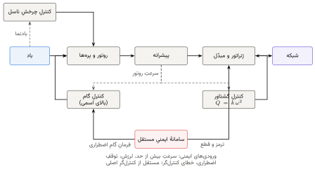
مثال 11.7 (ضریبِ قانونِ کنترل) پرسش. \(k\) را برای روتورِ نیروگاهِ P بیابید و در 8 m/s گشتاورِ \(k\omega^2\) را با گشتاورِ آیرودینامیکیِ مدل مقایسه کنید.
پاسخ.
region-2 control law: generator torque Q = k omega^2 (A-211):
k = 0.5 rho A R^3 Cp / lambda^3 = 3,604 kN m s2
at 8 m/s: omega 0.907 rad/s, k omega^2 = 2.963 MN m;
aerodynamic torque from BEM 2.963 MN m
equal torques hold the rotor at the optimum TSR without any
wind measurement: if the wind rises, aero torque exceeds k w^2
and the rotor speeds up until the two meet againتفسیر. دو گشتاور برابرند: نقطهٔ کارِ پایا همان است که قانون پیشبینی کرد. محدودیت: \(k\) با \(C_{p,\max}\) و \(\lambda_\text{opt}\)ِ طراحی حساب میشود؛ اگر پره فرسوده یا آلوده شود، بهینهٔ واقعی جابهجا میشود و قانونِ ثابت کمی دور از بهینه کار میکند؛ برخی کنترلگرها \(k\) را با دادههای کار تنظیم میکنند. وارسی: \(3604 \times 0.907^2 = 2965\ \text{kN\,m}\) (درست، با گردکردنِ \(\omega\)).
- چرا قانونِ \(k\omega^2\) بدونِ اندازهگیریِ باد کار میکند؟
- اگر چگالیِ هوا 14 % کمتر باشد، \(k\)ِ بهینه چه میشود؟
- گشتاورِ ژنراتور را کدام تجهیز اعمال میکند؟
11.2.9 کنترلِ گام
ایده. بالای تندیِ اسمی، کنترلگرِ گام با یک حلقهٔ تناسبی–انتگرالی (فصلِ ۹) سرعتِ روتور را روی سقف نگه میدارد: اگر روتور تند شود، گام زیاد میشود و \(C_p\) کم؛ اگر کند شود، گام کم میشود. هر پره محرکِ گامِ خودش (برقی یا هیدرولیک) و یک منبعِ پشتیبان (باتری، ابرخازن یا انباره) دارد تا در قطعِ برق هم بتواند پره را به وضعِ بادنما ببرد. چون بهرهٔ آیرودینامیکی (\(\partial P/\partial\theta_\text{p}\)) با تندیِ باد تغییر میکند، بهرهٔ کنترلگر با گام برنامهریزی میشود (برنامهریزیِ بهره). گامِ انفرادی (هر پره جدا در هر دور) میتواند بارهای ناشی از برشِ باد را کم کند (بخش 11.3.12).
بازهٔ گام. از 0° (بیشینهٔ توان) تا حدودِ 90° (بادنما: پره لبه به باد، بیبرا). در مثال 11.6، 22° در 25 m/s برای نگهداشتنِ توان بس است؛ 90° برای توقف و توفان است.
خطای رایج. «گام فقط توان را کنترل میکند.» گام اصلیترین ترمزِ ایمنی هم هست (بخش 11.2.11) و هر خطای آن (پرهٔ گیرکرده، باتریِ ضعیف) یک خطرِ ایمنی است که پایشِ پیوسته و آزمونِ دورهای میخواهد.
- چرا هر پره منبعِ پشتیبانِ گام دارد؟
- برنامهریزیِ بهره چه مشکلی را حل میکند؟
- گامِ انفرادی چه باری را کم میکند؟
11.2.10 چرخشِ ناسل رو به باد
ایده. سامانهٔ چرخشِ ناسل (به انگلیسی yaw system) ناسل را با موتورهای چرخدندهای روی یاتاقانِ یاو رو به باد میچرخاند، بر پایهٔ بادنمای روی ناسل. چون باد دائم جهت عوض میکند و چرخاندنِ ناسل بار و سایش میسازد، کنترلگر خطا را چند ده ثانیه میانگین میگیرد و فقط وقتی خطا از آستانه بیشتر شد میچرخاند. ترمزهای یاو ناسل را میانِ چرخشها نگه میدارند. کابلهای آویزان در برج با چرخش پیچ میخورند و پس از چند دور، ناسل برای باز کردنِ پیچِ کابل برمیگردد.
مثال 11.8 (هزینهٔ خطای جهت) پرسش. کاهشِ توان را برای خطای جهتِ 2 تا 20° با دو مدلِ \(\cos^2\) و \(\cos^3\) برآورد کنید (A-213).
پاسخ.
yaw misalignment: power falls roughly with cos^n (A-213):
error deg cos^2 loss % cos^3 loss %
2 0.12 0.18
5 0.76 1.14
8 1.94 2.89
10 3.02 4.49
15 6.70 9.88
20 11.70 17.02
a vane error of 5 deg costs about 1 %; the nacelle vane
sits in the rotor wake, so its offset is calibrated (yaw
offset checks with lidar or by power, chapters 13 and 52)تفسیر. خطای 5° حدودِ یک درصد انرژی است: در دوازده توربین و یک سال، بیش از یک گیگاواتساعت (تمرین 11.53). بادنمای ناسل در دنبالهٔ روتور است و خطای نصب یا کالیبراسیون یک انحرافِ ثابت میسازد؛ وارسیِ آن با لیدار یا تحلیلِ توان کارِ پایش است (فصلهای ۱۳ و ۵۲). وارسی: \(1 - \cos^3 10^\circ = 1 - 0.955 = 4.5\ \%\) (درست).
- چرا ناسل با هر تغییرِ باد نمیچرخد؟
- چرا بادنمای ناسل خطای ثابت دارد؟
- باز کردنِ پیچِ کابل چرا لازم است؟
11.2.11 ترمز، توقف و توقفِ اضطراری
ایده. توربین دو ترمزِ مستقل دارد: ترمزِ آیرودینامیکی (بردنِ پرهها به بادنما) که روتور را از سرعتِ کار کند میکند، و ترمزِ مکانیکی (دیسک و کالیپر، معمولاً روی محورِ سرعتبالا) که روتورِ کندشده را نگه میدارد. هر پره بهتنهایی میتواند روتور را از سرعتِ بیش از حد بازدارد؛ این افزونگی پایهٔ ایمنیِ توربین است. توقفِ اضطراری (با دکمه یا فرمانِ سامانهٔ ایمنی) گام را با بیشینهٔ سرعت و از منبعِ پشتیبان به بادنما میبرد، ژنراتور را قطع و ترمز را فعال میکند (شکل 11.6).
مثال 11.9 (انرژیِ روتور در یک توقف) پرسش. با پرههای 22 t و شعاعِ ژیراسیونِ 22 m (A-214)، انرژیِ جنبشیِ روتور در 11.5 rpm و زمانِ گامدهیِ 90° با 8°/s را بیابید.
پاسخ.
kinetic energy of the rotor at 11.5 rpm (A-214):
J = 3 x 22 t x 22^2 + hub 45 t x 1.5^2 = 32.0e6 kg m2
E = J omega^2 / 2 = 23.2 MJ (6.5 kWh)
pitching 90 deg at 8 deg/s takes 11.2 s: the blades
brake the rotor aerodynamically; the mechanical brake holds a
stopped rotor and is not sized to absorb a full-speed stop in
storm conditions (each design states its own limits)تفسیر. 23 MJ حدودِ ده برابرِ انرژیِ یک خودروی سواریِ 1.5 t در ۲۰۰ کیلومتر بر ساعت است؛ اگر ترمزِ مکانیکی آن را بگیرد دیسک بسیار داغ و گشتاورِ گذرا در پیشرانه بسیار بزرگ میشود. پس توقفِ عادی آیرودینامیکی است و ترمزِ مکانیکی برای نگهداشتن. وارسی: \(\tfrac12 \times 32.0 \times 10^6 \times 1.204^2 = 23.2\ \text{MJ}\) (درست).
منطقِ سامانهٔ ایمنی، سطحِ یکپارچگیِ آن، ترتیبِ توقف، قفلکردنِ روتور و آزمونهای دورهایِ ترمز و گام دانشِ سازنده و موضوعِ گواهیِ نوعاند؛ بهرهبردار آنها را با دستورالعملِ سازنده و افرادِ آموزشدیده اجرا میکند. این بخش فقط مفهوم را میآموزد.
- دو ترمزِ توربین و نقشِ هر کدام را بنویسید.
- چرا هر پره بهتنهایی باید بتواند روتور را بازدارد؟
- چرا توقفِ عادی با ترمزِ مکانیکی انجام نمیشود؟
11.2.12 رانش و بارِ برج
ایده. رانشِ روتور (معادلهٔ 11.6) بزرگترین نیروی افقی بر بالای برج است و با بازوی 100 m، گشتاورِ خمشیِ پای برج و فونداسیون را میسازد.
E23: tower base moment 923 kN x 100 m = 92.3 MN mاین فقط بارِ میانگین در بیشینهٔ رانش است. تلاطم، برشِ باد، گذارهای کنترل و حالتهای خطا آن را چند برابر میکنند؛ طراحیِ برج و فونداسیون با حالتهای بارِ استاندارد و ضریبهای ایمنی انجام میشود (IEC 61400-6:2020، فصلِ ۳۰). پیامدِ هیبریدی: رانش با تندیِ اسمی بیشینه است، یعنی درست وقتی تولید زیاد است؛ کاهشِ عمدیِ توان (محدودیتِ صادرات) با گام رانش را هم کم میکند و بارِ خستگی را کمی سبک میکند.
- رانش در 7 m/s با \(C_T = 0.852\) و 1.225 kg/m³ چیست؟
- چرا گشتاورِ پای برج از رانش ضربِ ارتفاعِ توپی بیشتر است؟
- کاهشِ توانِ عمدی با گام چه اثری بر بارِ برج دارد؟
11.2.13 چگالیِ هوا و منحنیِ توانِ ساختگاه
ایده. در چگالیِ کمتر، توانِ هر تندی کمتر است (معادلهٔ 11.1) و توانِ اسمی در تندیِ بالاتری میرسد. روشِ استانداردِ اندازهگیریِ منحنیِ توان (IEC 61400-12-1:2022) برای توربینِ گامدار تندی را به تندیِ همارزِ چگالیِ مرجع برمیگرداند، و فصلِ ۵ همین را به کار برد:
\[ v_\text{eq} = v\left(\frac{\rho}{\rho_0}\right)^{1/3} \tag{11.8}\]
آیا این روش با فیزیکِ روتور میخواند؟ مدلِ المانِ پره–تکانه پاسخ میدهد.
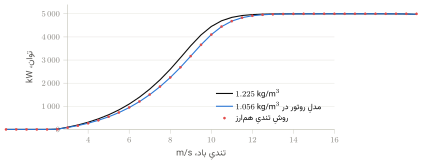
مثال 11.10 (روتور در هوای رقیق) پرسش. منحنیِ توان را با مدلِ روتور در 1.056 kg/m³ بسازید و با منحنیِ 1.225 که با معادلهٔ 11.8 جابهجا شده مقایسه کنید.
پاسخ.
power curve at site density 1.056 kg/m3 (D-008):
v m/s at 1.225 BEM at site equivalent-speed method
6.0 1097 946 951
8.0 2599 2242 2247
9.0 3619 3171 3171
10.0 4451 4100 4099
11.0 4846 4685 4683
12.0 4965 4915 4913
13.0 4993 4981 4980
rated wind (first pitched point): 10.5 m/s at 1.225, 11.0 at site
the rotor model and the standard's equivalent-speed method
agree within about half a per cent; the vendor's curve for
the site density stays the evidence to obtain (U-013)تفسیر. دو روش در حدِ نیم درصد همخواناند: شاهدِ فیزیکیِ اینکه روشِ فصلِ ۵ برای این روتور درست است. تندیِ اسمی از 10.5 به 11.0 m/s میرود. اما این شاهد مدل است؛ منحنیِ واقعی را سازنده برای چگالیِ ساختگاه میدهد و کنترلگرِ واقعی ممکن است در چگالیِ کم سقفِ سرعت یا قانونِ گشتاور را تغییر دهد. پس U-013 باز میماند. وارسی: \(8 \times (1.056/1.225)^{1/3} = 7.614\ \text{m/s}\) (E10، درست).
- تندیِ همارزِ 10 m/s در 1.056 kg/m³ چیست؟
- چرا تندیِ اسمی در هوای رقیق بالاتر است؟
- چرا U-013 با این شاهد بسته نمیشود؟
11.2.14 منحنیِ توان بهصورتِ شیءِ آماری
ایده. منحنیِ توانِ «اندازهگیریشده» میانگینِ دهدقیقهای توان در برابرِ میانگینِ دهدقیقهایِ تندی است، دستهبندیشده در بازههای نیممتری (IEC 61400-12-1:2022). در ده دقیقه تندی با تلاطم بالا و پایین میرود و چون منحنیِ پایا در «زانو» خمیده است، میانگینِ توان از توانِ میانگینِ تندی فرق دارد: زیرِ زانو کمی بیشتر، روی زانو کمتر.
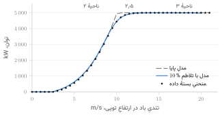
مثال 11.11 (مدلِ فیزیکی در برابرِ منحنیِ بستهٔ داده) پرسش. منحنیِ پایای مدل را با تلاطمِ 10 % میانگین بگیرید و با منحنیِ بستهٔ داده مقایسه کنید.
پاسخ.
steady curve against the data-pack curve (measured-style):
v m/s steady kW steady + turbulence 10 % data pack kW
4.0 302 312 248
6.0 1065 1097 1030
8.0 2525 2599 2522
9.0 3595 3619 3537
10.0 4932 4451 4442
10.5 5000 4698 4711
11.0 5000 4846 4860
11.5 5000 4925 4934
12.0 5000 4965 4969
13.0 5000 4993 5000
a ten-minute mean averages the knee of the curve: with 10 %
turbulence the model is within about 3 % of the pack from
6 m/s up; near cut-in the two differ (start-up behaviour):
the power curve is a statistical object, not a single physicsتفسیر. یک نیمرخِ ساختگی، یک پرهٔ اشمیتس، سه حدِ سرعت و یک تلاطمِ ساده منحنیِ بستهٔ داده را از 6 m/s به بالا در حدودِ سه درصد بازمیسازند و «گردیِ» زانو را درست نشان میدهند. نزدیکِ شروع، مدل بیشتر میدهد (رفتارِ واقعیِ آغازِ کار و مصرفِ داخلی در مدل نیست). درس: منحنیِ توان به تلاطمِ سایت، برشِ باد و چگالی بستگی دارد؛ منحنیِ ضمانتشدهٔ سازنده برای «شرایطِ مرجع» است و تصحیحِ سایت جزئی از برآوردِ انرژی است (فصلهای ۱۳ و ۱۴). وارسی: در 10 m/s، \(4451/4442 - 1 = 0.2\ \%\) (درست).
خطای رایج. منحنیِ توانِ سازنده را با منحنیِ ضمانتشده و منحنیِ اندازهگیریشدهٔ ساختگاه یکی گرفتن. اولی ادعای طراحی، دومی تعهدِ قراردادی با شرطهای اندازهگیری، و سومی شاهد است؛ آزمونِ عملکرد (فصلِ ۵۰) سومی را با دومی میسنجد.
- چرا میانگینِ دهدقیقهایِ توان در زانوی منحنی از توانِ تندیِ میانگین کمتر است؟
- سه شرطِ سایت که منحنیِ توان را تغییر میدهند نام ببرید.
- منحنیِ سازنده، منحنیِ ضمانتشده و منحنیِ اندازهگیریشده چه فرقی دارند؟
11.2.15 روتورِ آرمانی با چرخشِ دنباله
ایده. حدِ بتز (بخش 11.2.3) فرض میکند هوا پس از روتور نمیچرخد. اما روتوری که گشتاور میگیرد، طبقِ قانونِ سومِ نیوتن گشتاورِ برابر و مخالفی به هوا میدهد و دنباله را میچرخاند. انرژیِ جنبشیِ این چرخش برای ژنراتور از دست رفته است. پرسشِ این درس: چقدر؟ پاسخ به نسبتِ تندیِ نوک بستگی دارد، چون برای یک توانِ معیّن گشتاور برابرِ \(P/\omega\) است: روتورِ کُند گشتاورِ زیاد میگیرد و دنبالهٔ تندتری میچرخاند.
استخراج. روتور را به حلقههای نازک بشکنید. در هر حلقه با شعاعِ \(r\)، تکانهٔ محوری رانش و تکانهٔ زاویهای گشتاور را میدهد. با نسبتِ تندیِ محلیِ \(\lambda_r = \omega r / v\) و دو ضریبِ القای \(a\) و \(a'\) (بخش 11.2.5)، توانِ حلقه با \(a'(1-a)\lambda_r^3\) متناسب است. شرطِ انرژی (توانِ گرفتهشده برابرِ کاهشِ انرژیِ جریان) رابطهای میانِ \(a\) و \(a'\) میسازد و بیشینهکردنِ توانِ هر حلقه با این قید، راهحلِ گلاوِرت را میدهد:
\[ \begin{aligned} a' &= \frac{1-3a}{4a-1}, \qquad \lambda_r^2 = \frac{(1-a)(4a-1)^2}{1-3a}, \\ C_{p,\max}(\lambda) &= \frac{8}{\lambda^2}\int_0^{\lambda} a'(1-a)\,\lambda_r^3\,\mathrm{d}\lambda_r . \end{aligned} \tag{11.9}\]
در هر حلقه \(a\) میانِ \(1/4\) (نزدیکِ محور، که \(\lambda_r\) کوچک است) و \(1/3\) (دورِ محور) است: دورِ محور همان دیسکِ بتز است و نزدیکِ محور چرخش سهمِ بیشتری میبرد. برای هر \(\lambda_r\) معادلهٔ دوم یک \(a\) میدهد که با ریشهیابی پیدا میشود؛ سپس انتگرال عددی گرفته میشود.
def glauert_cp_max(tsr: float, n: int = 400) -> float:
"""Highest power coefficient of an ideal rotor with wake rotation
(Glauert): each annulus runs at the induction a in (1/4, 1/3) with
lambda_r^2 = (1 - a)(4a - 1)^2 / (1 - 3a), a' = (1 - 3a)/(4a - 1)."""
lam_r = np.linspace(tsr / n, tsr, n)
a = np.empty(n)
for k, lr in enumerate(lam_r):
a[k] = brentq(lambda x: (1 - x) * (4 * x - 1) ** 2 / (1 - 3 * x)
- lr ** 2, 0.25 + 1e-12, 1 / 3 - 1e-12)
ap = (1 - 3 * a) / (4 * a - 1)
f = ap * (1 - a) * lam_r ** 3
lam_r = np.concatenate(([0.0], lam_r))
f = np.concatenate(([0.0], f))
return float(8 / tsr ** 2 * np.trapezoid(f, lam_r))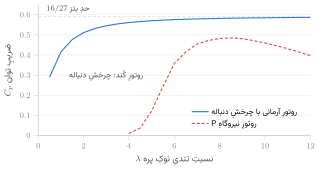
مثال 11.12 (سهمِ چرخشِ دنباله و سهمِ پره) پرسش. بیشینهٔ ضریبِ توان را برای نسبتهای تندیِ 0.5 تا 10 با معادلهٔ 11.9 حساب کنید و با روتورِ نیروگاهِ P (المانِ پره–تکانه با پسا و تلفاتِ نوک) مقایسه کنید. داده: ساختگی، پرهٔ آموزشیِ A-212.
پاسخ.
ideal rotor with wake rotation (Glauert) against the rotor of
Plant P (BEM with drag and tip losses):
TSR Glauert Cp_max rotor Cp rotor / Glauert
0.5 0.2894 -
1.0 0.4155 -
2.0 0.5112 -
4.0 0.5615 0.0098 0.017
6.0 0.5759 0.3576 0.621
8.5 0.5830 0.4847 0.831
10.0 0.5852 0.4599 0.786
Betz 16/27 = 0.5926; at TSR 8.5 wake rotation costs 1.6 % of Betz,
drag, tip loss and the finite blade cost another 16.9 %
slow rotors (water pumps, old mills) give much of the power
away as wake swirl; fast rotors need little torque for the
same power and so leave little swirl behindتفسیر. در \(\lambda = 8.5\) چرخشِ دنباله فقط 1.6 % از بتز را میبرد؛ پسا، تلفاتِ نوک و پرهٔ محدود حدودِ 17 % دیگر. پس برای توربینِ تند، پسا و نوک مهماند نه چرخش؛ برای آسیابِ کُند یا پمپِ آبیِ چندپره (با \(\lambda\) حدودِ یک) برعکس: سقفِ آرمانیِ آنها حدودِ 0.42 است. روتورِ نیروگاهِ P در \(\lambda\)ِ کم تقریباً هیچ توانی نمیدهد: پرهای که برای \(\lambda = 8\) پیچش گرفته، در \(\lambda = 4\) زاویهٔ حملهٔ بزرگی میبیند و وامانده میشود (بخش 11.2.4). وارسی: منحنیِ گلاوِرت از پایین به 16/27 نزدیک میشود و هرگز از آن نمیگذرد (شکل 11.9، درست).
خطای رایج. «توربینِ سهپره چون پرههای کمی دارد ضعیفتر از آسیابِ چندپره است.» عکسِ این درست است: سقفِ آرمانی با \(\lambda\) بالا میرود و پرههای کم و باریک برای \(\lambda\)ِ زیاد لازماند. آسیابِ چندپره گشتاورِ راهاندازیِ زیادی دارد (برای پمپِ پیستونی خوب است)، نه بازدهِ بیشتر.
- چرا روتوری که گشتاور میگیرد دنباله را میچرخاند؟
- در معادلهٔ 11.9، \(a\) نزدیکِ محور و دورِ محور به چه مقدارهایی میل میکند؟
- در \(\lambda = 2\) بیشینهٔ آرمانی چند است؟ چند درصد زیرِ بتز؟
- چرا روتورِ نیروگاهِ P در \(\lambda = 4\) تقریباً توان نمیدهد؟
- سهمِ چرخش و سهمِ پسا و نوک را در \(\lambda = 8.5\) مقایسه کنید.
11.2.16 حالتِ رانشِ زیاد و تصحیحِ بوهل
ایده. نظریهٔ تکانه میگوید ضریبِ رانشِ یک حلقه \(C_T = 4aF(1-a)\) است؛ این سهمی در \(a = 0.5\) به بیشینه میرسد و پس از آن کم میشود. اما آزمایشها روی روتورها نشان میدهند که با بیشترشدنِ \(a\) رانش بیشتر میشود: وقتی سرعتِ دنباله بسیار کم شود، جریان پایدار نمیماند، هوای اطراف به درونِ دنباله کشیده میشود و دنباله متلاطم میشود (حالتِ دنبالهٔ متلاطم). فرضِ نظریهٔ تکانه (لولهای مرزدار و بیاختلاط) دیگر برقرار نیست.
مدلِ تجربی. بوهل سهمیای پیشنهاد کرد که در \(a = 0.4\) با منحنیِ تکانه هم مقدار و هم شیب برابر است و در \(a = 1\) به 2 میرسد:
\[ C_T = \frac{8}{9} + \left(4F - \frac{40}{9}\right) a + \left(\frac{50}{9} - 4F\right) a^2, \qquad a > 0.4 . \tag{11.10}\]
کدِ المانِ پره–تکانه (بخش 11.2.5) وقتی \(C_T\)ِ حلقه از \(0.96F\) بیشتر شود، \(a\) را از وارونِ همین سهمی میگیرد؛ بی این تصحیح تکرار ممکن است در \(\lambda\)ِ زیاد به جوابِ نادرست برسد یا واگرا شود.
def thrust_coefficient(a, f: float = 1.0):
"""Annulus thrust coefficient: momentum theory 4aF(1 - a) up to a = 0.4,
Buhl's empirical parabola above it (it reaches 2 at a = 1)."""
a = np.asarray(a, float)
mom = 4 * a * f * (1 - a)
buhl = 8 / 9 + (4 * f - 40 / 9) * a + (50 / 9 - 4 * f) * a ** 2
return np.where(a <= 0.4, mom, buhl)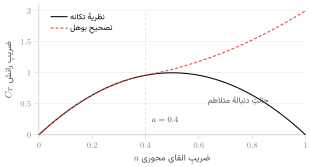
مثال 11.13 (روتور در بادِ کم و سرعتِ زیاد) پرسش. ضریبِ رانش را با دو مدل برای چند \(a\) مقایسه کنید و بشمارید روتورِ نیروگاهِ P در \(\lambda = 12\) چند حلقه را در حالتِ رانشِ زیاد دارد.
پاسخ.
thrust coefficient against axial induction (F = 1):
a momentum 4a(1-a) Buhl (used by the BEM code)
0.200 0.640 0.640
0.333 0.889 0.889
0.400 0.960 0.960
0.500 1.000 1.056
0.600 0.960 1.182
0.800 0.640 1.529
1.000 0.000 2.000
momentum theory says thrust falls after a = 0.5; measured
rotors show it keeps rising (turbulent wake state)
rotor at TSR 12 (low wind, high speed): 22 of 40 annuli above a = 0.4
the correction keeps the iteration from a false solutionتفسیر. در \(\lambda = 12\) (بادِ کم با روتورِ تند، مثلاً در ناحیهٔ ۲٫۵ یا هنگامِ کندشدنِ ناگهانیِ باد) بیش از نیمی از حلقهها بالای \(a = 0.4\)اند. این حالت در کارِ عادی با قانونِ \(k\omega^2\) کم پیش میآید، اما در گذرها و در طراحیِ پره (حالتهای بار) پیش میآید و مدلِ بار باید آن را درست ببیند. وارسی: در \(a = 0.4\) هر دو مدل 0.96 میدهند و در \(a = 1\) بوهل 2 (شکل 11.10، درست).
- نظریهٔ تکانه کجا و چرا از کار میافتد؟
- پیوستگیِ معادلهٔ 11.10 را در \(a = 0.4\) برای \(F = 1\) وارسی کنید.
- چه شرایطِ کاری روتور را به \(a\)ِ زیاد میبرد؟
- اگر کدِ المانِ پره–تکانه این تصحیح را نداشته باشد، چه نشانهای در خروجی میبینید؟
11.2.17 برشِ باد، سایهٔ برج و تندیِ همارزِ روتور
ایده. روتورِ نیروگاهِ P از 25 m تا 175 m بالای زمین را جاروب میکند. با برشِ باد (فصلِ ۲) پره در بالای دور بادِ تندتر و در پایین بادِ کندتری میبیند؛ پس بارِ هر پره یک بار در هر دور (\(1P\)) بالا و پایین میرود. وقتی پره از جلوی برج میگذرد، هوا که پشتِ برج گیر کرده کمی کُند است (سایهٔ برج) و پره افتی کوتاه میبیند. سه پره این اثرها را با اختلافِ فازِ \(120^\circ\) میبینند: در گشتاورِ کلِ روتور بخشِ \(1P\) تا حدِ زیادی خنثی میشود و نوسانِ \(3P\) میماند.
مدلِ آموزشی. نیمرخِ توانی با نمای \(\alpha_\text{sh}\) و جریانِ پتانسیل دورِ استوانهای با شعاعِ \(a_\text{t}\) در فاصلهٔ \(x\) جلوتر از محورِ برج:
\[ v(z) = v_\text{hub}\left(\frac{z}{H}\right)^{\alpha_\text{sh}}, \qquad \frac{\Delta v}{v} = \frac{a_\text{t}^2\,(x^2 - y^2)}{(x^2 + y^2)^2}, \tag{11.11}\]
که \(y\) فاصلهٔ جانبیِ المانِ پره از محورِ برج است. فاصلهٔ \(x\) از ریشه تا نوک با شیبِ محور و مخروطیِ روتور بیشتر میشود. در مدلِ شبهپایا، گشتاورِ هر حلقه با مجذورِ بادِ محلی تغییر میکند و وزنِ هر حلقه سهمِ آن از گشتاور در کارِ عادی است (از مثال 11.4). این مدل دنبالهٔ دینامیکی و واماندگیِ پویا را ندارد (A-226).
تندیِ همارزِ روتور. برای انرژی، پرسش این است: کدام بادِ یکنواخت همان توانِ جنبشیِ عبوری را دارد؟
\[ v_\text{rews} = \left(\frac{1}{A_\text{r}}\int_{A_\text{r}} v(z)^3\,\mathrm{d}A\right)^{1/3}. \tag{11.12}\]
استانداردِ آزمونِ منحنیِ توان (IEC 61400-12-1:2022) برای روتورهای بزرگ اندازهگیریِ باد در چند ارتفاع روی سطحِ روتور را در نظر میگیرد؛ روشِ دقیق و شرطِ کاربردش را خودِ استاندارد تعیین میکند.
def rotor_equivalent_speed(v_hub: float, hub: float, radius: float,
shear: float, n: int = 400) -> float:
"""Rotor-equivalent wind speed: the uniform speed with the same kinetic
power through the disc as the power-law profile v_hub (z/hub)^shear."""
t = np.linspace(-math.pi / 2, math.pi / 2, n + 1) # y = R sin t
v = v_hub * ((hub + radius * np.sin(t)) / hub) ** shear
flux = np.trapezoid(2 * radius ** 2 * np.cos(t) ** 2 * v ** 3, t)
return float((flux / (math.pi * radius ** 2)) ** (1 / 3))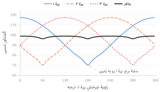
مثال 11.14 (یک دورِ روتور در بادِ لایهلایه) پرسش. با برشِ 0.2 و تندیِ 8 m/s در ارتفاعِ توپی، گشتاورِ هر پره و روتور را در یک دور، عمق و پهنای افتِ سایهٔ برج، و تندیِ همارزِ روتور را برای چند نمای برش حساب کنید. داده: ساختگی؛ شعاعِ برج 2.2 m، فاصلهٔ صفحهٔ روتور 6 m در ریشه، شیبِ 5°، مخروطیِ 3° (A-226).
پاسخ.
wind shear 0.2 and tower shadow at 8 m/s (A-226):
wind at the lowest tip (25 m) 6.06 m/s, at the top tip 8.95 m/s
torque of one blade over a turn (100 = uniform wind): 70.2 .. 117.2
rotor torque: 96.2 .. 98.8 (ripple 2.7 points, 3P)
tower radius 2.2 m; rotor plane 6 m upwind at the root, 16.3 m at the tip
deficit in front of the tower: 12 % at the root, 1.8 % at the tip;
the dip is 17 deg wide at 0.7 R
rotor-equivalent speed for 10 m/s at hub height:
shear 0.0 0.1 0.2 0.3 0.4
REWS 10.00 9.94 9.94 9.98 10.06
a power-law profile changes the rotor energy by under 1 %;
the 1P load on each blade is the real cost of shearتفسیر. گشتاورِ یک پره در هر دور میانِ حدودِ 70 و 117 درصدِ بادِ یکنواخت میرود: این یک چرخهٔ خستگی در هر دور است، صد میلیون چرخه در عمر (مثال 11.22). گشتاورِ روتور فقط حدودِ سه واحد با بسامدِ \(3P\) نوسان دارد. برای انرژی، تندیِ همارز با برشِ توانی کمتر از یک درصد با تندیِ توپی فرق دارد؛ اما نیمرخهای غیرتوانی (جتهای سطحِ پایین در شب، چرخشِ جهتِ باد با ارتفاع) میتوانند اختلافِ بیشتری بسازند و دلیلِ اندازهگیریِ باد در چند ارتفاعاند (فصلِ ۱۳). وارسی: \(8 \times 0.25^{0.2} = 6.06\) و \(8 \times 1.75^{0.2} = 8.95\ \text{m/s}\) (درست).
پیامد برای طراحی. شیبِ محور، مخروطیِ روتور و پیشخمِ پره هم فاصلهٔ نوک تا برج را زیاد میکنند (بخش 11.3.21) و هم افتِ سایه را کم؛ گامِ انفرادی (بخش 11.2.9) میتواند با تغییرِ گامِ هر پره در هر دور بخشِ \(1P\)ِ بار را کم کند. روتورِ پشت به باد (پرهها پشتِ برج) سایهٔ بسیار شدیدتری میبیند و صدای ضربهایِ بیشتری دارد؛ دلیلِ اصلیِ چیرگیِ روتورِ رو به باد همین است.
- چرا بارِ یک پره \(1P\) است و گشتاورِ روتور \(3P\)؟
- عمقِ افتِ سایه را در ریشه با معادلهٔ 11.11 وارسی کنید.
- تندیِ همارزِ روتور با تندیِ توپی چه فرقی دارد و کِی مهم میشود؟
- چرا تندیِ همارز با برشِ 0.2 کمی کمتر از تندیِ توپی است؟
- سه راهِ طراحی برای کمکردنِ اثرِ سایهٔ برج نام ببرید.
11.2.18 سایشِ لبهٔ حمله و افزودههای پره
ایده. نوکِ پرهٔ نیروگاهِ P با حدودِ 90 m/s در هوا حرکت میکند. قطرههای باران، تگرگ، گرد و غبار و حشرهها با این سرعت به لبهٔ حمله میخورند و پوشش و سپس لایههای کامپوزیت را میسایند. سطحِ زبر جریانِ مرزی را زودتر متلاطم و جدا میکند: پسا بیشتر، شیبِ برا کمتر و واماندگی زودتر میشود. چون یکسومِ بیرونیِ پره بیشترِ گشتاور را میسازد و بیشترین سرعت را دارد، هم آسیب و هم اثرش آنجاست.
مدلِ آموزشی (A-227). روی یکسومِ بیرونیِ پره: ضریبِ پسا 0.006 بیشتر، شیبِ برا 6 % کمتر، و واماندگی 2° زودتر. مقدارها ساختگیاند؛ اثرِ واقعی را اندازهگیریِ نیمرخِ زبر در تونلِ باد یا تحلیلِ دادهٔ کارِ مزرعه نشان میدهد.
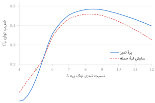
مثال 11.15 (هزینهٔ سالانهٔ لبهٔ ساییده) پرسش. با نیمرخِ ساییده، ضریبِ توانِ بیشینه و انرژیِ سالانهٔ یک توربین و مزرعه را در چگالیِ ساختگاه حساب کنید. زیرِ تندیِ اسمی توان با نسبتِ \(C_p\) کم میشود؛ بالای آن گام کمبود را جبران میکند. داده: بستهٔ داده 1.1.0، سناریوی S0؛ مدل ساختگی.
پاسخ.
leading-edge erosion on the outer third of the blade (A-227):
peak Cp at TSR 8.50: clean 0.4847, eroded 0.4581 (-5.5 %)
one turbine at site density: 17,183 MWh clean, 16,613 MWh eroded (-3.3 %)
twelve turbines: 6.84 GWh a year, 342 k u at 50 u/MWh
the outer third makes most of the torque and sees the highest
speed (rain and dust hit it hardest): leading-edge protection
and repair are planned maintenance, not cosmeticsتفسیر. کاهشِ 5.5 %ِ \(C_p\) فقط 3.3 % انرژی میبرد، چون بخشی از سال توربین در توانِ اسمی است و گام کمبود را جبران میکند. باز هم برای دوازده توربین حدودِ 6.8 GWh در سال است: بیش از هزینهٔ یک برنامهٔ بازرسی و ترمیم. وارسی: \(0.4581/0.4847 = 0.945\) (درست).
حفاظت و ترمیم. سه راه رایج است: پوششِ لبهٔ حمله (رنگ یا ماستیکِ انعطافپذیر)، نوارِ چسبیِ محافظ، و پوستهٔ پیشساخته که روی لبه چسبانده میشود. بازرسیِ دورهای (پهپاد، عکسبرداریِ زمینی) و ترمیم در فصلِ کمباد بخشی از برنامهٔ نگهداری است (بخش 11.4.17). برخی کنترلگرها در بارانِ شدید سرعتِ روتور را کم میکنند تا شدتِ برخورد کم شود؛ این یک مصالحهٔ انرژی و عمر است.
افزودههای پره. مولدهای گردابه (تیغههای کوچک نزدیکِ ریشه) جریانِ مرزی را انرژی میدهند و جدایش را عقب میاندازند؛ دندانههای لبهٔ فرار صدای لبهٔ فرار را کم میکنند (بخش 11.5.8)؛ نوارهای ایست گاه برای کنترلِ رفتارِ واماندگی به کار میروند. هر افزوده نیمرخ را عوض میکند و باید با تأییدِ سازنده و شاهدِ اندازهگیری نصب شود؛ افزودنِ دلبخواهی ممکن است بار یا صدا را بدتر کند.
ترمیمِ لبهٔ حمله کارِ در ارتفاع روی سطحِ پره است و فقط با دستورالعملِ سازنده، مواد و روشِ تأییدشده، کارکنانِ آموزشدیده و مجوزِ کار انجام میشود. این بخش فقط اثرِ آیرودینامیکی و ارزشِ اقتصادیِ آن را نشان میدهد.
- چرا سایش در یکسومِ بیرونیِ پره متمرکز است؟
- چرا کاهشِ انرژیِ سالانه از کاهشِ \(C_p\) کمتر است؟
- ارزشِ سالانهٔ اثرِ سایش را برای مزرعه با 50 u/MWh وارسی کنید.
- مولدِ گردابه چه میکند و کجای پره نصب میشود؟
- چرا افزودنِ دلبخواهیِ تیغه یا نوار به پره خطرناک است؟
11.2.19 روتور بهصورتِ چرخطیار: پاسخِ ناحیهٔ ۲
ایده. تا اینجا منحنیِ توان از نقطههای پایا ساخته شد: باد ثابت، روتور در تعادل. اما باد هر ثانیه عوض میشود و روتورِ 150 m یک چرخطیارِ عظیم است. معادلهٔ حرکتِ آن، با همهٔ گشتاورها به محورِ کمسرعت برده شده:
\[ J_\text{m}\,\frac{\mathrm{d}\omega}{\mathrm{d}t} = T_\text{a}(v, \omega, \theta_\text{p}) - T_\text{g} , \tag{11.13}\]
که \(J_\text{m}\) لختیِ روتور بهاضافهٔ لختیِ ژنراتور (ضربِ در مجذورِ نسبتِ دنده) است. در ناحیهٔ ۲، \(T_\text{g} = k\omega^2\) (معادلهٔ 11.7). اگر باد ناگهان بیشتر شود، \(T_\text{a}\) بالا میرود ولی \(T_\text{g}\) هنوز به سرعتِ قبلی وابسته است؛ مازادِ گشتاور روتور را تند میکند تا دو گشتاور دوباره برابر شوند.
ثابتِ زمانی. با خطیکردنِ معادلهٔ 11.13 پیرامونِ نقطهٔ کارِ \(\omega_0\):
\[ \tau = \frac{J_\text{m}}{2k\omega_0 - \partial T_\text{a}/\partial\omega} . \tag{11.14}\]
مخرج «میرایی» است: افزایشِ گشتاورِ ژنراتور با سرعت منهای افزایشِ گشتاورِ آیرودینامیکی با سرعت. در \(\lambda_\text{opt}\) گشتاورِ آیرودینامیکی با سرعت کم میشود، پس هر دو جمله پایداری میسازند.
مدلِ عددی. گشتاورِ آیرودینامیکی از جدولِ \(C_p(\lambda, \theta_\text{p})\) که با المانِ پره–تکانه ساخته شده درونیابی میشود (مدلِ شبهپایا: جریان در هر لحظه همان جریانِ پایا فرض میشود). گامِ زمانیِ 0.05 s و روشِ اویلر (فصلِ ۳) برای این دستگاهِ کُند کافی است.
def aero_torque(v: float, omega: float, pitch_deg: float) -> float:
"""Rotor torque (N m) from the quasi-steady Cp table."""
lam = min(max(omega * rotor.RADIUS / v, LAM[0]), LAM[-1])
cp = float(cp_table()((lam, min(max(pitch_deg, 0.0), PITCH[-1]))))
return 0.5 * RHO * rotor.AREA * v ** 3 * cp / omegadef simulate_region2(wind, dt: float, j: float = J_TOTAL):
"""J d(omega)/dt = T_aero - k omega^2, Euler steps; returns omega and
electrical power (W) for each time step."""
t = rotor.turbine()
k = k_law()
omega = rotor.tsr_opt() * wind[0] / rotor.RADIUS
om, pe = np.empty(len(wind)), np.empty(len(wind))
for n, v in enumerate(wind):
tg = k * omega ** 2
omega += dt * (aero_torque(v, omega, 0.0) - tg) / j
omega = min(max(omega, t.omega_min), t.omega_max)
om[n], pe[n] = omega, t.eta * tg * omega
return om, pe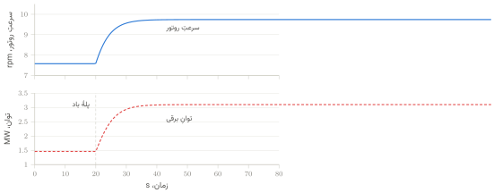
مثال 11.16 (پلهٔ باد در ناحیهٔ ۲) پرسش. باد در ثانیهٔ ۲۰ از 7 به 9 m/s میپرد. سرعتِ روتور و توانِ برقی را شبیهسازی کنید، زمانِ رسیدن به 63 %ِ تغییر را با معادلهٔ 11.14 مقایسه کنید. داده: لختیِ کلِ \(J_\text{m} = 36 \times 10^6\ \text{kg\,m}^2\) (روتور \(32 \times 10^6\) بهاضافهٔ ژنراتورِ بازتابیده، A-228)، چگالیِ ساختگاه.
پاسخ.
region 2 after a wind step 7 -> 9 m/s (J 36e6 kg m2, rho 1.056, A-228):
rotor speed 7.58 -> 9.74 rpm; 63 % reached after 4.2 s
linear estimate tau = J / (2 k omega - dTa/domega) = 3.8 s
power just after the step 1,593 kW, final 3,099 kW (ideal 3,099 kW)
the generator torque follows the speed, not the wind: the
rotor first speeds up on the surplus aerodynamic torque and
the power rises with it (the rotor stores energy meanwhile)تفسیر. درست پس از پله، توانِ برقی تغییر نمیکند: گشتاورِ ژنراتور تابعِ سرعت است و سرعت هنوز عوض نشده. در حدودِ چهار ثانیه روتور 63 %ِ راه را میرود و در حدودِ پانزده ثانیه به توانِ پایا میرسد. ثابتِ زمانیِ خطی (3.8 s) کمی کمتر از شبیهسازی است چون گذر بزرگ است و نقطهٔ کار در راه عوض میشود. وارسی: توانِ پایانی همان 3,099 kWِ تمرین 11.50 است (درست).
پیامد. روتور در این مدت انرژی ذخیره میکند (\(\tfrac12 J_\text{m}\omega^2\)) و توانِ تحویلی نرمتر از توانِ باد است. همین ذخیره اساسِ پاسخِ لَختیِ مصنوعی است: مبدّل میتواند چند ثانیه از انرژیِ روتور به شبکه بدهد (فصلهای ۹ و ۲۷)؛ هزینهاش کندشدنِ روتور و بازگشتِ کُندِ پس از آن است.
- چرا توانِ برقی درست پس از پلهٔ باد عوض نمیشود؟
- در معادلهٔ 11.14 چرا هر دو جملهٔ مخرج پایداری میسازند؟
- انرژیِ جنبشیِ روتور را در 7.58 و 9.74 rpm حساب کنید؛ تفاوت از کجا آمد؟
- اگر لختی نصف شود، ثابتِ زمانی چه میشود؟
- پاسخِ لختیِ مصنوعی از کجا انرژی میگیرد و هزینهاش چیست؟
11.2.20 تعقیبِ بهینه در بادِ متلاطم
ایده. چون روتور با تأخیر به باد پاسخ میدهد، در بادِ متلاطم همیشه کمی از \(\lambda_\text{opt}\) دور است و \(C_p\)ِ لحظهای کمی کمتر از بیشینه است. پرسش: این تلفاتِ تعقیب چقدر است و لختی چه اثری دارد؟
مدلِ بادِ آموزشی. تندیِ متوسطگرفته روی سطحِ روتور با یک فرایندِ مرتبهٔ اول (خودهمبسته با ثابتِ زمانیِ 10 s، فصلِ ۳) ساخته میشود. بادِ واقعیِ نقطهای نوسانهای تندتری دارد، اما روتورِ بزرگ آنها را روی سطح میانگین میگیرد. انرژیِ ذخیره در روتور در پایانِ بازه به حساب برگردانده میشود تا تفاوتِ حالتِ آغاز و پایان نتیجه را خراب نکند.
مثال 11.17 (چقدر از دست میرود؟) پرسش. با بادِ متلاطمِ 6 و 7 m/s و شدتِ تلاطمِ 10 و 16 %، انرژیِ گرفتهشده را با انرژیِ آرمانی (همیشه روی \(C_{p,\max}\)) برای لختیِ واقعی و یکچهارمِ آن مقایسه کنید.
پاسخ.
region 2 tracking in turbulent wind (1800 s, AR(1) time scale 10 s, A-228):
mean m/s TI inertia captured / ideal tracking loss
6.0 0.10 J 0.9927 0.73 %
6.0 0.10 J/4 0.9976 0.24 %
7.0 0.10 J 0.9933 0.67 %
7.0 0.10 J/4 0.9976 0.24 %
7.0 0.16 J 0.9843 1.57 %
7.0 0.16 J/4 0.9953 0.47 %
the energy stored in the rotor at the end is counted back;
a heavier rotor follows the gusts later and loses more, yet
the loss stays small: the rotor-averaged wind is smooth
compared with the rotor's time constant of a few secondsتفسیر. تلفاتِ تعقیب برای روتورِ نیروگاهِ P حدودِ 0.7 % در تلاطمِ متوسط و 1.6 % در تلاطمِ زیاد است؛ روتورِ سبکتر کمتر از دست میدهد. این تلفات در منحنیِ توانِ اندازهگیریشده (که در همین بادِ متلاطم ثبت میشود) از پیش دیده شده است؛ نباید آن را دوباره از انرژیِ سالانه کم کرد. اما اگر تلاطمِ ساختگاه بیشتر از ساختگاهِ آزمون باشد، تفاوتی میماند که به عدمِ قطعیتِ منحنی (فصلِ ۱۶) اضافه میشود. وارسی: ترتیبِ نتیجهها منطقی است: لختیِ بیشتر و تلاطمِ بیشتر، تلفاتِ بیشتر.
خطای رایج. «لختیِ زیاد بد است، پس روتور را سبک کنید.» لختی انرژیِ گذرا را ذخیره میکند، نوسانِ توان را نرم میکند و در پاسخِ لختیِ مصنوعی مفید است؛ سبککردنِ پره هزینه، سختی و خیز را هم عوض میکند (بخش 11.3.21). طراح همهٔ اینها را با هم میسنجد.
- چرا روتورِ سنگین در بادِ متلاطم انرژیِ کمتری میگیرد؟
- چرا انرژیِ ذخیره در روتور در پایان به حساب برگردانده شد؟
- چرا تلفاتِ تعقیب نباید دوباره از انرژیِ سالانه کم شود؟
- یک مزیتِ لختیِ زیاد را بنویسید.
11.2.21 حلقهٔ گام، جایگذاریِ قطب و برنامهریزیِ بهره
ایده. بالای تندیِ اسمی (بخش 11.2.9) گشتاورِ ژنراتور ثابت است و کنترلگرِ گام سرعت را روی سقف نگه میدارد. حلقهٔ بسته را با خطیکردنِ معادلهٔ 11.13 میسازیم. دو حساسیت تعریف میکنیم: \(G = -\partial T_\text{a}/\partial\theta_\text{p}\) (چقدر گشتاور با گام کم میشود) و \(D = -\partial T_\text{a}/\partial\omega\) (میراییِ آیرودینامیکی). با کنترلگرِ تناسبی–انتگرالیِ \(K_p\) و \(K_i\) روی خطای سرعت، معادلهٔ مشخصه و بهرهها برای بسامدِ طبیعیِ \(\omega_n\) و میراییِ \(\zeta\) چنیناند:
\[ \begin{aligned} J_\text{m}s^2 + (D + G K_p)\,s + G K_i &= 0 , \\ K_p = \frac{2\zeta\omega_n J_\text{m} - D}{G}, \qquad K_i &= \frac{J_\text{m}\,\omega_n^2}{G} . \end{aligned} \tag{11.15}\]
def pi_gains(g: float, d: float, wn: float = 0.6, zeta: float = 0.7):
"""Pole placement for J s^2 + (D + G Kp) s + G Ki = 0 with
G = -dT/dpitch and D = -dT/domega (both per rad)."""
kp = (2 * zeta * wn * J_TOTAL - d) / g
ki = J_TOTAL * wn ** 2 / g
return kp, kiمشکل. \(G\) و \(D\) با تندیِ باد (یعنی با گامِ کار) بسیار تغییر میکنند. بهرههایی که در 12 m/s درستاند، در 24 m/s حلقهٔ دیگری میسازند. برنامهریزیِ بهره بهرهها را با گامِ کنونی تغییر میدهد تا قطبهای حلقهٔ بسته تقریباً ثابت بمانند.
مثال 11.18 (حساسیتِ گشتاور به گام) پرسش. در تندیهای 12 تا 24 m/s، گامِ کار، \(\partial T_\text{a}/\partial\theta_\text{p}\) و \(\partial T_\text{a}/\partial\omega\) را از جدولِ \(C_p\) بیابید؛ بهرهها را برای 0.6 rad/s و میراییِ 0.7 حساب کنید؛ ببینید بهرههای ثابتِ 12 m/s در 22 m/s چه حلقهای میسازند.
پاسخ.
region 3: rotor torque sensitivity to pitch at rated speed (rho 1.056):
v m/s pitch deg dT/dpitch kN m/deg dT/domega MN m s Kp s Ki
12.0 6.30 -589.6 -4.36 0.766 0.384
14.0 9.63 -859.1 -6.97 0.473 0.263
16.0 12.24 -1134.7 -10.42 0.305 0.199
18.0 14.55 -1316.9 -15.60 0.194 0.172
20.0 16.68 -1511.4 -20.19 0.116 0.150
22.0 18.69 -1700.5 -22.93 0.075 0.133
24.0 20.57 -1896.3 -29.94 0.003 0.119
linear fit: G = 0.5 + 91.3 x pitch (kN m/deg, pitch in deg),
almost proportional to pitch on this rotor
G at 24 m/s is 3.2 times G at 12 m/s: gains tuned at 12 m/s are
multiplied by the factor G(pitch_12) / G(pitch)
fixed gains at 22 m/s: natural frequency 1.02 rad/s, damping 1.33
(design 0.60 rad/s and 0.70; tower 1.35 rad/s)تفسیر. روی این روتور حساسیتِ گشتاور به گام تقریباً متناسب با خودِ گام است: در 24 m/s بیش از سه برابرِ 12 m/s. میراییِ آیرودینامیکی هم با باد بیشتر میشود، تا جایی که در 24 m/s تقریباً بهتنهایی میراییِ طراحی را میسازد و \(K_p\) نزدیکِ صفر است. با بهرههای ثابت، بسامدِ طبیعیِ حلقه در 22 m/s از 0.6 به 1.02 rad/s میرسد: نزدیک به بسامدِ نخستِ برج (1.35 rad/s، مثال 11.25). حلقهٔ گامی که نزدیکِ بسامدِ برج کار کند میتواند ارتعاشِ جلو–عقبِ برج را تشدید کند؛ این مدل برج را ندارد، پس آن خطر را نشان نمیدهد و فقط هشدار میدهد. وارسی: \(91.3 \times 6.30 = 575\) و \(91.3 \times 20.57 = 1878\ \text{kN\,m/deg}\)، نزدیکِ مقدارهای جدول (درست).
def simulate_gust(wind, dt: float, kp: float, ki: float, sched=None):
"""Constant generator torque, PI pitch on rotor speed error; with
sched = (g0, slope, pitch_ref) the gains are multiplied by
G(pitch_ref) / G(pitch). Pitch rate limit 8 deg/s, range 0 .. 35 deg.
The integrator holds pitch in radians; returns omega, pitch (deg)."""
t = rotor.turbine()
op = operating_point(float(wind[0]))
om_r, tg = t.omega_max, t.rated_w / (t.eta * t.omega_max)
omega, pitch = om_r, op.pitch
integ = math.radians(pitch) # integral part of the command
om, pt = np.empty(len(wind)), np.empty(len(wind))
for n, v in enumerate(wind):
e = omega - om_r
gk = 1.0
if sched:
g0, slope, p_ref = sched
gk = (g0 + slope * p_ref) / (g0 + slope * pitch)
integ += gk * ki * e * dt
cmd = math.degrees(gk * kp * e + integ)
cmd = min(max(cmd, 0.0), 35.0)
pitch += min(max(cmd - pitch, -8.0 * dt), 8.0 * dt)
omega += dt * (aero_torque(v, omega, pitch) - tg) / J_TOTAL
om[n], pt[n] = omega, pitch
return om, pt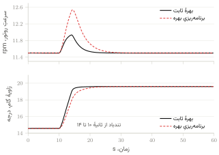
مثال 11.19 (یک تندباد، سه کنترلگر) پرسش. باد در چهار ثانیه از 18 به 23 m/s میرسد (تندبادِ آموزشی، نه حالتِ بارِ استاندارد). بیشینهٔ سرعت، بیشینهٔ نرخِ گام و پیمایشِ گام را برای سه کنترلگر مقایسه کنید: بهرهٔ ثابتِ 12 m/s، برنامهریزیشده با 0.6 rad/s، برنامهریزیشده با 0.8 rad/s.
پاسخ.
gust 18 -> 23 m/s in 4 s at rated speed (teaching gust, A-228):
controller peak rpm overspeed max pitch rate pitch travel
deg/s deg
fixed (12 m/s) 11.94 3.80 % 1.30 5.0
scheduled 0.6 12.54 9.04 % 1.05 5.0
scheduled 0.8 12.23 6.31 % 1.19 5.1
pitch 14.6 -> 19.6 deg in all cases; limit 8 deg/s
fixed gains are stiffer at high wind: less overspeed but a
loop frequency that drifts towards the tower's (not modelled
here); with the schedule the designer chooses the frequency
once (0.6 or 0.8 rad/s) and it holds at every wind speedتفسیر. بهرهٔ ثابت در بادِ زیاد «سفتتر» است و فراجهشِ سرعتِ کمتری دارد؛ اما حلقهاش در هر تندیِ باد رفتارِ دیگری دارد و بسامدش به برج نزدیک میشود. با برنامهریزی، طراح بسامد را یک بار انتخاب میکند و این رفتار در همهٔ تندیها میماند؛ برای فراجهشِ کمتر بسامدِ بالاتری (0.8 rad/s) انتخاب میکند تا جایی که فاصله از برج و فرسایشِ محرکِ گام اجازه دهد. وارسی: هیچکدام به سقفِ نرخِ 8°/s نمیرسد و گامِ پایانی در هر سه یکی است، چون نقطهٔ پایای 23 m/s به کنترلگر بستگی ندارد (درست).
مرزِ مدل. کنترلگرِ واقعی پالایهها (مثلاً پالایهٔ بسامدِ برج و \(3P\))، محدودیتِ گشتاور و توانِ ثابت، منطقِ گذار میانِ ناحیهها، کاهشِ بار با گامِ انفرادی و دهها حالتِ حفاظتی دارد و با شبیهسازِ کاملِ آیروالاستیک (پره، برج، پیشرانه) طراحی و برای گواهی آزموده میشود. این درس فقط سازوکار را نشان میدهد؛ تنظیمِ کنترلگرِ توربین کارِ سازنده است.
- \(G\) و \(D\) چه معنایی دارند و چرا با باد تغییر میکنند؟
- با معادلهٔ 11.15، اگر \(G\) دو برابر شود و بهرهها ثابت بمانند، \(\omega_n\) چه میشود؟
- چرا حلقهٔ گام باید از بسامدِ برج دور بماند؟
- چرا گامِ پایانی در هر سه کنترلگر یکی است؟
- برنامهریزیِ بهره با چه متغیری انجام شد و چرا با تندیِ باد نه؟
11.3 ب. معماریِ توربین و بارها
بخشِ ب توربین را باز میکند: درختِ زیرمجموعهها و رابطها، روتور و سامانهٔ گام، سه معماریِ پیشرانه، ژنراتور و مبدّل، چرخش و ترمز، ناسل، برج و فونداسیون، حسگرها و کنترلگر. سپس مسیرِ بار را دنبال میکند، بارهای اصلی را برآورد میکند، مفهومِ ردهٔ طراحی و سازگاریِ ساختگاه را میآموزد، خستگی را با شمارشِ جریانِ بارانی میسنجد، بسامدِ برج را با تحریکِ روتور مقایسه میکند، و با روانکاری، خنککاری و پایشِ وضعیت پایان مییابد.
11.3.1 درختِ زیرمجموعهها و رابطها
ایده. توربین چهار گروهِ اصلی دارد (شکل 11.15): روتور (پرهها، توپی، سامانهٔ گام)، ناسل و پیشرانه (یاتاقانِ اصلی، محور، جعبهدنده، ترمز، ژنراتور، شاسی، چرخش)، سازهٔ نگهدارنده (برج، فلنجها، قفسهٔ پیچ، فونداسیون) و برق، کنترل و ایمنی (مبدّل، ترانسفورماتور، کنترلگر، سامانهٔ ایمنی، حسگرها). هر جا دو گروه به هم میرسند یک رابط هست که بار، انرژی یا داده از آن میگذرد و مسئول، نقشه و آزمونِ خودش را میخواهد. این همان مثالِ کارشدهٔ دوم (بخشِ نخست) است؛ بخشِ دوم طرحِ کیفیتِ یک قطعهٔ برج است (بخش 11.4.18).
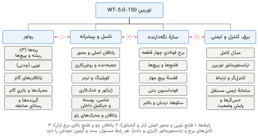
مثال 11.20 (جرمِ زیرمجموعهها) پرسش. با جرمهای آموزشیِ A-214، جرمِ بالای برج و جرمِ بالای فونداسیون را بیابید.
پاسخ.
subassembly masses of one WT-5.0-150 (A-214, teaching values):
blades (3 x 22 t) 66 t
hub with pitch system 45 t
nacelle with drivetrain 160 t
tower (100 m steel) 340 t
foundation (concrete and steel) 1700 t
tower-top mass (rotor + nacelle) 271 t; above foundation 611 t
the foundation weighs more than everything above it: it
must resist the overturning moment, not only the weightتفسیر. 271 t در 100 m ارتفاع، بزرگترین جرمِ سری برج است و بسامدِ آن را تعیین میکند (بخش 11.3.15). فونداسیون از همهٔ آنچه بالایش است سنگینتر است چون باید در برابرِ گشتاورِ واژگونی پایدار بماند، نه فقط وزن را تحمل کند. این عددها ورودیِ جرثقیل و حمل (بخش 11.4.15) و طراحیِ سازه (فصلِ ۳۰) هم هستند. وارسی: \(66 + 45 + 160 = 271\ \text{t}\) (درست).
- چهار گروهِ اصلیِ توربین را با دو جزءِ هر کدام نام ببرید.
- سه رابطِ اصلیِ شکل 11.15 چه چیزی را منتقل میکنند؟
- چرا فونداسیون از سازهٔ بالای خود سنگینتر است؟
11.3.2 روتور: پره، توپی و ریشه
ایده. هر پره یک تیرِ کامپوزیتیِ توخالیِ هفتاد و چند متری است: پوستهٔ آیرودینامیکی، دو کلاهکِ تیرِ اصلی (به انگلیسی spar caps) که خمشِ رو به باد را میبرند، و جانهای برشی (به انگلیسی shear webs) میانِ آنها (بخش 11.4.2). پره در ریشه با دهها پیچِ پیشکشیده به یاتاقانِ گام و از آنجا به توپیِ چدنی بسته میشود. ریشه پرتنشترین بخشِ پره است: بارِ خمشیِ رو به باد، بارِ گرانشیِ لبهای که هر دور برمیگردد، و نیروی گریز از مرکز.
خطای رایج. «پیچهای ریشه فقط باید محکم بسته شوند.» نیروی پیشکشیدگیِ هر پیچ با روشِ کنترلشده (کششدهندهٔ هیدرولیک یا گشتاورِ کالیبره) و سوابقِ آن برای هر پیچ شرطِ عمرِ خستگیِ اتصال است؛ پیچِ شل بار را به پیچهای همسایه میسپارد و زنجیرهٔ شکست میسازد (بخش 11.4.13).
- سه بخشِ سازهایِ پره و نقشِ هر کدام را بنویسید.
- سه بارِ ریشهٔ پره را نام ببرید.
- چرا سوابقِ پیشکشیدگیِ پیچها نگهداشته میشود؟
11.3.3 سامانهٔ گام
ایده. هر پره روی یک یاتاقانِ گام (یاتاقانِ ساچمهایِ بزرگ با قطرِ چند متر) میچرخد و یک محرک دارد: موتورِ برقی با چرخدندهٔ کاهنده یا سیلندرِ هیدرولیک. منبعِ پشتیبان (باتری یا ابرخازن برای برقی، انباره برای هیدرولیک) در توپی است تا در قطعِ برق پره به بادنما برود (بخش 11.2.9). کنترلگرِ گام در توپی است و از راهِ حلقهٔ لغزان (به انگلیسی slip ring) با ناسل ارتباط دارد.
خرابیهای رایج. سایشِ یاتاقانِ گام (حرکتهای کوچکِ پرتکرار در گامِ تقریباً ثابت، روانکاری را از تماس بیرون میراند)، فرسودگیِ باتری، خطای رمزگذارِ زاویه و نشتیِ هیدرولیک. چون گام ترمزِ ایمنی است، اینها پایش و آزمونِ دورهای میخواهند (فصلِ ۵۲).
- دو نوعِ محرکِ گام و منبعِ پشتیبانِ هر کدام چیست؟
- چرا یاتاقانِ گام در گامِ تقریباً ثابت آسیب میبیند؟
- حلقهٔ لغزان چه کاری میکند؟
11.3.4 پیشرانه: سه معماری
ایده. روتور با گشتاورِ میلیونها نیوتنمتر در حدودِ ده دور بر دقیقه میچرخد. ژنراتورِ هماندازهٔ این گشتاور بسیار بزرگ است (فصلِ ۸: حجمِ فعال با گشتاور بالا میرود). سه راه هست: دندهدارِ سرعتبالا (جعبهدندهٔ سهمرحلهای، ژنراتورِ حدودِ هزار دور، D-011)، دندهدارِ سرعتمیانه (دو مرحله، ژنراتورِ آهنربایی در چند صد دور) و پیشرانهٔ مستقیم (ژنراتورِ آهنربایی با قطرِ چند متر، بیجعبهدنده).
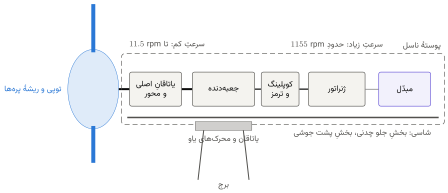
مثال 11.21 (گشتاور در سه معماری) پرسش. گشتاورِ محورِ اصلی را در توانِ اسمی و گشتاورِ ژنراتور را برای سه معماری بیابید.
پاسخ.
main-shaft torque at rated: 4.42 MN m at 11.5 rpm (A-211)
architecture generator rpm ratio generator torque
geared, high speed (D-011) 1155.0 100.4 44 kN m
geared, medium speed 400.0 34.8 127 kN m
direct drive 11.5 1.0 4417 kN m
a machine's active volume grows with its torque (chapter 8):
the direct-drive generator is about a hundred times larger
than the high-speed one; the gearbox moves that size into
gears and bearings that need oil, cooling and maintenanceتفسیر. جعبهدندهٔ ۱ به ۱۰۰ گشتاور را صد برابر کم میکند و ژنراتور را کوچک و ارزان؛ بهای آن چرخدنده و یاتاقانهایی است که روغن، خنککاری، پایش و گاهی تعویضِ پرهزینه با جرثقیلِ بزرگ میخواهند. پیشرانهٔ مستقیم قطعههای چرخانِ کمتری دارد اما ژنراتوری سنگین با آهنربای خاکیِ کمیاب. انتخابِ نیروگاهِ P با ماتریسِ وزندارِ فصلِ ۸ انجام شد (D-011)؛ این عددها اندازهٔ هر گزینه را نشان میدهند. وارسی: \(4417/100.4 = 44\ \text{kN\,m}\) (درست).
نگهداشتنِ محورِ اصلی. در آرایشِ سهنقطهای یک یاتاقانِ اصلی جلو و جعبهدنده (با دو بازوی گشتاور) پشت، محور را نگه میدارند؛ در آرایشِ چهارنقطهای دو یاتاقانِ اصلی همهٔ بارهای غیرگشتاوری را میگیرند و جعبهدنده فقط گشتاور میبیند. دومی جعبهدنده را از بارهای خمشیِ روتور جدا میکند و سنگینتر است.
- گشتاورِ ژنراتورِ سرعتمیانه با نسبتِ ۳۵ را از 4.42 MN·m حساب کنید.
- یک سود و یک هزینهٔ پیشرانهٔ مستقیم را بنویسید.
- آرایشِ چهارنقطهای چه سودی برای جعبهدنده دارد؟
11.3.5 ژنراتور و مبدّل
ایده. فصلهای ۸ و ۹ ماشینها و مبدّلها را ساختند؛ اینجا فقط رابط با روتور مهم است. در ژنراتورِ دوسوتغذیه (فصلِ ۸، بخش 8.2.13) فقط توانِ روتورِ ژنراتور (حدودِ یکسوم) از مبدّل میگذرد و بازهٔ سرعت محدود است؛ در مبدّلِ کامل (نیروگاهِ P) همهٔ توان از مبدّل میگذرد، بازهٔ سرعت پهن است و رفتار در شبکه را مبدّل تعیین میکند (فصلِ ۹). قانونِ \(k\omega^2\) (بخش 11.2.8) در عمل یک فرمانِ گشتاور به مبدّلِ سمتِ ماشین است.
پیامد برای نیروگاه. چون مبدّلِ کامل ژنراتور را از شبکه جدا میکند، بسامدِ شبکه به سرعتِ روتور گره نمیخورد و انرژیِ جنبشیِ روتور فقط با کنترل (پاسخِ اینرسیِ مصنوعی) به شبکه میرسد؛ این رابطی است که فصلهای ۹، ۱۷ و ۳۴ دنبال میکنند.
- تفاوتِ ژنراتورِ دوسوتغذیه و مبدّلِ کامل در سهمِ توانِ عبوری از مبدّل چیست؟
- قانونِ \(k\omega^2\) در کدام تجهیز اجرا میشود؟
- چرا انرژیِ جنبشیِ روتور در مبدّلِ کامل خودبهخود به شبکه نمیرسد؟
11.3.6 چرخش و ترمز
ایده. یاتاقانِ یاو ناسل را روی برج نگه میدارد و همهٔ بارهای روتور و ناسل از آن به برج میرسد. چند محرکِ یاو (موتور با جعبهدندهٔ سیارهای و چرخدندهٔ کوچک که با دندانههای یاتاقان درگیر است) ناسل را میچرخانند و ترمزهای یاو (کالیپرهای هیدرولیک روی یک حلقهٔ ترمز) آن را نگه میدارند. ترمزِ روتور (بخش 11.2.11) روی محورِ سرعتبالا است چون گشتاورِ آنجا صد برابر کمتر است و ترمزِ کوچکی بس است.
- چرا ترمزِ روتور روی محورِ سرعتبالا نصب میشود؟
- بارهای روتور از کدام جزء به برج میرسند؟
- محرکها و ترمزهای یاو هر کدام چه میکنند؟
11.3.7 ناسل
ایده. شاسی (به انگلیسی bedplate) استخوانبندیِ ناسل است: بخشِ جلوی آن معمولاً چدنِ نشکن (یاتاقانِ اصلی و یاو را نگه میدارد) و بخشِ پشت قابِ فولادیِ جوشی (ژنراتور، مبدّل، تابلوها). پوسته از کامپوزیتِ شیشه است. در ناسل جرثقیلِ کوچکی برای جابهجاییِ قطعههای کوچک، سامانههای خنککاری، تهویه، روشنایی و تابلوها هست، و برای قطعههای بزرگ (جعبهدنده، ژنراتور) جرثقیلِ بیرونی لازم است (بخش 11.4.17).
- چرا بخشِ جلوی شاسی ریختهگری است؟
- کدام قطعههای ناسل برای تعویض جرثقیلِ بیرونی میخواهند؟
11.3.8 برج و فونداسیون
ایده. برجِ لولهایِ فولادی در چند قطعه با فلنجهای پیچی به هم بسته میشود؛ قطرِ پایه را محدودیتِ حملِ جادهای تعیین میکند (حدودِ 4.5 m). برای برجهای بلندتر برجِ هیبریدی (پایهٔ بتنیِ پیشساخته و بالای فولادی) یا برجِ مشبک به کار میرود. فونداسیونِ وزنیِ بتنی (پیگسترده با قطرِ حدودِ بیست متر) روی خاکِ مناسب، یا فونداسیونِ شمعی روی خاکِ ضعیف، برج را از راهِ قفسهٔ پیچِ مهار (حلقهای از پیچهای بلندِ مدفون در بتن) نگه میدارد. طراحیِ برج و فونداسیون و ارزیابیِ ژئوتکنیک در IEC 61400-6:2020 و فصلهای ۲۹ و ۳۰ است.
خطای رایج. «فونداسیون فقط بتن است.» گروتِ زیرِ فلنجِ پایه، قفسهٔ پیچ، آرماتور و زهکشی جزئیاتیاند که در چند سالِ نخست با ترک و شلشدنِ پیچ خود را نشان میدهند؛ سوابقِ ساختِ فونداسیون به اندازهٔ سوابقِ کارخانه مهماند (فصلهای ۴۹ و ۵۰).
- چه چیزی قطرِ پایهٔ برجِ فولادی را محدود میکند و راههای گذر از آن کداماند؟
- قفسهٔ پیچِ مهار چیست؟
- دو جزئیاتِ فونداسیون را که در سالهای نخست خرابی میسازند نام ببرید.
11.3.9 حسگرها
| حسگر | کجا | برای چه |
|---|---|---|
| بادسنج و بادنما (فراصوتی یا مکانیکی) | بالای ناسل | شروع و قطع، چرخشِ ناسل، پایشِ منحنیِ توان |
| سرعتِ روتور و ژنراتور | محورها | کنترلِ گشتاور و گام، حفاظتِ سرعتِ بیش از حد |
| زاویهٔ گام | هر پره | کنترل و حفاظت |
| شتابسنجِ ناسل | شاسی | لرزشِ برج، حفاظت |
| دما (روغن، یاتاقانها، سیمپیچ، هوا) | پیشرانه، ژنراتور، ناسل | حفاظت، پایشِ وضعیت |
| لرزش (پایشِ وضعیت) | یاتاقانها و جعبهدنده | تشخیصِ زودهنگامِ خرابی (بخش 11.3.17) |
| ذرههای روغن | جعبهدنده | سایشِ چرخدنده و یاتاقان |
| بارِ پره (کرنش یا نوری) | ریشهٔ پره | گامِ انفرادی، پایشِ بار |
| یخ | پره یا ناسل | توقف یا کاهشِ توان (بخش 11.4.11) |
| ولتاژ، جریان، توان | مبدّل و ترانسفورماتور | کنترل و حفاظتِ برقی |
- چرا بادسنجِ ناسل برای سنجشِ منحنیِ توان کافی نیست؟
- کدام حسگرها هم در کنترل و هم در حفاظت به کار میروند؟
11.3.10 کنترلگر و سامانهٔ ایمنی
ایده. کنترلگرِ توربین سه لایه دارد: کنترلِ کار (قانونِ گشتاور، گام، چرخش، شروع و توقف)، مدیریتِ حالتها (آماده، کار، توقف، خطا، نگهداری) و ارتباط با سامانهٔ پایش و کنترلِ نیروگاه (فرمانِ توان و توانِ راکتیو، داده؛ فصلهای ۳۵ تا ۳۷). کنار آن، سامانهٔ ایمنیِ مستقل (زنجیرهٔ ایمنی) با سختافزار و منطقِ جدا سرعتِ بیش از حد، لرزش، دکمههای توقفِ اضطراری و خطای کنترلگر را پایش میکند و بینیاز از کنترلگر توربین را به حالتِ ایمن میبرد (شکل 11.6).
چرا جدا؟ اگر کنترلگر (نرمافزار، تغذیه، ارتباط) خراب شود، همان سامانه نمیتواند حفاظت را تضمین کند. امنیتِ سایبری: کنترلگر از راهِ شبکهٔ نیروگاه فرمان میگیرد؛ سامانهٔ ایمنی نباید از راهِ شبکه قابلِغیرفعالکردن باشد (فصلِ ۳۶، فقط دفاعی).
- سه لایهٔ کنترلگر را نام ببرید.
- چرا سامانهٔ ایمنی از کنترلگر جداست؟
- کدام فرمانها از کنترلگرِ نیروگاه به توربین میرسند؟
11.3.11 مسیرِ بار و رابطها
ایده. دو جریان از توربین میگذرد (شکل 11.17): بار (نیرو و گشتاورِ خمشی) از پرهها به توپی، یاتاقانِ اصلی، شاسی، یاتاقانِ یاو، برج، قفسهٔ پیچ، فونداسیون و خاک؛ و گشتاور و توان از محور به جعبهدنده، ژنراتور، مبدّل، ترانسفورماتور و شبکه. جعبهدنده جایی است که دو جریان به هم میرسند: گشتاورِ واکنشِ آن از بازوهای گشتاور به شاسی برمیگردد. هر اتصال در این دو زنجیره یک رابط است.
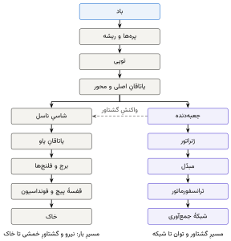
| رابط | چه میگذرد | شاهدِ کیفیتِ رابط | مسئول |
|---|---|---|---|
| ریشهٔ پره – یاتاقانِ گام | بارِ خمشی و گریز از مرکز | سوابقِ پیشکشیدگیِ پیچها | سازنده، نصاب |
| توپی – محورِ اصلی | همهٔ بارهای روتور | تختی و پیچها | سازنده |
| جعبهدنده – شاسی | واکنشِ گشتاور | بازوهای گشتاور و میراگرها | سازنده |
| شاسی – یاتاقانِ یاو – برج | همهٔ بارهای بالای برج | فلنجِ بالا، پیچها | سازنده، پیمانکار |
| فلنجهای برج | خمش و برش | تختی، پیچها و سوابق | سازندهٔ برج، نصاب |
| برج – فونداسیون | گشتاورِ واژگونی | قفسهٔ پیچ، گروت، کششدهی | پیمانکارِ عمرانی |
| ترانسفورماتور – شبکهٔ جمعآوری | انرژی | آزمونهای برق (فصلِ ۵۰) | پیمانکارِ برق |
| کنترلگر – سامانهٔ نیروگاه | داده و فرمان | آزمونهای یکپارچهسازی | سازنده، یکپارچهساز |
- دو جریانِ شکل 11.17 را از آغاز تا پایان بنویسید.
- چرا جعبهدنده محلِ برخوردِ دو جریان است؟
- برای رابطِ «برج – فونداسیون» دو شاهدِ کیفیت نام ببرید.
11.3.12 بارها
ایده. بارهای توربین پنج منبع دارند: آیرودینامیکی (رانش و گشتاور، با تلاطم، برشِ باد و دنبالهٔ برج)، گرانشی (وزنِ پره که هر دور جهتش نسبت به پره برمیگردد)، اینرسی (گریز از مرکز، شتاب در توقف و گذارها)، ژیروسکوپی (چرخشِ ناسل وقتی روتور میچرخد) و کاری (گذارهای کنترل، قطعِ شبکه، توقفِ اضطراری). بارها میانگین (برای مقاومت) و چرخهای (برای خستگی) دارند.
مثال 11.22 (برآوردِ مرتبهٔ اول از نقطههای کار) پرسش. با رانشِ بیشینه، جرمهای A-214 و سرعتِ سقف، گشتاورِ رو به بادِ ریشهٔ پره، گشتاورِ لبهایِ گرانشی، نیروی گریز از مرکز و گشتاورِ پای برج را برآورد کنید.
پاسخ.
first-order loads from the operating points (A-214):
peak rotor thrust 923 kN at 10.0 m/s (just below rated)
blade-root flap moment ~ T/3 x 2R/3 = 15.4 MN m (mean)
blade-root edge moment from gravity +-m g r_cg = 4.75 MN m, once per turn
centrifugal pull at 11.5 rpm m w^2 r_cg = 702 kN per blade
tower-base moment from thrust T x H = 92 MN m
gravity reverses every turn: 20 years at about 10 rpm is of
the order of 10^8 edgewise cycles; fatigue, not one storm,
sizes much of a bladeتفسیر. گشتاورِ لبهایِ گرانشی 4.75 MN·m است اما هر دور از مثبت به منفی میرود: در بیست سال حدودِ هشتاد میلیون چرخه (E13). گشتاورِ رو به باد بزرگتر است اما میانگینش با تلاطم بالا و پایین میرود. نیروی گریز از مرکز 702 kN پره را میکشد و ریشه باید آن را با خمشها تحمل کند. وارسی: \(22\,000 \times 9.81 \times 22 = 4.75\ \text{MN\,m}\) (درست).
برشِ باد و دنبالهٔ برج. با برشِ باد (فصلِ ۴، بخش 4.2.6) پره در بالای دور تندیِ بیشتری میبیند تا پایین: بارِ یکبار در هر دور (\(1P\)). هر بار که پره از جلوی برج میگذرد، جریان کمی کند میشود: ضربهٔ سهبار در هر دور (\(3P\)) روی روتور و برج. اینها تحریکهای اصلیِ بخش 11.3.15اند.
- پنج منبعِ بارِ توربین را نام ببرید.
- چرا بارِ گرانشیِ پره چرخهای است؟
- برشِ باد چه بارِ چرخهای میسازد؟
11.3.13 ردهٔ طراحی و سازگاریِ ساختگاه
ایده. سازنده توربین را برای یک ردهٔ شرایطِ باد طراحی میکند و نهادِ گواهیدهنده آن را تأیید میکند (IEC 61400-1:2019). رده با چند پارامترِ مرجع تعریف میشود: میانگینِ سالانهٔ تندی در ارتفاعِ توپی، تندیِ حدیِ بلندمدت، شدتِ تلاطمِ مرجع، و برای برخی ردهها شرایطِ ویژه (توفانِ حارهای، تلاطمِ زیاد). طراحی با مجموعهای از حالتهای بارِ طراحی (تولیدِ عادی، تولید با خطا، شروع و توقف، توقفِ اضطراری، ایستاده در بادِ حدی، حمل و نصب) و ضریبهای ایمنی انجام میشود. این کتاب مقدارهای ردهها و جدولهای استاندارد را نقل نمیکند؛ مفهوم را با مقدارهای طراحیِ اعلامِ سازنده (ساختگی) میآموزد.
سازگاریِ ساختگاه. اگر شرایطِ ساختگاه از ردهٔ طراحی سبکتر باشد، توربین مناسب است؛ اگر در یکی از پارامترها سنگینتر باشد، سازنده باید با بارهای ویژهٔ ساختگاه نشان دهد که حاشیه کافی است. تلاطمِ دنبالهٔ توربینهای همسایه (بخش 11.5.3) به تلاطمِ محیط افزوده میشود.
مثال 11.23 (غربالِ سازگاری برای نیروگاهِ P) پرسش. با مقدارهای طراحیِ آموزشیِ سازنده (A-216) و دادهٔ بستهٔ داده، کدام پارامترها را میتوان امروز وارسی کرد و کدام نه؟
پاسخ.
site suitability screen against the vendor's design values (A-216):
annual mean at hub: site 7.10 m/s; design 8.0 m/s -> ok
air density: site mean 1.056 kg/m3 (lower density, lower loads)
highest hourly mean in the data year 24.3 m/s; the 50-year extreme
needs long-term data and statistics (chapters 3 and 13)
turbulence intensity needs 10-minute data: the hourly pack
cannot give it (U-039); wake turbulence adds to it
the turbine supplier performs the formal site-specific load
check; the owner supplies measured site data (chapter 13)تفسیر. میانگینِ تندی و چگالی وارسیپذیرند؛ تندیِ حدی و تلاطم نه: دادهٔ ساعتی تلاطم ندارد و یک سال برای حدِ پنجاهساله کافی نیست. اینها مجهولِ U-039 و کارِ دکلِ اندازهگیری و تحلیلِ بلندمدتِ فصلهای ۱۲ و ۱۳ است. مرزِ کار: ارزیابیِ رسمیِ سازگاری را سازنده و نهادِ گواهیدهنده انجام میدهند؛ مالک دادهٔ اندازهگیریشده و چیدمان را میدهد. وارسی: میانگینِ 7.10 m/s همان میانگینِ وایبولِ برازششده است (E15، درست).
- ردهٔ طراحی با کدام نوع پارامترها تعریف میشود؟
- چرا دادهٔ ساعتی برای وارسیِ تلاطم کافی نیست؟
- اگر ساختگاه در یک پارامتر از رده سنگینتر باشد چه باید کرد؟
- شش حالتِ بارِ طراحی را نام ببرید.
11.3.14 خستگی و شمارشِ جریانِ بارانی
ایده. فصلِ ۴ (بخش 4.3.3) نمودارِ تنش–تعداد (S-N) و قاعدهٔ ماینر را آورد: هر چرخه با دامنهٔ \(S\) کسرِ \(1/N(S)\) از عمر را مصرف میکند. سیگنالِ واقعیِ بار اما چرخههای منظم ندارد. شمارشِ جریانِ بارانی (به انگلیسی rainflow counting) سیگنال را به چرخههایی با دامنهٔ مشخص میشکند: هر چرخهٔ کوچک که درونِ چرخهٔ بزرگتری بسته شود جدا شمرده میشود.
def rainflow(series) -> list[tuple[float, float]]:
"""Rainflow counting (four-point method on turning points): returns
(range, count) with count 1.0 for full cycles and 0.5 for residue."""
x = np.asarray(series, float)
tp = [x[0]]
for k in range(1, len(x) - 1):
if (x[k] - x[k - 1]) * (x[k + 1] - x[k]) < 0:
tp.append(x[k])
tp.append(x[-1])
stack, cycles = [], []
for p in tp:
stack.append(p)
while len(stack) >= 4:
s1, s2, s3, s4 = stack[-4:]
r_in, r_out1, r_out2 = abs(s3 - s2), abs(s2 - s1), abs(s4 - s3)
if r_in <= r_out1 and r_in <= r_out2:
cycles.append((r_in, 1.0))
del stack[-3:-1]
else:
break
for k in range(len(stack) - 1):
cycles.append((abs(stack[k + 1] - stack[k]), 0.5))
return cyclesبا شیبِ نمودارِ تنش–تعداد \(m\)، بارِ همارزِ آسیب (به انگلیسی damage-equivalent load) دامنهٔ ثابتی است که در \(N_\text{eq}\) چرخه همان آسیب را میزند:
\[ D = \sum_i \frac{n_i}{N_\text{ref}}\left(\frac{S_i}{S_\text{ref}}\right)^m, \qquad S_\text{eq} = \left(\frac{\sum_i n_i S_i^{\,m}}{N_\text{eq}}\right)^{1/m} \tag{11.16}\]
آزمونِ کتابخانهٔ همراه، الگوریتم را با مثالِ مرجعِ شناختهشدهای میسنجد که پاسخش در ادبیاتِ خستگی جدول شده است.
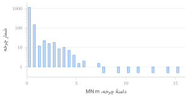
مثال 11.24 (ده دقیقه از ریشهٔ پره) پرسش. یک سیگنالِ ساختگیِ دهدقیقهای از گشتاورِ رو به بادِ ریشه در 9 m/s بسازید (میانگینِ 12.5 MN·m، تلاطمِ خودهمبسته، بارِ \(1P\) از برشِ باد؛ A-215)، با جریانِ بارانی بشمارید و بارِ همارزِ آسیب را برای \(m = 10\) (کامپوزیت) و \(m = 4\) (فولادِ جوشی) بیابید.
پاسخ.
synthetic 10-min blade-root flap moment at 9 m/s (seed 53, A-215):
mean 12.6 MN m, std 2.81; 1409 rainflow cycles, largest 15.3 MN m
damage-equivalent load, 600 cycles: m = 10 (composite) 7.94 MN m;
m = 4 (welded steel) 3.56 MN m
the high S-N exponent of composites lets the few large cycles
dominate; steel details feel the many small cycles too
a design sums such signals over all wind speeds and the lifeتفسیر. بیشترِ چرخهها کوچکاند (شکل 11.18، محورِ لگاریتمی) اما با \(m = 10\) چند چرخهٔ بزرگ بیشترِ آسیب را میسازند: بارِ همارز 7.9 MN·m است. با \(m = 4\) بارِ همارز کوچکتر است چون چرخههای کوچکِ فراوان هم سهم دارند. پیامد: کنترلگری که چند چرخهٔ بزرگ را کم کند (گامِ انفرادی، کاهشِ توان در تلاطمِ شدید) عمرِ پره را بیش از آنچه انتظار میرود افزایش میدهد. وارسی: با \(m = 10\)، چرخهای با نیمِ دامنهٔ مرجع \(1/1024\) آسیبِ آن را دارد (E14).
خطای رایج. «میانگینِ بار کم است، پس خستگی مسئله نیست.» خستگی را دامنه و تعداد تعیین میکنند. دیگری: جمع کردنِ آسیبِ دو مادهٔ متفاوت با یک \(m\)؛ هر جزئیات منحنیِ خودش را دارد.
- چرا سیگنالِ بار را با جریانِ بارانی میشماریم نه با شمردنِ قلهها؟
- با معادلهٔ 11.16 و \(m = 4\)، دو چرخه با دامنهٔ 2 و یک چرخه با دامنهٔ 4: بارِ همارز در سه چرخه چیست؟
- چرا \(m\)ِ بزرگ اثرِ چرخههای بزرگ را برجسته میکند؟
- یک راهِ کنترلی برای کم کردنِ آسیبِ خستگی بنویسید.
11.3.15 بسامدِ برج و نمودارِ کمپبل
ایده. روتورِ در حالِ چرخش دو تحریکِ اصلی دارد: \(1P\) (ناترازیِ جرمی و آیرودینامیکی، برشِ باد) و \(3P\) (گذرِ پرهها از جلوی برج). اگر بسامدِ طبیعیِ برج با یکی از اینها در بازهٔ کار برابر شود، تشدید رخ میدهد (فصلِ ۴، بخش 4.2.14). نمودارِ کمپبل بسامدهای تحریک را بر حسبِ سرعتِ روتور و بسامدهای طبیعی را کنارشان میکشد. برجِ نرم–سفت بسامدی میانِ بیشینهٔ \(1P\) و کمینهٔ \(3P\) دارد، با حاشیه از هر دو.
\[ f_1 \approx \frac{1}{2\pi}\sqrt{\frac{3EI/L^3}{M_\text{top} + 0.24\,m L}} \tag{11.17}\]
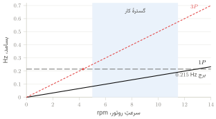
مثال 11.25 (برجِ نرم–سفت) پرسش. بسامدِ نخستِ برج را با لولهای همارز و جرمِ بالای 271 t بیابید (A-216) و با نوارهای \(1P\) و \(3P\) در گسترهٔ کار مقایسه کنید.
پاسخ.
tower first bending frequency and rotor excitation (A-216):
equivalent tube D 4.4 m, t 31 mm: I 1.015 m4, 3,364 kg/m; top 271 t
tower f1 = 0.215 Hz
1P band 0.083 .. 0.192 Hz; 3P band 0.250 .. 0.575 Hz
margins: f1 is 12 % above 1P max and 14 % below 3P min
(soft-stiff); 3P would meet f1 at 4.3 rpm, just below
the 5 rpm minimum: the controller keeps the rotor out of a
narrow speed band there (an exclusion zone)
a 4.0 m, 30 mm tube would give 0.186 Hz: inside the 1P bandتفسیر. برجِ 4.4 m با بسامدِ 0.215 Hz میانِ دو نوار است با حاشیهٔ 12 و 14 %. لولهٔ 4.0 m در نوارِ \(1P\) میافتاد و نزدیکِ 11 rpm تشدید میکرد: چند سانتیمتر قطر و چند میلیمتر ضخامت تفاوتِ برجِ سالم و برجِ لرزان است. \(3P\) در 4.3 rpm، زیرِ کمینهٔ سرعت، از بسامدِ برج میگذرد؛ روتور هنگامِ راهافتادن بهسرعت از آن رد میشود. محدودیت: فونداسیون و خاک برج را نرمتر میکنند و بسامد را پایین میآورند؛ طراحیِ واقعی سختیِ فونداسیون را میآورد (فصلِ ۳۰). وارسی: در 10 rpm، \(1P = 0.167\) و \(3P = 0.5\ \text{Hz}\) (E12).
- \(1P\) و \(3P\) را در 11.5 rpm حساب کنید.
- با معادلهٔ 11.17، اگر جرمِ بالا 10 % بیشتر شود بسامد چند درصد کم میشود (اثرِ جرمِ برج را نادیده بگیرید)؟
- چرا سختیِ فونداسیون بسامدِ برج را تغییر میدهد؟
- منطقهٔ استثنای سرعت چیست؟
11.3.16 روانکاری و خنککاری
ایده. حدودِ شش درصد توانِ آیرودینامیکی در پیشرانه، ژنراتور و مبدّل گرما میشود و باید از ناسلی بسته بیرون برود. جعبهدنده روغنی دارد که هم روانکار است و هم خنککن: پمپ آن را از فیلتر و مبدّلِ گرما به چرخدندهها و یاتاقانها میرساند. پاکیزگیِ روغن (ذره و آب) عمرِ یاتاقانها را تعیین میکند؛ نمونهبرداریِ دورهای و حسگرِ ذره پایشش میکنند. ژنراتور و مبدّل با هوا یا مایع خنک میشوند (فصلهای ۸ و ۹).
E24: losses at rated 5,319 - 5,000 = 319 kW; gearbox 2.5 % = 133 kW
oil flow for 15 K rise: 133 kW / (870 x 1900 x 15) = 322 L/minتفسیر. 319 kW گرما به اندازهٔ دهها بخاریِ خانگی در یک ناسل؛ جعبهدنده بهتنهایی حدودِ 133 kW (A-225، سهمِ آموزشی) و برای افزایشِ 15 K حدودِ سیصد لیتر روغن در دقیقه. در زمستان همین روغن پیش از شروع باید گرم شود تا گرانرویاش برای پمپ و چرخدنده مناسب باشد.
- چرا روغنِ جعبهدنده هم روانکار است هم خنککن؟
- با همان گرما و افزایشِ 10 K، دبیِ روغن چه میشود؟
- دو آلایندهٔ روغن که عمرِ یاتاقان را کم میکنند نام ببرید.
11.3.17 پایشِ وضعیت
ایده. سامانهٔ پایشِ وضعیت (به انگلیسی condition monitoring system) با شتابسنجهایی روی یاتاقانِ اصلی، جعبهدنده و ژنراتور، و حسگرهای ذرهٔ روغن و دما، خرابی را پیش از شکست میبیند: یاتاقانی که عیبِ کوچکی دارد ماهها پیش از خرابی یک «امضای» بسامدی میسازد (بخش 11.5.4). بهرهبردار با این شاهد تعمیر را برنامهریزی میکند (جرثقیل، قطعه، فصلِ کمباد) بهجای اینکه با شکستِ ناگهانی و خسارتِ زنجیرهای روبهرو شود.
سه سطحِ داده. (۱) دادههای کنترلگر (دما، توان، سرعت؛ هر چند ثانیه یا ده دقیقه) برای روند؛ (۲) ارتعاشِ پربسامد (هزاران نمونه در ثانیه، چند بار در روز) برای تشخیص؛ (۳) روغن و بازرسی (نمونه، آندوسکوپی). ارزیابیِ ارتعاشِ توربینها یک استانداردِ ویژه دارد (ISO 20816-21:2025، جایگزینِ ویرایشِ ۲۰۱۵ِ سریِ پیشین).
- سه سطحِ دادهٔ پایشِ وضعیت را نام ببرید.
- پایشِ وضعیت چه سودی در برنامهریزیِ تعمیر دارد؟
- چرا ارتعاشِ پربسامد پیوسته ذخیره نمیشود؟
11.3.18 جعبهدنده: مرحلهها، دندانهها و بسامدها
ایده. پیشرانهٔ پایهٔ نیروگاهِ P (D-011) سرعت را حدودِ صد برابر بالا میبرد (مثال 11.21). یک جفت چرخدندهٔ ساده نسبتی بیش از حدودِ پنج را خوب نمیسازد؛ پس جعبهدنده چند مرحله دارد. مرحلههای نخست سیارهایاند: یک خورشید در مرکز، چند سیاره دورِ آن، و یک حلقهٔ دندانهدارِ درونی. گشتاورِ بزرگِ ورودی میانِ چند سیاره تقسیم میشود و جعبه برای همان گشتاور کوچکتر و سبکتر میشود.
نسبتِ سیارهای. با حلقهٔ ثابت، حامل (بازوی سیارهها) به محورِ اصلی و خورشید به خروجی وصل است:
\[ i = 1 + \frac{z_\text{ring}}{z_\text{sun}}, \qquad z_\text{planet} = \frac{z_\text{ring} - z_\text{sun}}{2}, \qquad f_\text{mesh} = z_\text{ring}\,f_\text{carrier} , \tag{11.18}\]
که \(z\) شمارِ دندانههاست. بسامدِ درگیری (ضربهٔ دندانهها در هر بار درگیرشدن) در طیفِ ارتعاش دیده میشود و اساسِ پایشِ جعبهدنده است (بخش 11.3.17). سیارهها فقط وقتی با فاصلهٔ برابر جا میگیرند که \((z_\text{sun} + z_\text{ring})\) بر شمارِ سیارهها بخشپذیر باشد.
مثال 11.26 (جعبهدندهٔ سهمرحلهای) پرسش. برای جعبهدندهای با دو مرحلهٔ سیارهای و یک مرحلهٔ موازی (A-229، شمارِ دندانهها ساختگی)، نسبتِ هر مرحله، بسامدِ ورودی، بسامدِ درگیری و بسامدِ عبورِ سیاره را در 11.5 rpm بیابید.
پاسخ.
three-stage gearbox at rated speed 11.5 rpm (A-229):
stage teeth ratio input Hz mesh Hz
planetary 1 sun 21, ring 99 5.714 0.192 18.98
3 planets x 39 teeth, planet pass 0.575 Hz, spacing ok
planetary 2 sun 23, ring 97 5.217 1.095 106.24
3 planets x 37 teeth, planet pass 3.286 Hz, spacing ok
parallel wheel 101, pinion 30 3.367 5.714 577.14
pinion 30 teeth
total ratio 100.37: generator 1154 rpm (19.24 Hz)
equal planet spacing needs (sun + ring) / planets to be a
whole number; the first planet-pass frequency equals 3P
(0.575 Hz): condition monitoring must tell them apart
by order analysis (frequencies divided by shaft speed)تفسیر. نسبتِ کلِ 100.37 ژنراتور را به حدودِ 1154 rpm میرساند (D-011). بسامدهای درگیری از حدودِ 19 Hz در مرحلهٔ نخست تا حدودِ 577 Hz در مرحلهٔ پایانیاند: هر مرحله «امضای» خودش را در طیف دارد. بسامدِ عبورِ سیارههای مرحلهٔ نخست با \(3P\) برابر است؛ پس پایش باید با تحلیلِ مرتبه (بسامد تقسیم بر سرعتِ محور) و با دانستنِ هندسهٔ جعبه آنها را از هم جدا کند. وارسی: \(1 + 99/21 = 5.714\) و \(5.714 \times 5.217 \times 3.367 = 100.4\) (درست).
خطای رایج. «بیشترِ خرابیهای جعبهدنده از دندانههاست.» تجربهٔ صنعت نشان میدهد سهمِ بزرگی از خرابیها از یاتاقانهای مرحلههای میانی و سرعتبالا شروع میشود (ترکهای سفیدِ حکاکیپذیر، بخش 11.4.4) و ذرههای آن سپس دندانهها را میسایند. پایشِ ذره در روغن و ارتعاشِ یاتاقان هر دو لازماند.
- چرا مرحلههای نخستِ جعبهدندهٔ توربین سیارهایاند؟
- نسبتِ مرحلهای با خورشیدِ ۲۴ و حلقهٔ ۹۶ دندانه چیست؟ سه سیاره با فاصلهٔ برابر جا میگیرند؟
- بسامدِ درگیریِ مرحلهٔ دوم را در 10 rpm حساب کنید.
- چرا تحلیلِ مرتبه برای توربینِ سرعتمتغیر لازم است؟
11.3.19 یاتاقانِ اصلی و عمرِ اسمی
ایده. یاتاقانِ اصلی وزنِ روتور (شعاعی) و رانش (محوری) را از محور به شاسی میبرد (شکل 11.17). عمرِ اسمیِ یاتاقانِ غلتشی (فصلِ ۸، بخش 8.3.11) با بارِ همارز و بارِ دینامیکیِ مبنا تعیین میشود:
\[ L_{10} = \left(\frac{C}{P_\text{eq}}\right)^{p}\ \ [10^6\ \text{rev}], \qquad P_\text{eq,life} = \left(\frac{\sum_i P_{\text{eq},i}^{\,p}\, n_i}{\sum_i n_i}\right)^{1/p}, \tag{11.19}\]
با \(p = 10/3\) برای غلتکی و \(3\) برای ساچمهای؛ \(n_i\) دورهای هر حالتِ بار است. در توربین بار هر ساعت عوض میشود؛ پس بارِ همارزِ عمر با وزنِ دور میانگین گرفته میشود. ضریبهای ترکیبِ بارِ شعاعی و محوری و \(C\) از کاتالوگِ سازندهٔ یاتاقان میآیند.
مثال 11.27 (بارِ یک سال روی یاتاقانِ اصلی) پرسش. با رانشِ ساعتبهساعتِ سالِ بستهٔ داده در چگالیِ ساختگاه، بارِ همارزِ عمرِ یاتاقانِ اصلی را بیابید و ظرفیتِ لازم برای بیست سال و عمرِ یاتاقانی با \(C = 11\ \text{MN}\) را حساب کنید. داده: بستهٔ داده 1.1.0، S0؛ ضریبها و \(C\) ساختگیاند (A-230).
پاسخ.
main bearing: life-weighted load over the data-pack year (A-230):
radial: rotor weight 1,089 kN; axial: thrust, up to 877 kN
equivalent load P = Fr + 2 Fa, weighted by revolutions: 2,125 kN
revolutions: 3.77 million a year, 75 million in 20 years
rating needed for L10 = 20 years: C = P x L^0.3 = 7.77 MN
with a bearing of C = 11.0 MN: L10 = 240 million rev = 64 years
L10 is a statistical life (90 % survive) for clean, well
lubricated bearings; main-bearing failures in service often
start from lubrication, sealing or misalignment insteadتفسیر. با ضریبهای آموزشی، یاتاقانی با \(C = 11\ \text{MN}\) عمرِ اسمیِ حدودِ ۶۴ سال دارد. اما عمرِ اسمی آمار است و شرطِ «تمیز و خوب روانکاریشده» را دارد؛ خرابیهای واقعیِ یاتاقانِ اصلی بیشتر از روانکاریِ ناکافی در سرعتِ کم، آببندیِ آسیبدیده، ناهممحوری و لغزشِ غلتکها شروع میشوند. سوابقِ روانکاری، نمونهٔ گریس و ارتعاش (بخش 11.3.17) شاهدِ واقعیِ سلامتاند. وارسی: \(C/P_\text{eq} = 11/2.125 = 5.18\) و \(5.18^{10/3} = 240\) (درست).
- چرا بارِ همارز با وزنِ دور میانگین گرفته میشود نه وزنِ زمان؟
- اگر بارِ همارز 10 % بیشتر شود، عمرِ اسمیِ یاتاقانِ غلتکی چند درصد کم میشود؟
- دو علتِ رایجِ خرابیِ یاتاقانِ اصلی که در \(L_{10}\) نیستند نام ببرید.
- شمارِ دورهای سالانه را با سرعتِ میانگینِ 8.1 rpm در 7,735 ساعتِ کار وارسی کنید.
11.3.20 مصرفِ داخلیِ توربین
ایده. توربین خودش هم برق مصرف میکند: کنترلگر، روشنایی، منبعِ تغذیهٔ بیوقفه، گرمکنهای ناسل و جعبهدنده در هوای سرد، پمپها و فنهای خنککاری، سامانهٔ هیدرولیک، محرکهای چرخشِ ناسل و گام. وقتی توربین تولید میکند، این مصرف درونِ خودِ آن خالص میشود و فقط توانِ کمتری به شبکهٔ جمعآوری میرسد؛ وقتی ایستاده است، مصرف از شبکه وارد میشود. این همان مرزِ «ناخالص» و «تحویلی» است که آزمونِ تسلطِ بخشِ دوم میخواهد.
مثال 11.28 (یک سال مصرفِ داخلی) پرسش. با بارهای آموزشیِ A-231 (کنترلگر و تغذیه 3 kW همیشه، گرمکن 25 kW در ساعتهای ایستادهٔ زیرِ صفر، خنککاری و هیدرولیک 0.8 %ِ توان در تولید، چرخش 15 kW در 2 % ساعتها) مصرفِ سالانهٔ یک توربین و سهمِ وارداتی را حساب کنید.
پاسخ.
own consumption of one turbine over the data-pack year (A-231):
hours producing 7,735, standing 1,025 (cold standby 33)
controller, lights, UPS 26.3 MWh
heating in cold standby 0.8 MWh
cooling and hydraulics 138.4 MWh
yaw drives 2.6 MWh
total 168.2 MWh = 0.97 % of 17,306 MWh
drawn while standing (imported): 4.2 MWh; the rest is netted
inside the turbine while it produces. Metering decides how
each part is counted between gross and delivered energy
(chapters 21 and 23)تفسیر. مصرفِ داخلی حدودِ یک درصدِ تولید است و بیشترش در ساعتهای تولید (خنککاری) خالص میشود. سهمِ وارداتی کوچک است، اما قراردادِ اتصال و اندازهگیری تعیین میکند که آیا واردات در ساعتهای بیتولید با تعرفهٔ مصرفکننده حساب میشود (فصلهای ۲۱ و ۲۳). در ساختگاهِ سردتر یا با تجهیزِ ضدیخ، سهمِ گرمایش بسیار بیشتر میشود. وارسی: \(3 \times 8760 = 26.3\ \text{MWh}\) (درست).
- چرا مصرفِ داخلی در ساعتهای تولید «خالص» میشود؟
- کدام بخشِ مصرف در ساختگاهِ سرد بزرگ میشود؟
- مصرفِ داخلی و تلفاتِ برقی چه فرقی در ترازنامهٔ انرژی دارند؟
- سهمِ مصرف از تولید را برای دوازده توربین وارسی کنید.
11.3.21 پره بهصورتِ تیر: گشتاورِ خمشی، کلاهک و فاصلهٔ نوک تا برج
ایده. رانشِ هر حلقه (از المانِ پره–تکانه، بخش 11.2.5) یک نیروی گسترده روی پره است. گشتاورِ خمشیِ عمود بر صفحهٔ روتور در هر مقطع، جمعِ نیرو ضربِ بازوی همهٔ حلقههای بیرونیتر است:
\[ M(r_j) = \sum_{r_i > r_j} F_i\,(r_i - r_j) . \tag{11.20}\]
این گشتاور را دو کلاهکِ تیرِ اصلی (نوارهای پهنِ الیافِ یکجهته روی پشت و شکمِ پره، بخش 11.3.2) میبرند. با کلاهکِ نازک به پهنای \(b\) و ضخامتِ \(t_\text{c}\) و فاصلهٔ \(h\) میانِ دو کلاهک (تقریباً ضخامتِ نیمرخ)، لنگرِ دوم و کرنش چنیناند:
\[ I \approx \frac{b\,t_\text{c}\,h^2}{2}, \qquad \varepsilon = \frac{M\,h/2}{E I} = \frac{M}{E\,b\,t_\text{c}\,h} \quad\Rightarrow\quad t_\text{c} = \frac{M}{E\,\varepsilon_\text{allow}\,b\,h} . \tag{11.21}\]
خیزِ پره از دو بار انتگرالگیریِ انحنا \(\kappa = M/(EI)\) از ریشه تا نوک به دست میآید (فصلِ ۴). نتیجهٔ مهمِ معادلهٔ 11.21: اگر کلاهک برای کرنش اندازه شود، \(EI = M h/(2\varepsilon)\) است و به جنسِ الیاف بستگی ندارد.
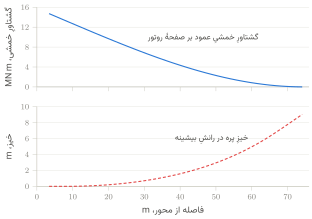
مثال 11.29 (کلاهک برای استحکام یا برای سختی؟) پرسش. در نقطهٔ رانشِ بیشینه (10 m/s، 1.225 kg/m³) گشتاورِ خمشی را در طولِ پره بیابید. کلاهکها را برای بارِ حدیِ آموزشی (دو برابرِ بارِ کار) با کرنشِ مجازِ 0.5 % اندازه کنید، خیزِ نوک را حساب کنید و با فاصلهٔ نوک تا برج مقایسه کنید. داده: ساختگی (A-232)؛ ضریبِ بارِ حدی و کرنشِ مجاز مقدارهای آموزشیاند، نه مقدارِ استاندارد.
پاسخ.
blade as a beam at the peak-thrust point (10 m/s, 1.225 kg/m3, A-232):
thrust 923 kN, one blade 308 kN; flap moment at the root 15.0 MN m
(first-order estimate T/3 x 2R/3 = 15.4 MN m)
extreme = 2 x operating (teaching); caps E 45 GPa, strain 0.5 %, width 0.9 m
at r = 30.6 m: chord 4.80 m, height 1.39 m, moment 13.4 MN m -> cap 47 mm
cap thickness 65 mm at 10 m falling to 5 mm at the tip; two caps 7.9 t
(36 % of the 22 t blade)
tip deflection: 9.0 m at peak thrust, 18.1 m at the extreme load
unloaded tip-tower clearance 17.3 m (overhang 6 m, tilt 5 deg, cone 3 deg,
prebend 3 m, tower radius 2.2 m); left at the extreme -0.8 m
sized for strength, the blade would touch the tower:
stiffness, not stress, decides the caps of a long blade
keep 30 % of the clearance (teaching): deflection at most 12.1 m,
so the caps need 1.49 times the bending stiffness
glass caps (45 GPa, 1950 kg/m3): 11.8 t
carbon caps (135 GPa, 1600 kg/m3): 3.2 t
a cap sized for strain has EI = M h / (2 strain) whatever
its fibre: only a stiffness-driven design gains from carbonتفسیر. برآوردِ مرتبهٔ اولِ مثال 11.22 (15.4 MN·m) با توزیعِ واقعیِ بار (15.0) همخوان است. اما کلاهکی که فقط برای استحکام اندازه شود، پرهای میسازد که در بارِ حدی به برج میخورد: خیزِ نوک از فاصلهٔ آزاد بیشتر است. در پرههای بلند سختی (و فاصلهٔ نوک تا برج) ضخامتِ کلاهک را تعیین میکند. اینجاست که الیافِ کربن ارزش پیدا میکند: برای سختیِ لازم، کلاهکِ کربنی حدودِ یکچهارمِ کلاهکِ شیشهای جرم دارد. پیشخم، مخروطی و شیبِ محور ابزارهای هندسیِ دیگرند. وارسی: \(t_\text{c} = 13.4 \times 10^6 / (225 \times 10^6 \times 0.9 \times 1.39) = 0.048\ \text{m}\) (درست، با گردکردن).
مرزِ مدل. این تیرِ ساده پیچش، کمانشِ پوسته، جانِ برشی، بارهای لبهای (گرانش، مثال 11.22)، خستگی و رفتارِ دینامیکی را ندارد. طراحیِ واقعیِ پره با مدلِ اجزای محدود، آزمونِ مواد، بارهای گواهیشده و آزمونِ تماممقیاسِ ایستا و خستگیِ پره (بخش 11.4.14) انجام میشود.
- با معادلهٔ 11.20، گشتاورِ ریشه را برای نیروی یکنواختِ 4 kN/m روی پرهٔ 72.5 m حساب کنید.
- چرا کلاهکِ اندازهشده برای کرنش، \(EI\)ِ مستقل از جنسِ الیاف دارد؟
- سه راهِ هندسی برای زیادکردنِ فاصلهٔ نوک تا برج نام ببرید.
- چرا کربن در پرههای کوتاه کمتر به کار میرود؟
- خیزِ نوک در بارِ حدی چند برابرِ خیز در بارِ کار است (در این مدلِ خطی)؟
11.3.22 پای برج: تنش، فلنج و پیچها
ایده. رانشِ روتور در ارتفاعِ 100 m بزرگترین گشتاورِ واژگونی را به پای برج میآورد (مثال 11.22). برج یک لولهٔ جدارنازک است و تنشِ خمشیِ بیشینهٔ آن در دورترین تار از محورِ خنثی رخ میدهد:
\[ \sigma_\text{b} = \frac{M}{W} \approx \frac{M}{\pi r^2 t}, \qquad \sigma_\text{a} = \frac{F_\text{w}}{\pi D t} , \tag{11.22}\]
که \(W\) مدولِ مقطع، \(r\) شعاع، \(t\) ضخامت و \(F_\text{w}\) وزنِ بالای مقطع است. در پای برج، قطعهها با فلنجِ حلقوی و دهها پیچ به قفسهٔ پیچِ فونداسیون بسته میشوند. گشتاور در فلنج به نیروی کششی در پیچهای سمتِ رو به باد تبدیل میشود؛ برای حلقهای با \(n\) پیچ روی دایرهای به قطرِ \(D_\text{b}\):
\[ F_\text{bolt} \approx \frac{4M}{n\,D_\text{b}} - \frac{F_\text{w}}{n} . \tag{11.23}\]
پیشبار و خستگی. پیچ پیش از بارگذاری با نیروی بزرگی کشیده میشود (پیشبار). تا وقتی اتصال بسته بماند، بیشترِ تغییرِ بار به فشردگیِ فلنجها میرود و پیچ فقط بخشِ کوچکی از آن را میبیند (ضریبِ بارِ اتصال \(\Phi\)). اگر فلنجها تخت نباشند، اتصال در یک سو باز میشود و پیچ همهٔ تغییرِ بار را، همراه با خمش، میگیرد. چون آسیبِ خستگی با توانِ \(m\)ِ دامنه بالا میرود (بخش 11.3.14)، این تفاوت عمر را چند صد برابر کم میکند. این همان دلیلِ تأکید بر تختیِ فلنج در طرحِ کیفیت است (جدول 11.8).
مثال 11.30 (تنشِ پای برج) پرسش. با قطرِ 4.5 m و ضخامتِ 46 mm در پای برج (A-218، A-235)، تنشِ خمشی در رانشِ بیشینه، تنشِ محوری از وزن و تنش در بارِ حدیِ آموزشی (دو برابرِ بارِ کار) را حساب و با تسلیمِ فولادِ S355 مقایسه کنید.
پاسخ.
tower base, D 4.5 m, wall 46 mm (A-235):
peak operating thrust 923 kN x hub 100 m = 92.3 MN m
bending stress M / (pi r^2 t) = 126 MPa; weight 5.99 MN gives 9.2 MPa
teaching extreme (2 x operating): 261 MPa, against 355 MPa yield
of S355 steel: utilisation 0.74 before partial factors
a thin shell this size fails by local buckling before yield;
the buckling check, the fatigue of welds and flanges and the
door opening are the real sizing checks (chapter 30)تفسیر. تنشِ محوری از وزن کمتر از یکدهمِ تنشِ خمشی است: برجِ توربین یک تیرِ خمشی است نه یک ستون. نسبتِ بهرهوریِ 0.74 پیش از ضریبهای جزئی نشان میدهد ضخامت در محدودهٔ درستی است، اما معیارِ واقعیِ اندازهگذاری کمانشِ موضعیِ پوسته، خستگیِ جوشها و فلنجها و تقویتِ اطرافِ در است (فصلِ ۳۰ و IEC 61400-6:2020). وارسی: \(92.3 \times 10^6 / (\pi \times 2.25^2 \times 0.046) = 126\ \text{MPa}\) (درست).
مثال 11.31 (پیچی که اتصالِ بسته را میبیند) پرسش. برای فلنجِ پایه با ۱۲۰ پیچ روی دایرهٔ 4.3 m، پیشبارِ 1.6 MN و ضریبِ بارِ اتصالِ 0.12 (A-236، مقدارهای آموزشی)، کششِ بیرونی روی بدترین پیچ و تغییرِ نیروی پیچ را بیابید و اثرِ بازشدنِ اتصال را بر آسیبِ خستگی برآورد کنید.
پاسخ.
bolted base flange (A-236, teaching values):
120 bolts on a 4.3 m circle, preload 1.6 MN each
external pull on the worst bolt: 665 kN at peak thrust,
1,380 kN at the extreme; the joint stays closed below 1,818 kN
joint closed: bolt force 1.60 -> 1.680 MN; the bolt sees 80 kN of change
a turn of the rotor or a gust repeats that change: with a
closed joint the bolt's fatigue range is 12 % of the load range
if the flanges are not flat, the joint opens on one side: the
bolt then takes the whole load change plus bending, and its
fatigue life drops by orders of magnitude (S-N slope)
with m = 3: range x 8.3 -> damage x 579
flatness tolerances after welding, preload by a controlled
method and re-checks after the first months are the evidenceتفسیر. با اتصالِ بسته، پیچ از 665 kN تغییرِ بارِ بیرونی فقط حدودِ 80 kN میبیند. اگر اتصال باز شود، دامنهٔ نیروی پیچ حدودِ هشت برابر و آسیب (با شیبِ 3) حدودِ ۵۸۰ برابر میشود. پس ناتختیِ فلنج پس از جوش یا پیشبارِ ناکافی یک عیبِ کوچکِ ساختی نیست، بلکه عمرِ اتصال را از چند دهه به چند ماه یا چند سال میرساند. شاهدِ پذیرش: اندازهگیریِ تختی و شیبِ فلنج پس از جوش، کششدهیِ کنترلشده با سوابقِ هر پیچ، و بازبینیِ پیشبار پس از ماههای نخست (بخش 11.4.13). وارسی: \(4 \times 92.3/(120 \times 4.30) - 5.99/120 = 0.715 - 0.050 = 0.665\ \text{MN}\) (درست).
مرزِ مدل. معادلهٔ 11.23 حلقه را صلب فرض میکند؛ رفتارِ واقعیِ فلنج (اهرمِ لبه، خمشِ پیچ، اثرِ شکاف) با مدلهای ویژهٔ فلنج و اجزای محدود و آزمون بررسی میشود. مقدارِ پیشبار و روشِ کششدهی را سازنده و طراحِ برج تعیین میکنند.
کششدهی و بازبینیِ پیچهای برج و فونداسیون فقط با ابزارِ واسنجیشده، دستورالعملِ سازنده، کارکنانِ آموزشدیده و مجوزِ کار انجام میشود. این بخش رویهٔ کششدهی نیست؛ فقط نشان میدهد چرا سوابقِ آن شاهدِ کیفیت است.
- چرا برجِ توربین بیشتر «تیر» است تا «ستون»؟
- با معادلهٔ 11.22، اگر ضخامت 10 % کم شود، تنشِ خمشی چه میشود؟
- پیشبار چگونه پیچ را از خستگی حفظ میکند؟
- چرا ناتختیِ فلنج عمرِ پیچ را چند صد برابر کم میکند؟
- سه شاهدِ کیفیت برای اتصالِ فلنجی نام ببرید.
11.3.23 سامانهٔ چرخشِ ناسل در عدد
ایده. سامانهٔ چرخش (بخش 11.3.6) ناسل را با موتورهای چرخدندهای روی یاتاقانِ بزرگِ چرخش میگرداند و با ترمزها نگه میدارد. کنترلگر جهتِ باد را با میانگینِ کوتاهمدت میسنجد و فقط وقتی خطا از یک نوارِ مرده بیشتر شود ناسل را میچرخاند؛ این کار از حرکتهای بیفایده و فرسایش جلوگیری میکند. کابلهای برق و سیگنال از ناسل به پایین در برج آویزاناند و با هر چرخش تاب میخورند؛ وقتی تاب از حدی بگذرد، کنترلگر ناسل را در زمانِ بادِ کم بازمیپیچاند.
مثال 11.32 (یک سال کارِ سامانهٔ چرخش) پرسش. از جهتهای ساعتیِ بستهٔ داده، شمارِ ساعتهایی که با بادِ بالای شروع و تغییرِ جهتِ بیش از 8° چرخش لازم است، مجموعِ چرخش، زمانِ کارِ موتور با 0.5°/s و شمارِ بازپیچاندن با حدِ دو و نیم دور را بیابید (A-237). داده: بستهٔ داده 1.1.0، S0.
پاسخ.
yaw demand from the data-pack hourly directions (A-237):
hours with wind above cut-in and a change over 8 deg: 1,048
yaw travel at least 16,546 deg a year = 46 full turns
at 0.5 deg/s: 9.2 h of yaw motor time (lower bound)
net cable twist reaches 2.5 turns: 1 unwind(s) a year
real yaw systems act on ten-minute or shorter averages and
move many times more often; brakes, motors and the yaw
bearing's gear are sized for that dutyتفسیر. حتی با دادهٔ ساعتی، ناسل در سال دستکم ۴۶ دورِ کامل میچرخد. دادهٔ دهدقیقهای یا کوتاهتر تغییرهای بسیار بیشتری نشان میدهد؛ پس این عدد کرانِ پایین است و طراحیِ ترمز، موتور و چرخدندهٔ یاتاقان برای کارِ واقعیِ بسیار بیشتر است. وارسی: \(16\,546/0.5/3600 = 9.2\ \text{h}\) (درست).
- نوارِ مرده در کنترلِ چرخش چه سودی دارد و چه هزینهای؟
- چرا دادهٔ ساعتی فقط کرانِ پایینِ کارِ چرخش را میدهد؟
- بازپیچاندنِ کابل چرا در بادِ کم انجام میشود؟
- اگر نوارِ مرده از 8° به 15° برسد، با مثال 11.8 اثرش را بر انرژی برآورد کنید.
11.4 پ. ساختِ محصول و قابلیتِ اطمینان
بخشِ پ توربین را از کارخانه تا ساختگاه دنبال میکند: ساختِ پره و موادِ کامپوزیت، قطعههای ریخته و آهنگری، چرخدنده و یاتاقان، برج و ناسل؛ سپس توازن، صاعقه، خوردگی، یخزدگی، آزمونهای غیرمخرب، سوابق، گواهی، حمل، نصب، حدِ تعمیرِ میدانی و طرحِ کیفیتِ یک قطعهٔ برج. همه در سطحِ جریانِ فرایند؛ کارخانه در سطحِ چیدمانِ خط و برنامهٔ کنترل در فصلهای ۴۲ (پره و پیشرانه) و ۴۷ (برج) میآید.
11.4.1 پره از قالب تا کامیون
ایده. پره در دو نیمهقالبِ بزرگ (به طولِ خودِ پره) ساخته میشود (شکل 11.21): لایههای پارچهٔ الیافِ شیشه، کلاهکِ تیرِ اصلی (اغلب پیشساخته از تختههای الیافِ کربن یا شیشه) و هسته (چوبِ بالسا یا فوم) خشک در قالب چیده میشوند؛ رزین زیرِ خلأ تزریق میشود و با گرمای قالب پخت میشود. سپس جانهای برشی با چسب در یک نیمه نشانده و دو نیمه روی هم بسته و چسبانده میشوند. پس از پسپخت و درآوردن از قالب، لبهها تراش میخورند، ریشه ماشینکاری و بوشهای پیچ نشانده میشوند، رنگ و محافظِ لبهٔ حمله زده میشود، و پره وزن و مرکزِ جرمش اندازهگیری میشود.
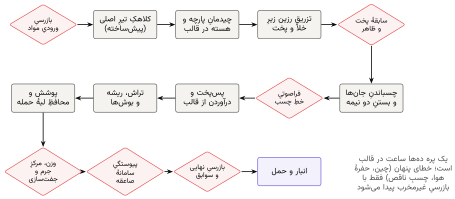
چرا دروازهها اینجا هستند. خطای پنهانِ کامپوزیت (چینِ الیاف، حفرهٔ هوا، ناحیهٔ خشکِ بیرزین، چسبِ ناقص) پس از بستنِ پره دیده نمیشود و فقط آزمونِ غیرمخرب (فراصوتی) یا شکستِ میدانی آن را نشان میدهد. پس سابقهٔ تزریق و پخت (دما، زمان، خلأ) برای هر پره نگهداشته میشود و خطِ چسب و کلاهکها با فراصوت بازرسی میشوند. استانداردِ پره (IEC 61400-5:2020) الزامهای طراحی، مواد، آزمون (ایستا و خستگیِ تماممقیاس) و ساخت با مدیریتِ کیفیت را میدهد.
- شش گامِ اصلیِ ساختِ پره را به ترتیب بنویسید.
- چرا سابقهٔ پختِ هر پره نگهداشته میشود؟
- کدام خطاها فقط با آزمونِ غیرمخرب پیدا میشوند؟
11.4.2 مواد کامپوزیت و عیبهایشان
ایده. پره از کامپوزیت ساخته میشود: الیافِ سفت و مقاوم (شیشه یا کربن) در ماتریسِ پلیمری (اپوکسی یا وینیلاستر). الیاف بار را در جهتِ خود میبرند؛ پس چیدمانِ لایهها (زاویهٔ هر لایه) خاصیتِ پره را میسازد: الیافِ تکجهتی در کلاهکِ تیرِ اصلی برای خمش، الیافِ ±۴۵ درجه در پوسته و جانها برای برش و پیچش. کربن چند برابر سفتتر از شیشه است و برای پرههای بلند (که خیزِ نوکشان نباید به برج برسد) در کلاهکها به کار میرود؛ گرانتر و به خطای چینِ الیاف حساستر است.
| عیب | ریشه | پیامد | شاهد |
|---|---|---|---|
| چینِ الیاف | چیدمانِ ناهموار، جابهجایی در تزریق | کاهشِ شدیدِ مقاومتِ فشاری و خستگی | فراصوت، دیداری پیش از تزریق |
| ناحیهٔ خشک یا حفره | جریانِ ناقصِ رزین، نشتیِ خلأ | تمرکزِ تنش، جذبِ آب | سابقهٔ تزریق، فراصوت |
| چسبِ ناقص | مقدار یا پختِ نادرستِ چسب | جداشدنِ جان یا لبه | فراصوتِ خطِ چسب |
| پختِ ناقص | دما یا زمانِ کم | مقاومت و دمای انتقالِ شیشهایِ کم | سابقهٔ دما، آزمونِ نمونه |
| سایشِ لبهٔ حمله | باران، گرد و غبار (در میدان) | افتِ توان، نفوذِ آب | بازرسیِ دورهای |
خطای رایج. «پره سبک است پس ساده است.» پرهٔ هفتاد متری بلندترین قطعهٔ یکتکهٔ صنعتی در بسیاری از کشورهاست، با هزاران متر خطِ چسب و دهها لایه؛ هر خطای کوچکِ ساخت در صد میلیون چرخهٔ بار (مثال 11.22) بزرگ میشود.
- چرا در کلاهکِ تیرِ اصلی الیافِ تکجهتی و در پوسته الیافِ ±۴۵ درجه به کار میرود؟
- یک سود و یک ریسکِ الیافِ کربن را بنویسید.
- چینِ الیاف چه اثری بر مقاومت دارد و چگونه پیدا میشود؟
11.4.3 قطعههای ریخته و آهنگری
ایده. توپی و شاسیِ جلو با ریختهگریِ چدنِ نشکن (با گرافیتِ کروی، چکشخوار) ساخته میشوند: شکلهای پیچیده و سنگین (دهها تن) که فقط ریختهگری اقتصادی میسازد. محورِ اصلی از فولادِ آهنگریشده است (دانهبندیِ ریز و پیوسته در جهتِ بار) و پس از عملیاتِ حرارتی ماشینکاری میشود. عیبهای رایجِ ریختهگری حفرههای انقباضی و ناخالصیاند که با فراصوت در نواحیِ پرتنش بازرسی میشوند؛ محلهای بحرانی در نقشه علامت میخورند تا بازرسی آنجا متمرکز شود.
- چرا توپی ریختهگری و محورِ اصلی آهنگری است؟
- دو عیبِ رایجِ ریختهگری و ابزارِ کشفشان را بنویسید.
11.4.4 چرخدندهها
ایده. جعبهدندهٔ توربین معمولاً یک یا دو مرحلهٔ سیارهای (چند چرخدندهٔ سیارهای میانِ چرخدندهٔ خورشیدی و حلقه، که گشتاورِ بزرگ را تقسیم میکنند) و یک مرحلهٔ موازی دارد. جریانِ ساختِ چرخدنده: شمشِ آهنگریشده → تراشِ دندانه → سختکاریِ سطحی (کربندهی و سپس سردکردنِ سریع) برای سطحِ سخت و مغزِ چقرمه → سنگزنیِ دندانه برای دقتِ شکل → بازرسیِ شکل و جهتِ دندانه و سختی. پس از مونتاژ، جعبهدنده روی میزِ آزمونِ پشتبهپشت زیرِ بار آزموده میشود (IEC 61400-4:2025 الزامهای طراحی و آزمونِ جعبهدندههای بزرگتر از 500 kW را میدهد).
خرابیهای رایج. ریزحفرهای شدن و حفرهای شدنِ سطحِ دندانه، شکستِ ریشهٔ دندانه، و بیش از همه خرابیِ یاتاقانها در مرحلههای سرعتبالا (بخش 11.4.5). روغنِ پاکیزه، دمای کنترلشده و پایشِ ذره و لرزش بهترین پیشگیریاند.
- چرا مرحلهٔ سیارهای برای گشتاورِ بزرگ مناسب است؟
- چرا دندانه پس از سختکاری سنگزنی میشود؟
- آزمونِ پشتبهپشت چیست؟
11.4.5 یاتاقانها
ایده. توربین یاتاقانهای بسیار بزرگ (یاو و گام، چند متری) و یاتاقانهای پرسرعت (جعبهدنده و ژنراتور) دارد. جریانِ ساخت: حلقههای آهنگریشده → تراش → عملیاتِ حرارتی → سنگزنیِ مسیر → المانهای غلتان با دقتِ بالا → مونتاژ در محیطِ پاکیزه. عمرِ نامیِ یاتاقان (فصلِ ۸، بخش 8.3.11) بر پایهٔ خستگیِ سطحی است، اما بسیاری از یاتاقانهای جعبهدندهٔ توربین زودتر از آن با ترکهای سفیدِ حکاکیپذیر (به انگلیسی white etching cracks) از کار افتادهاند: سازوکاری که هنوز موضوعِ پژوهش است و به گذارهای بار، روانکار و جریانهای الکتریکی نسبت داده میشود. جریانِ الکتریکی از یاتاقان (از مبدّل) با یاتاقانِ عایق و جاروبکِ زمین کنترل میشود (فصلهای ۸ و ۹).
- چرا عمرِ واقعیِ یاتاقانهای جعبهدنده گاهی از عمرِ نامی کمتر بوده است؟
- جریانِ الکتریکی از یاتاقان چگونه کنترل میشود؟
11.4.6 برج: ورق تا قطعه
ایده. برجِ فولادی از ورقهای ضخیم ساخته میشود (شکل 11.22): برش و پخزنی → نوردِ هر ورق به استوانه (قوطی) → جوشِ طولی → جوشِ محیطیِ قوطیها به هم → جوشِ فلنجها در دو سر → آزمونِ غیرمخربِ جوشها → وارسیِ تختیِ فلنج → زنگزدایی و رنگ → نصبِ تجهیزاتِ درونی (سکو، نردبان، کابلکش) → بازرسیِ نهایی و سوابق.
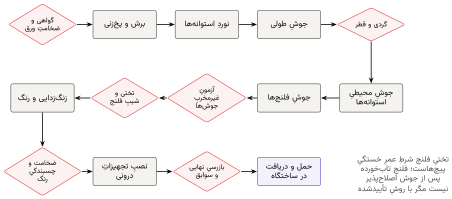
مثال 11.33 (چهار قطعهٔ برج) پرسش. برجِ 100 m در چهار قطعهٔ 25 m با قطرِ 4.5 تا 3.0 m، ضخامتِ 50 تا 22 mm و قوطیهای 2.5 m (A-218): جرمِ هر قطعه، طولِ جوشها، سطحِ رنگ و حجمِ رنگ را بیابید.
پاسخ.
tower in four 25 m sections, cans 2.5 m (A-218):
section D base..top m t mm mass t circ. welds long. weld m
1 4.50..4.12 46 124 149 m 25
2 4.12..3.75 40 96 136 m 25
3 3.75..3.38 32 71 123 m 25
4 3.38..3.00 26 50 110 m 25
total 341 t steel; welds 518 m circumferential, 100 m longitudinal
coated area inside and outside 2,356 m2; paint for 320 um dry film at
70 % solids and 60 % transfer efficiency: 1,795 L per tower
base diameter 4.5 m is near the limit of road transport
under bridges; larger towers use split or concrete sectionsتفسیر. 341 t فولاد (همخوان با 340 tِ مثال 11.20 و لولهٔ همارزِ مثال 11.25)، بیش از نیم کیلومتر جوشِ محیطی و حدودِ 1800 L رنگ برای هر برج. قطعهٔ پایینی 124 t و 4.5 m قطر دارد: نزدیکِ حدِ حملِ جادهای. هر متر جوش یک سابقهٔ بازرسی است؛ هر فلنج یک وارسیِ تختی. وارسی: \(\pi \times 4.31 \times 0.046 \times 25 \times 7850 = 122\ \text{t}\)، نزدیکِ 124 t با گردکردنِ ضخامت (درست).
- ده گامِ ساختِ قطعهٔ برج را به ترتیب بنویسید.
- چرا تختیِ فلنج پس از جوش وارسی میشود؟
- حجمِ رنگِ دوازده برج چند لیتر است؟
11.4.7 ناسل: یکپارچهسازی و آزمونِ کارخانه
ایده. ناسل در کارخانه مونتاژ و یکپارچه میشود: شاسی، یاتاقانِ اصلی و محور، جعبهدنده، ژنراتور، ترمز، سامانهٔ یاو، تابلوها، کابلکشی، خنککاری و پوسته. سپس آزمونِ پایانِ خط (به انگلیسی end-of-line test): پیوستگی و عایقِ کابلها، کارکردِ حسگرها و محرکها، چرخاندنِ پیشرانه (گاهی با موتورِ آزمون)، نشتیِ روغن، و آزمونِ نرمافزار و سامانهٔ ایمنی. قطعههای اصلی (جعبهدنده، ژنراتور، مبدّل) پیش از آن آزمونِ بارِ جداگانه دارند؛ آزمونِ یکپارچه زیرِ بارِ کامل فقط در میزهای آزمونِ ویژهٔ ناسل یا در خودِ ساختگاه ممکن است.
پیامد برای پذیرش. همان درسِ اینورترِ فصلِ ۹: آنچه در کارخانه زیرِ بار آزموده نشده، در ساختگاه هم ممکن است تا ماهها (باد کافی) آزموده نشود؛ پس برنامهٔ آزمون باید بگوید کدام کارکرد کجا و با چه شاهدی تأیید میشود (فصلهای ۴۹ و ۵۰).
- پنج آزمونِ پایانِ خطِ ناسل را نام ببرید.
- چرا آزمونِ یکپارچه زیرِ بارِ کامل در کارخانه کمیاب است؟
11.4.8 توازنِ روتور
ایده. روتورِ نامتوازن یک نیرو و گشتاورِ چرخانِ \(1P\) میسازد که برج، یاتاقانها و شاسی را میلرزاند. دو منبع دارد: جرمی (پرهها جرم و مرکزِ جرمِ کمی متفاوت دارند) و آیرودینامیکی (زاویهٔ گام یا پیچشِ یک پره کمی متفاوت است). اولی در کارخانه با وزنکردن و جفتسازیِ پرهها در دستههای سهتایی (و گاهی وزنهٔ توازن) کنترل میشود؛ دومی در ساختگاه با تنظیم و سنجشِ زاویهٔ گامِ هر پره.
مثال 11.34 (ناترازیِ جرمی در برابرِ آیرودینامیکی) پرسش. سه پره با جرمهای 22.00، 22.10 و 21.95 t در 22 m، و یک پره با 0.5° خطای گام در 9 m/s (A-217): نیروی \(1P\)ِ جرمی و تغییرِ رانشِ پرهٔ ناهمگام را بیابید.
پاسخ.
rotor imbalance from blade mass and pitch errors (A-217):
blade first mass moments 484.0, 486.2, 482.9 t m (masses 22.00,
22.10, 21.95 t at 22 m)
residual unbalance |sum S e^(j theta)| = 2,910 kg m
1P force at 11.5 rpm U w^2 = 4.2 kN
one blade pitched 0.5 deg off at 9 m/s: its thrust changes by 8.4 kN,
a 1P moment of about 419 kN m on the hub
the aerodynamic error can outweigh the mass error: blades are
weighed and matched in sets in the factory, and pitch angles
are set and checked on site (photogrammetry, laser tools)تفسیر. نیم درجه خطای گام نیروی \(1P\)ِ بیشتری از اختلافِ جرمیِ صد کیلوگرمی میسازد (حدودِ 8 در برابرِ 4 kN) و گشتاورِ چند صد کیلونیوتنمتر روی توپی. پس سنجشِ گامِ هر پره پس از نصب (با عکسبرداری یا لیزر) و تحلیلِ لرزشِ \(1P\) (بخش 11.3.17) بخشی از راهاندازی است. لرزشِ \(1P\)ِ ناسل در پایش، نخستین نشانهٔ ناترازی است (ISO 20816-21:2025). وارسی: \(2910 \times 1.204^2 = 4.2\ \text{kN}\) (درست).
- دو منبعِ ناترازیِ روتور و جای کنترلِ هر کدام را بنویسید.
- چرا پرهها در دستههای سهتایی جفت میشوند؟
- نخستین نشانهٔ ناترازی در دادههای پایش چیست؟
11.4.9 صاعقه
ایده. توربینِ 175 mی (تا نوکِ پره) بلندترین سازهٔ منطقه است و صاعقه را به خود میکشد؛ سازههای بلندِ چرخان صاعقههای رو به بالا هم آغاز میکنند. سامانهٔ حفاظت در برابرِ صاعقه شامل گیرندههای فلزی روی پره، رسانای پایینرو درونِ پره تا ریشه، مسیرِ عبور از یاتاقانها (با جاروبکها و جرقهگیرها تا جریان از غلتکهای یاتاقان نگذرد)، برج و زمین است، بهعلاوهٔ برقگیرهای ضربه و ناحیهبندیِ حفاظتیِ تجهیزاتِ برقی (IEC 61400-24:2019).
مثال 11.35 (چند صاعقه در سال؟) پرسش. با چگالیِ صاعقهٔ زمینِ دو بار بر کیلومترمربع در سال (A-219) و برآوردِ سادهٔ سطحِ جمعآوریِ \(9\pi H^2\)، تعدادِ صاعقه به یک توربین و دوازده توربین در سال چیست؟
پاسخ.
lightning exposure of one turbine (A-219, rough estimate):
ground flash density 2.0 per km2 a year; tip height 175 m
equivalent collection area 9 pi H^2 = 0.87 km2
expected flashes 1.7 a year per turbine, 21 for twelve
tall rotating structures also launch upward flashes that this
simple estimate omits; the risk method and protection levels
of the turbine standard (IEC 61400-24:2019) govern the designتفسیر. حدودِ دو صاعقه در سال برای هر توربین و بیست برای نیروگاه: صاعقه یک رویدادِ عادیِ کار است، نه حادثه. پس سامانهٔ حفاظت باید پس از هر رویداد کار کند و بازرسیِ دورهای (پیوستگیِ رسانا، فرسایشِ گیرنده) و ثبتِ رویدادها (شمارندههای صاعقه) بخشی از نگهداری است. محدودیت: چگالیِ صاعقهٔ ساختگاه از دادهٔ بلندمدت میآید (فصلِ ۲۶) و روشِ ارزیابیِ ریسکِ استاندارد جایگزینِ این برآورد است.
- مسیرِ جریانِ صاعقه از گیرنده تا زمین را بنویسید.
- چرا جریانِ صاعقه نباید از غلتکهای یاتاقان بگذرد؟
- با چگالیِ 4 بر کیلومترمربع در سال، تعدادِ صاعقه برای نیروگاه چیست؟
11.4.10 خوردگی
ایده. برج، فلنجها، پیچها و قطعههای ناسل فولادیاند و در محیط خورده میشوند. ردهبندیِ خورندگیِ محیط (ISO 12944-2:2017) محیط را بر پایهٔ کاهشِ جرمِ نمونههای استاندارد ردهبندی میکند؛ سامانهٔ رنگ (تعدادِ لایه، ضخامت، نوع) برای ردهٔ محیط و دوامِ خواستهشده انتخاب میشود. نیروگاهِ P در ارتفاع و دور از دریاست اما گرد و غبارِ نمکیِ یک دریاچهٔ خشک یا آلودگیِ صنعتی ممکن است رده را بالا ببرد؛ این پرسشِ ارزیابیِ ساختگاه است (فصلهای ۱۴ و ۲۹).
نقطههای حساس. لبهٔ فلنجها و سوراخهای پیچ (رنگ نازکتر)، پیچها و مهرهها (پوششِ فلزی)، جوشها، و درونِ برج در جایی که آبِ میعان جمع میشود. آسیبِ رنگ در حمل و نصب (بخش 11.4.15) نقطهٔ شروعِ خوردگی است؛ ترمیم با همان سامانهٔ رنگ و سابقه لازم است.
- ردهٔ خورندگیِ محیط بر چه پایهای تعیین میشود؟
- چهار نقطهٔ حساسِ خوردگی در برج را نام ببرید.
11.4.11 یخزدگی
ایده. در هوای زیرِ صفر با رطوبت (ابر، مه، بارانِ یخزن)، یخ روی پرهها مینشیند: برا کم و پسا زیاد میشود (افتِ توان)، روتور نامتوازن میشود (لرزش)، و تکههای یخ پرتاب میشوند (خطر برای مردم و تجهیزات). توربین آشکارسازِ یخ (روی ناسل یا پره، یا تحلیلِ منحنیِ توان) دارد و با یخ متوقف یا کمتوان میشود؛ برخی پرهها یخزدایی با گرما دارند.
مثال 11.36 (غربالِ یخ از بستهٔ داده) پرسش. ساعتهای زیرِ صفر با باد بالای تندیِ شروع را بشمارید و فاصلهٔ پرتابِ یخ را با قاعدهٔ سرانگشتی برآورد کنید (A-220).
پاسخ.
icing screen from the data pack (A-220):
hours at or below 0 C with wind above cut-in: 333 (3.8 % of the year)
ice also needs moisture (cloud, fog, freezing rain): the pack
has no humidity, so this is an upper bound (U-040)
rule-of-thumb ice-throw distance 1.5 (D + H) = 375 m for an
operating turbine: roads, buildings and the PV field inside it
need an ice risk assessment and a stop-on-ice control
iced blades lose lift and gain mass: power drops and the rotor
becomes unbalanced; ice detection stops or derates the turbineتفسیر. ۳۳۳ ساعت کرانِ بالاست: بستهٔ داده رطوبت ندارد و بیشترِ این ساعتها یخ نمیسازند (U-040). اما فاصلهٔ 375 m یک رابطِ چیدمان است: در نیروگاهِ هیبریدی، جادهها، ایستگاههای اینورتر و میدانِ خورشیدی ممکن است درونِ این شعاع باشند؛ ارزیابیِ ریسکِ یخ، علامتگذاری و کنترلِ توقف با یخ لازم است (فصلهای ۲۱ و ۳۲). وارسی: \(1.5 \times (150 + 100) = 375\ \text{m}\) (درست).
- سه اثرِ یخ بر توربین را نام ببرید.
- چرا ساعتهای زیرِ صفر کرانِ بالای ساعتهای یخزدگی است؟
- فاصلهٔ پرتابِ یخ چه رابطی با میدانِ خورشیدی دارد؟
11.4.12 آزمونهای غیرمخرب و ابعادی
ایده. آزمونِ غیرمخرب (به انگلیسی non-destructive testing) عیبِ درونی یا سطحی را بیآسیب به قطعه پیدا میکند. هر روش برای یک نوع عیب مناسب است:
| روش | چه مییابد | کاربرد در توربین |
|---|---|---|
| دیداری | عیبِ سطحی، شکلِ جوش، آسیبِ رنگ | همهجا، صددرصد |
| فراصوتی (و آرایهٔ فازی) | عیبِ درونی، خطِ چسب، حفره | جوشِ برج، ریختهگری، پره |
| ذرههای مغناطیسی | ترکِ سطحیِ فولادِ مغناطیسی | جوشها، محورها |
| مایعِ نافذ | ترکِ سطحیِ مواد | قطعههای غیرمغناطیسی |
| پرتونگاری | عیبِ درونی با تصویر | جوشهای خاص |
| گرمانگاری | جداشدگی و عیبِ کامپوزیت | پره |
آزمونِ ابعادی (گردی، قطر، تختیِ فلنج، موقعیتِ سوراخها، شکلِ دندانه) به اندازهٔ آزمونِ عیب مهم است: فلنجِ تابخورده عمرِ خستگیِ پیچها را کم میکند. صلاحیتِ بازرس و روش (تأیید و کالیبراسیون) شرطِ اعتبارِ نتیجه است (فصلهای ۴۰ و ۴۷).
- برای ترکِ سطحیِ جوشِ برج و حفرهٔ درونیِ ریختهگری کدام روشها مناسباند؟
- چرا آزمونِ ابعادی بخشی از کیفیت است؟
11.4.13 سوابق و ردیابی
ایده. هر قطعهٔ اصلیِ توربین یک شمارهٔ سریال و یک پرونده دارد: گواهیِ مواد، سوابقِ فرایند (پخت، جوش، عملیاتِ حرارتی)، بازرسیها، آزمونها و عدمِ انطباقها. در ساختگاه، سوابقِ پیشکشیدگیِ هر پیچ (ریشهٔ پره، فلنجهای برج، قفسهٔ پیچ) به آن افزوده میشود.
مثال 11.37 (حافظهٔ توربین) پرسش. قطعههای سریالدارِ اصلیِ یک توربین و دوازده توربین را بشمارید (A-220).
پاسخ.
serialised main components of one turbine (A-220): 35
twelve turbines: 420 serial numbers to trace, each with
material certificates, inspection reports, test records and
non-conformance history; plus every bolt-tensioning record
of the tower and blade-root joints
the records are the turbine's memory: warranty claims, serial
defect campaigns and life extension all start from themتفسیر. ۴۲۰ پرونده برای قطعههای اصلی، بهعلاوهٔ هزاران سابقهٔ پیچ. وقتی سازندهای یک عیبِ سری را در یک دستهٔ یاتاقان اعلام میکند، فقط این پروندهها میگویند کدام توربینها درگیرند؛ و برای تمدیدِ عمر پس از بیست سال (فصلِ ۵۳)، تاریخچهٔ بار و تعمیرِ هر قطعه شاهدِ اصلی است.
- پروندهٔ یک قطعهٔ سریالدار چه چیزهایی دارد؟
- دو کاربردِ سوابق در دورهٔ بهرهبرداری را نام ببرید.
11.4.14 گواهی: آنچه نشان میدهد و نمیدهد
ایده. طراحیِ توربین با IEC 61400-1:2019 (و استانداردهای اجزا: پره IEC 61400-5:2020، برج و فونداسیون IEC 61400-6:2020، جعبهدنده IEC 61400-4:2025، صاعقه IEC 61400-24:2019) انجام میشود و یک نهادِ گواهیدهنده آن را در چارچوبِ یک طرحِ گواهیِ نوع ارزیابی میکند. طرحِ بینالمللیِ رایج، سندِ عملیاتیِ IECRE OD-501 (ویرایشِ 3.1، ۲۰۲۵) است که جای IEC 61400-22ِ پسگرفتهشده را گرفته است. گواهیِ نوع ارزیابیِ طراحی، ارزیابیِ ساخت، آزمونهای نمونهٔ اولیه (منحنیِ توان با IEC 61400-12-1:2022، بارها با IEC 61400-13:2015+AMD1:2021، نوفه با IEC 61400-11:2012+AMD1:2018، ویژگیهای برقی با IEC 61400-21-1:2019) و آزمونِ تماممقیاسِ پره را دربرمیگیرد.
| گواهیِ نوع نشان میدهد | گواهیِ نوع نشان نمیدهد |
|---|---|
| طرح برای یک ردهٔ شرایطِ باد با روشِ استاندارد ارزیابی شده است | که ساختگاهِ ویژه در آن رده است (سازگاریِ ساختگاه جداست) |
| نمونهٔ اولیه آزمونهای بار، توان و نوفه را گذرانده است | که هر توربینِ تحویلی همان کیفیت را دارد |
| ساخت در زمانِ ارزیابی کنترلشده بود | که فونداسیون، نصب و راهاندازیِ پروژه درست است |
| عمر و دسترسپذیریِ واقعی در ساختگاه |
گواهیِ پروژه. برخی بازارها افزون بر گواهیِ نوع، ارزیابیِ سازگاریِ ساختگاه و گواهیِ پروژه (طراحیِ فونداسیون، حمل، نصب، راهاندازی) میخواهند. اینکه چه چیزی در کشورِ پروژه الزامی است، پرسشِ فصلهای ۵۵ تا ۵۷ است.
- چهار آزمونِ نمونهٔ اولیه را با استانداردِ هر کدام نام ببرید.
- سه چیزی را که گواهیِ نوع نشان نمیدهد بنویسید.
- کدام سند جای IEC 61400-22 را گرفته است؟
11.4.15 حمل
ایده. پرهٔ 72.5 mی (E21)، قطعهٔ برجِ 124 t با قطرِ 4.5 m و ناسلِ 160 t بارهای فرااندازهاند: مسیر از بندر یا کارخانه تا ساختگاه باید بازرسیِ مسیر شود (شعاعِ پیچها، پلها، ارتفاعِ زیرگذرها، شیب، ظرفیتِ جاده)، اغلب با تریلرهای ویژه، اسکورت و مجوز. در ساختگاه، جادههای دسترسی و سکوهای جرثقیل بخشی از طراحیِ عمرانیاند (فصلِ ۲۹). آسیبِ حمل (ضربه به لبهٔ پره، آسیبِ رنگ و فلنج) با بازرسیِ دریافت ثبت میشود (بخش 11.4.18).
- پنج ویژگیِ مسیر که بازرسیِ مسیر وارسی میکند نام ببرید.
- چرا آسیبِ حمل باید در لحظهٔ دریافت ثبت شود؟
11.4.16 نصب
ایده. ترتیبِ مفهومیِ نصب: آمادهسازیِ فونداسیون (عملآوریِ بتن، گروت) → قطعههای برج با جرثقیلِ اصلی و بستنِ فلنجها با کششدهی → ناسل → روتور (توپی و پرهها بهصورتِ ستاره روی زمین یا پره به پره در ارتفاع) → کابلکشی و اتصالها → تکمیلِ مکانیکی → راهاندازی و آزمونها (فصلهای ۴۹ و ۵۰). بالابری به حدِ باد وابسته است: هر بالابر حدِ مجازِ خودش را در دستورالعملِ سازندهٔ توربین و جرثقیل دارد و روزهای بادیِ ساختگاه برنامهٔ نصب را تعیین میکنند (فصلِ ۴۹).
طرحِ بالابری، حدهای باد، کششدهیِ پیچها، کار در ارتفاع و نجات را سازنده، شرکتِ جرثقیل و پیمانکارِ نصب با افرادِ صلاحیتدار و رویهٔ مکتوب تعیین و اجرا میکنند؛ این کتاب فقط ترتیب و رابطها را میآموزد.
- ترتیبِ مفهومیِ نصب را بنویسید.
- چرا برنامهٔ نصب به آمارِ بادِ ساختگاه وابسته است؟
11.4.17 نگهداری و حدِ تعمیرِ میدانی
ایده. نگهداریِ توربین برنامهای (بازدیدِ دورهای، روانکاری، فیلتر، کششدهیِ دوبارهٔ پیچها، بازرسیِ پره) و اصلاحی (پس از خرابی) است. پرسشِ کلیدی برای هر خرابی: تعمیر در ارتفاع ممکن است یا تعویض با جرثقیلِ اصلی لازم است؟
| خرابی | در میدان | نیازمندِ جرثقیلِ اصلی یا کارخانه |
|---|---|---|
| سایشِ لبهٔ حمله | ترمیمِ پوشش و محافظ | — |
| آسیبِ کوچکِ پوستهٔ پره | ترمیمِ لایه با روشِ تأییدشده | آسیبِ کلاهک یا خطِ چسبِ اصلی |
| یاتاقانِ سرعتبالای جعبهدنده | تعویض در ناسل (در برخی طرحها) | — |
| آسیبِ مرحلهٔ سیارهای | — | تعویضِ جعبهدنده |
| ژنراتور | تعمیرِ جزئی | تعویضِ ژنراتور |
| یاتاقانِ اصلی | — | معمولاً تعویض با برداشتنِ روتور |
| مبدّل، حسگر، باتریِ گام | تعویضِ ماژول | — |
درس. هزینهٔ یک خرابیِ بزرگ بیشتر جرثقیل و توقف است تا قطعه؛ پس پایشِ وضعیت (بخش 11.3.17)، یدکِ راهبردی و قراردادِ دسترسی به جرثقیل در برنامهٔ بهرهبرداری (فصلهای ۵۱ و ۵۲) جای ویژه دارند. ترمیمِ سازهایِ پره فقط با روشِ تأییدشدهٔ سازنده و افرادِ صلاحیتدار است.
- چرا هزینهٔ تعویضِ جعبهدنده بیش از قیمتِ آن است؟
- کدام آسیبهای پره در میدان ترمیمپذیرند و کدام نه؟
- سه ابزارِ مدیریتیِ کاهشِ هزینهٔ خرابیهای بزرگ را نام ببرید.
11.4.18 طرحِ کیفیتِ قطعهٔ برج
ایده. بخشِ دومِ مثالِ کارشدهٔ دوم: طرحِ کیفیتِ یک خانوادهٔ قطعهٔ برج از ورق تا ساختگاه، بر پایهٔ شکل 11.22 و مثال 11.33.
مثال 11.38 (از ورق تا فلنج) پرسش. برای قطعههای برجِ نیروگاهِ P طرحِ کیفیت بنویسید: هر مرحله، چه وارسی، چه مقدار، چه معیار و چه سند (A-224).
پاسخ.
inspection basis of one tower section family (A-224, teaching):
per tower: 518 m circumferential and 100 m longitudinal welds, 8 flanges
plate: mill certificate per heat, thickness and lamination check
rolling: roundness and diameter of each can
welding: approved procedures and welders; visual 100 %;
volumetric (ultrasonic) and surface tests at the extents the
design and its standard require
flanges: flatness and inclination after welding (bolt fatigue)
coating: surface preparation, dry-film thickness, adhesion
dimensional check and records before release; transport and
site receipt inspection for damage to coating and flanges
twelve towers: 6.2 km of circumferential welds in the records| مرحله | وارسی | مقدار | معیار و سند |
|---|---|---|---|
| ورق | گواهیِ کارخانهٔ فولاد، ضخامت، لایهلایگی | هر ذوب، هر ورق | مشخصهٔ خرید؛ گواهی |
| نورد | گردی و قطرِ هر قوطی | صددرصد | نقشه؛ گزارشِ ابعادی |
| جوش | دیداری؛ فراصوتی و ذرههای مغناطیسی | صددرصد دیداری؛ حجمی به اندازهٔ طرح | روشِ جوشِ تأییدشده؛ گزارشِ آزمون |
| فلنج | تختی و شیب پس از جوش | هر فلنج | رواداریِ طرح؛ گزارش |
| رنگ | آمادگیِ سطح، ضخامتِ خشک، چسبندگی | نمونه در هر لایه | سامانهٔ رنگِ تأییدشده؛ گزارش |
| نهایی | ابعاد، تجهیزاتِ درونی، علامتگذاری | هر قطعه | فهرستِ وارسی؛ گواهیِ انطباق |
| دریافت | آسیبِ رنگ و فلنج، اسناد | هر قطعه | گزارشِ دریافت؛ ترمیم با سامانهٔ رنگ |
تفسیر. وسعتِ آزمونِ حجمیِ جوشها را طرح و استانداردش تعیین میکنند و این کتاب آن را نقل نمیکند. شش کیلومتر جوشِ محیطی در دوازده برج یعنی سوابقی که باید قابلِجستوجو باشند: هر گزارش به شمارهٔ قطعه، شمارهٔ جوش و جوشکار پیوند دارد. دروازهٔ حیاتی تختیِ فلنج است: جوشِ خوب با فلنجِ تابخورده هنوز پیچهایی با عمرِ کوتاه میسازد.
- هفت مرحلهٔ طرحِ کیفیت را با شاهدِ هر کدام نام ببرید.
- چرا وسعتِ آزمونِ حجمی در این کتاب «به اندازهٔ طرح» آمده است؟
- یک ردیف برای «کششدهیِ پیچهای فلنج در ساختگاه» بنویسید.
11.4.19 دسترسپذیری: زمان یا انرژی
ایده. توربینی که خراب است انرژی نمیدهد. دسترسپذیریِ زمانی نسبتِ ساعتهای آماده به کل است؛ دسترسپذیریِ انرژیایی نسبتِ انرژیِ تولیدشده به انرژیای است که در همان باد اگر توربین سالم بود تولید میشد. این دو یکی نیستند: خرابیِ ناشی از بار (گام، مبدّل، پیشرانه) بیشتر در ساعتهای پرباد رخ میدهد و ساعتهای پرباد ارزشِ انرژیاییِ بیشتری دارند. قراردادهای خدمت معمولاً یکی از این دو را ضمانت میکنند و تعریفِ دقیقِ آن (چه توقفی به حسابِ چه کسی است) یک بندِ مذاکرهای است (فصلهای ۳۹ و ۵۲).
مدلِ آموزشی. خرابیهای هر زیرمجموعه رویدادهای پواسون با نرخِ سالانهٔ ثابتاند و هر کدام توقفی با مدتِ ثابت میسازند. برای خرابیهای ناشی از بار، احتمالِ شروع در هر ساعت با توانِ همان ساعت متناسب است. نرخها و مدتها ساختگیاند (A-238)؛ آمارِ واقعیِ ناوگان در منابعِ تخصصی و نزدِ سازنده و بهرهبردار است.
مثال 11.39 (سهمِ هر زیرمجموعه از توقف) پرسش. با نرخها و مدتهای آموزشی، توقفِ مورد انتظارِ هر زیرمجموعه و سهمِ آن را حساب کنید.
پاسخ.
expected downtime by subsystem (rate x hours, A-238):
subsystem failures/yr hours each h/yr share
pitch system 0.50 24 12.0 7.1 %
converter 0.40 36 14.4 8.6 %
control and sensors 0.80 12 9.6 5.7 %
yaw system 0.20 24 4.8 2.9 %
hydraulics 0.30 24 7.2 4.3 %
generator 0.10 240 24.0 14.3 %
gearbox (major) 0.05 1440 72.0 42.9 %
blade repair 0.05 480 24.0 14.3 %
total 168 h a year = 1.92 % of the year (before overlaps)تفسیر. خرابیهای کوچک و پرتکرار (گام، کنترل، مبدّل) بیشترین شمار را دارند اما خرابیِ بزرگ و نادرِ جعبهدنده، چون جرثقیل و قطعه و فصلِ مناسب میخواهد، نزدیک به نیمِ توقف را میسازد. وارسی: \(0.05 \times 1440 = 72\ \text{h}\) (درست).
مثال 11.40 (دو هزار سالِ شبیهسازیشده) پرسش. دو هزار سالِ یک توربین را با سالِ بستهٔ داده شبیهسازی کنید؛ دسترسپذیریِ زمانی و انرژیایی و انرژیِ ازدسترفته را بیابید؛ انرژیِ ازدسترفتهٔ سرویسِ دورهایِ ۴۸ ساعته را در آرامترین و پربادترین ماه مقایسه کنید. داده: بستهٔ داده 1.1.0، S0؛ بذرِ ۸۳.
پاسخ.
availability from simulated failures, one turbine, 2000 years (A-238):
rates and downtimes are fictional teaching values
time-based availability 98.26 %
energy-based availability 98.10 %
energy lost a year: 326 MWh of 17,168 MWh
load-driven failures start more often in windy hours, so
energy availability is lower than time availability
48 h of service in the calmest month (6): 53 MWh lost;
in the windiest month (12): 142 MWh
the gearbox's few long stops (crane, parts) dominate the
energy loss: spares and crane access are availability leversتفسیر. دسترسپذیریِ انرژیایی کمی کمتر از زمانی است، چون خرابیهای ناشی از بار در بادِ زیاد رخ میدهند. سرویسِ دورهای در آرامترین ماه حدودِ یکسومِ انرژیِ سرویس در پربادترین ماه را میبرد؛ برنامهریزیِ نگهداری با تقویمِ باد یک اهرمِ رایگان است. برای دوازده توربین، تلفاتِ دسترسپذیری حدودِ 3.9 GWh در سال است؛ این عدد یکی از تلفاتی است که در مثال 11.49 هنوز کم نشده است (فصلِ ۱۵). وارسی: \(326/17\,168 = 1.90\ \%\) و \(1 - 0.0190 = 98.10\ \%\) (درست).
اهرمهای دسترسپذیری. (۱) پایشِ وضعیت که خرابیِ بزرگ را به تعمیرِ برنامهریزیشده تبدیل میکند (بخش 11.3.17)؛ (۲) یدکِ راهبردی برای قطعههای با زمانِ تحویلِ بلند (جعبهدنده، یاتاقانِ اصلی، ژنراتور)؛ (۳) دسترسیِ جرثقیل و جاده؛ (۴) دسترسیِ از راهِ دور و بازنشانیِ خودکارِ خطاهای کوچک؛ (۵) آموزش و موجودیِ کارکنان. هر اهرم هزینه دارد و با ارزشِ انرژیِ ازدسترفته سنجیده میشود (فصلِ ۵۲).
- دسترسپذیریِ زمانی و انرژیایی را تعریف کنید و بگویید چرا متفاوتاند.
- چرا خرابیِ نادرِ جعبهدنده سهمِ بزرگی از توقف دارد؟
- انرژیِ ازدسترفتهٔ سالانهٔ مزرعه را از مثال 11.40 وارسی کنید.
- دو اهرمِ افزایشِ دسترسپذیری را با هزینهشان نام ببرید.
- چرا تعریفِ دقیقِ دسترسپذیری در قراردادِ خدمت مهم است؟
11.5 ت. آزمایشگاهِ تولید و طراحی
بخشِ ت چهار کارِ عملی را با دادهٔ یک سال و کد انجام میدهد: انرژیِ ناخالص را از توزیعِ باد و منحنیِ توان میسازد (مثالِ کارشدهٔ نخست)، چهار روشِ تصحیحِ چگالی را مقایسه میکند، تلفاتِ دنبالهٔ سه چیدمان را با مدلِ جنسن میسنجد، و یک عیبِ یاتاقان را در سیگنالِ ارتعاشیِ ساختگی پیدا میکند؛ سپس نقشهٔ کیفیتِ زیرمجموعهها را جمع و مرزهای مدلها را میشمارد.
11.5.1 از توزیعِ باد و منحنیِ توان تا انرژیِ ناخالص
ایده. انرژیِ سالانهٔ یک توربین مجموعِ توان در هر ساعت است. سه راهِ همارز: (۱) ساعت به ساعت با سریِ زمانی؛ (۲) بازهای: ساعتها در هر بازهٔ تندی ضربِ توانِ مرکزِ بازه؛ (۳) توزیع: انتگرالِ منحنیِ توان ضربِ چگالیِ احتمالِ وایبول (فصلِ ۵، معادلهٔ 5.8). راهِ دوم شکافِ میانِ داده و منحنی را دیدنی میکند: کدام تندیها انرژی میسازند.
def energy_by_bins(v, power_kw, width: float = 1.0):
"""Hours in each wind-speed bin times the power at the bin centre."""
edges = np.arange(0.0, 26.0 + width, width)
hours, _ = np.histogram(v, edges)
centre = 0.5 * (edges[1:] + edges[:-1])
energy = hours * power_kw(centre) / 1e3 # MWh
return centre, hours, energy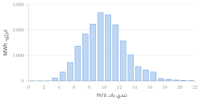
مثال 11.41 (مثالِ کارشدهٔ نخست: انرژیِ ناخالص) پرسش. برای یک توربین در سالِ بستهٔ داده (1.1.0، S0) و منحنیِ توانِ بستهٔ داده در 1.225 kg/m³، انرژی را با سه راه حساب کنید و سهمِ هر بازهٔ تندی را بیابید. برای دوازده توربین چه میشود؟
پاسخ.
worked example 1: one turbine, data-pack year, 1.225 kg/m3:
bin m/s hours P kW MWh share %
0.5 126 0 0 0.0
1.5 366 0 0 0.0
2.5 533 0 0 0.0
3.5 776 141 109 0.6
4.5 882 387 341 1.9
5.5 929 775 720 3.9
6.5 1028 1329 1366 7.5
7.5 892 2073 1849 10.1
8.5 739 3017 2230 12.2
9.5 663 4035 2675 14.7
10.5 551 4711 2596 14.2
11.5 446 4934 2201 12.1
12.5 314 4985 1565 8.6
13.5 203 5000 1015 5.6
14.5 111 5000 555 3.0
15.5 86 5000 430 2.4
16.5 69 5000 345 1.9
17.5 18 5000 90 0.5
sum of bins 18,227 MWh; hour by hour 18,233 MWh
Weibull k 2.11, c 8.02 m/s: mean power 2,069 kW -> 18,125 MWh
twelve turbines: 218.79 GWh gross; chapter 5's 192.54 GWh
is this gross after its 12 % lumped loss (x 0.88 = 192.54)
most energy comes from 7 .. 13 m/s, where the curve is steep:
the curve's uncertainty there matters mostتفسیر. سه راه در حدِ کمتر از یک درصد همخواناند (18,227، 18,233 و 18,125 MWh). تندیهای 7 تا 13 m/s حدودِ هفتاد درصدِ انرژی را میسازند (شکل 11.23)، با آنکه کمتر از نیمی از ساعتها (حدودِ 41 %) در آناند؛ این همان ناحیهٔ شیبدارِ منحنی است که عدمِ قطعیتِ منحنیِ توان و تندیِ باد در آن بیشترین اثر را دارد. پیوند با فصلِ ۵: 192.54 GWhِ آنجا همین 218.79 GWh پس از تلفاتِ یکجای 12 % بود. وارسی: \(663 \times 4035 = 2675\ \text{MWh}\) برای بازهٔ 9.5 m/s (درست).
خطای رایج. منحنیِ توان را با میانگینِ تندی خواندن: \(P(7.10) \approx 1.76\ \text{MW}\) در برابرِ میانگینِ واقعیِ 2.07 MW؛ با یک عدد میانگین، شکلِ توزیع گم میشود.
- سه راهِ حسابِ انرژیِ سالانه را نام ببرید و سودِ هر کدام را بگویید.
- چرا تندیهای 7 تا 13 m/s بیشترِ انرژی را دارند؟
- انرژیِ بازهٔ 10.5 m/s را از جدولِ مثال 11.41 وارسی کنید.
- چرا توانِ تندیِ میانگین با توانِ میانگین برابر نیست؟
11.5.2 چهار راهِ تصحیحِ چگالی
ایده. فصلِ ۵ تندیِ همارز با چگالیِ هر ساعت را به کار برد. آیا چگالیِ میانگین بس است؟ و مدلِ روتور (مثال 11.10) چه میگوید؟
مثال 11.42 (یک توربین، چهار روش) پرسش. انرژیِ یک توربین را بیتصحیح، با تندیِ همارزِ ساعتی، با تندیِ همارزِ میانگین و با مدلِ روتور در چگالیِ ساختگاه حساب کنید (A-221).
پاسخ.
one turbine, four ways to treat air density (A-221):
power curve at 1.225 kg/m3, no correction 18,233 MWh
equivalent speed, hourly density 16,769 MWh (-8.0 %)
equivalent speed, mean density 1.056 16,773 MWh (-8.0 %)
BEM rotor at 1.056 kg/m3, turbulence 10 % 17,183 MWh (-5.8 %)
the BEM rotor gives about 2.5 % more, mostly from its higher
power near cut-in; leaving density out overstates the energy
by about 9 %: the largest single correction at 1200 mتفسیر. چگالیِ ساعتی و میانگین تقریباً یکیاند (چگالی با فصل تغییر میکند اما همبستگیاش با باد کوچک است). مدلِ روتور 2.5 % بیشتر میدهد، بیشتر از توانِ بالاترِ نزدیکِ تندیِ شروع (مثال 11.11). مهمتر از اختلافِ روشها، اندازهٔ خودِ تصحیح است: حدودِ 9 %، بزرگترین تصحیحِ برآوردِ بادیِ این ساختگاه. وارسی: \(16\,769/18\,233 = 0.920\) (درست).
- چرا چگالیِ میانگین تقریباً همان نتیجهٔ چگالیِ ساعتی را میدهد؟
- در کدام ساختگاه این دو ممکن است فرق کنند؟
11.5.3 دنباله و چیدمان
ایده. پشتِ هر روتور دنبالهای کندتر و متلاطمتر هست. توربینی که در دنباله است انرژیِ کمتر و بارِ خستگیِ بیشتری میگیرد. مدلِ سادهی جنسن (یا پارک) دنباله را مخروطی با کمبودِ تندیِ یکنواخت میگیرد:
\[ \frac{\Delta v}{v} = \left(1 - \sqrt{1 - C_T}\right)\left(\frac{D}{D + 2 k_\text{w} x}\right)^2 \tag{11.24}\]
با \(x\) فاصلهٔ پاییندست، \(D\) قطرِ روتور و ثابتِ گسترشِ دنباله \(k_\text{w}\) (اینجا 0.05). کمبودها از چند دنباله با جمعِ مجذورها ترکیب میشوند.
E17: Jensen, Ct 0.852, 4D: deficit 0.314; power x (1 - d)^3 = 0.323
: Jensen, Ct 0.852, 8D: deficit 0.190; power x (1 - d)^3 = 0.532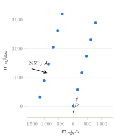
مثال 11.43 (سه چیدمان برای دوازده توربین) پرسش. با سالِ بستهٔ داده، تندیِ همارزِ چگالی، \(C_T\)ِ مدلِ روتور و مدلِ جنسن، تلفاتِ دنبالهٔ سه چیدمان را بیابید: «الف» دو ردیفِ ششتایی (4D × 8D)، «ب» یک ردیفِ دوازدهتایی (4D)، «پ» شبکهٔ ۳ × ۴ (5D × 5D) (A-222).
پاسخ.
wake losses with the Jensen model, k 0.05 (A-222); prevailing sector 285 deg:
layout free GWh waked GWh wake loss %
A: 2 rows of 6, 4D x 8D 201.23 188.16 6.50
B: 1 row of 12, 4D 201.23 200.89 0.17
C: 3 x 4 grid, 5D x 5D 201.23 179.98 10.56
a single row across the prevailing wind loses least but
stretches 6.6 km; the compact grid loses most; two rows
with 8D between them are the middle course; wakes also
raise turbulence and fatigue loads downstream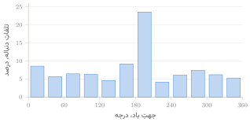
تفسیر. یک ردیفِ عمود بر بادِ غالب کمترین تلفات (0.2 %) را دارد اما 6.6 km زمین در یک خط میخواهد و کابل و جادهٔ بلند؛ شبکهٔ فشرده 10.6 % میبازد. دو ردیف با 8D فاصله 6.5 %. شکل 11.25 نشان میدهد تلفات کجا متمرکز است: وقتی باد در امتدادِ ردیفها میوزد (بخشِ 195°، حدودِ 24 %). انتخابِ چیدمان مصالحهٔ زمین، کابل، جاده، دسترسی، سایه بر میدانِ خورشیدی (بخش 10.4.7) و انرژی است (فصلِ ۲۱). محدودیت: مدلِ جنسن ساده است و افزایشِ تلاطمِ دنباله و اثرِ آن بر بار را نمیدهد؛ مدلهای دقیقتر در فصلِ ۱۴. وارسی: \(1 - 188.16/201.23 = 6.5\ \%\) (درست).
- با معادلهٔ 11.24، کمبودِ تندی در 6D با \(C_T = 0.8\) چیست؟
- چرا تلفات در جهتِ امتدادِ ردیف بیشینه است؟
- سه هزینهٔ غیرانرژیِ چیدمانِ تکردیفه را نام ببرید.
- دنباله جز انرژی چه اثرِ دیگری بر توربینِ پاییندست دارد؟
11.5.4 تحلیلِ دادهٔ وضعیت: یاتاقانِ معیوب
ایده. عیبِ مسیرِ بیرونیِ یک یاتاقانِ غلتشی هر بار که غلتکی از رویش بگذرد ضربهای میزند؛ بسامدِ ضربهها، بسامدِ عبورِ غلتک از مسیرِ بیرونی، از هندسه به دست میآید:
\[ f_\text{BPFO} = \frac{n}{2}\,f_r\left(1 - \frac{d}{D_\text{p}}\cos\phi_\text{c}\right) \tag{11.25}\]
با \(n\) غلتک، بسامدِ محور \(f_r\)، قطرِ غلتک \(d\)، قطرِ گامِ \(D_\text{p}\) و زاویهٔ تماسِ \(\phi_\text{c}\). ضربهها کوچکاند و در طیفِ خام میانِ خطهای بزرگِ درگیریِ چرخدنده گم میشوند؛ اما هر ضربه یک تشدیدِ سازهای در چند کیلوهرتز را تحریک میکند. اگر آن بازه را جدا و پوش (دامنهٔ لحظهای با تبدیلِ هیلبرت) را بگیریم، طیفِ پوش بسامدِ تکرارِ ضربهها را نشان میدهد.
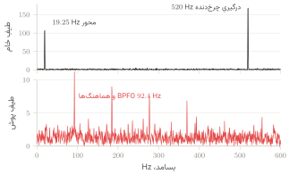
مثال 11.44 (عیبی که طیفِ خام نشان نمیدهد) پرسش. یک سیگنالِ ساختگیِ دوثانیهای (10 kHz) با محورِ 19.25 Hz، درگیریِ ۲۷ دندانه، ضربههای عیب با ۱۲ غلتک و \(d/D_\text{p} = 0.2\) و نویز بسازید (A-223). طیفِ خام و طیفِ پوشِ بازهٔ 2 تا 4 kHz را مقایسه کنید.
پاسخ.
gearbox high-speed bearing, synthetic accelerometer (A-223):
shaft 19.25 Hz, gear mesh 27 x = 520 Hz, outer-race defect BPFO 92.4 Hz
raw spectrum at BPFO: 0.0025 (lost among the mesh lines and noise)
envelope spectrum peak: 92.5 Hz -> the bearing defect frequency
impacts excite a structural resonance; demodulating that band
reveals their repetition rate: the basis of bearing diagnosis
in condition monitoring systems (chapter 52)تفسیر. طیفِ خام در 92.4 Hz تقریباً چیزی نشان نمیدهد؛ طیفِ پوش در همان بسامد و هماهنگهایش قله دارد (شکل 11.26). این پایهٔ تشخیصِ یاتاقان در سامانههای پایشِ وضعیت است؛ روندِ دامنهٔ این قله در هفتهها پیشرفتِ عیب را نشان میدهد و تعمیر را برنامهریزیپذیر میکند (فصلِ ۵۲). وارسی: \(6 \times 19.25 \times 0.8 = 92.4\ \text{Hz}\) (E20، درست).
- با معادلهٔ 11.25، برای ۱۶ غلتک، \(f_r = 25\ \text{Hz}\) و \(d/D_\text{p} = 0.15\) (زاویهٔ تماسِ صفر) بسامدِ عیب چیست؟
- چرا عیبِ یاتاقان در طیفِ خام دیده نمیشود؟
- روندِ دامنهٔ قلهٔ پوش چه کاربردی دارد؟
11.5.5 نقشهٔ زیرمجموعه و کیفیت
ایده. درختِ زیرمجموعه (شکل 11.15)، رابطها (جدول 11.3)، جریانهای ساخت (شکل 11.21، شکل 11.22) و طرحِ کیفیت (جدول 11.8) با هم یک نقشهٔ کیفیت میسازند: برای هر زیرمجموعه، کجا ساخته میشود، کدام دروازهها شاهد میدهند، و کدام رابط در ساختگاه بسته میشود.
| زیرمجموعه | کارخانه و دروازهٔ کلیدی | شاهدِ تحویل | رابطِ ساختگاه |
|---|---|---|---|
| پره | پخت، فراصوتِ خطِ چسب، وزن و مرکزِ جرم | پروندهٔ پره، جفتسازی | پیچهای ریشه، زاویهٔ گام |
| توپی و گام | فراصوتِ ریختهگری، آزمونِ کارکردِ گام | پرونده و آزمونِ کارخانه | اتصال به محور، پیچها |
| ناسل و پیشرانه | آزمونِ پشتبهپشتِ جعبهدنده، پایانِ خط | گزارشهای آزمون | فلنجِ بالا، کابلها |
| برج | جوش، تختیِ فلنج، رنگ | طرحِ کیفیت (جدول 11.8) | کششدهیِ فلنجها |
| فونداسیون | (ساختگاه) بتن، قفسهٔ پیچ، گروت | سوابقِ عمرانی | پیچهای مهار |
| برق و کنترل | آزمونهای کارخانه (فصلهای ۸ و ۹) | گزارشها و پیکربندی | آزمونهای راهاندازی |
- برای پره، دروازهٔ کلیدیِ کارخانه و رابطِ ساختگاه را بنویسید.
- کدام زیرمجموعه هیچ دروازهٔ کارخانهای ندارد و شاهدش از کجا میآید؟
11.5.6 مرزهای مدلهای این فصل
- نیمرخ و پره ساختگیاند؛ پرهٔ واقعی نیمرخهای گوناگون و منحنیهای اندازهگیریشده دارد.
- نظریهٔ المانِ پره–تکانه پایاست؛ رفتارِ گذرا، دنبالهٔ دینامیکی و واماندگیِ پویا نیامدهاند.
- تلاطم با یک ضریبِ ثابت (10 %) و توزیعِ گاوسی؛ تلاطمِ واقعیِ ساختگاه اندازهگیری میخواهد (U-039).
- بارها مرتبهٔ اول و خستگی با سیگنالِ ساختگی؛ حالتهای بارِ طراحی و شبیهسازیِ هوا–کشسانی کارِ سازنده است.
- بسامدِ برج با لولهٔ همارز و بیسختیِ فونداسیون.
- دنباله با مدلِ جنسن و همپوشانیِ کامل؛ تلاطمِ دنباله و بارِ آن نیامدهاند.
- انرژی پیش از دسترسپذیری، تلفاتِ برقی، محدودیتِ صادرات، یخ، تخریب و عدمِ قطعیت (فصلهای ۱۳، ۱۵ و ۲۱).
- دینامیکِ کنترل شبهپایا با روتورِ صلب؛ برج، انعطافِ پیشرانه، پالایهها و منطقِ حفاظتی نیامدهاند (بخش 11.2.21).
- پره بهصورتِ تیر فقط خمشِ عمود بر صفحه را با کلاهکِ نازک میبیند؛ ضریبِ بارِ حدی و کرنشِ مجاز آموزشیاند (بخش 11.3.21).
- نوفه با گسترشِ نیمکرهای و یک ضریبِ جذب؛ روشِ رسمیِ پیشبینی و حدها ملیاند (بخش 11.5.8).
- سایش، برشِ باد و سایهٔ برج با مدلهای ساده و ضریبهای ساختگی (A-226، A-227).
- کدام دو مرز بیشترین اثر را بر برآوردِ انرژی دارند؟
- برای مرزِ ۳ چه اندازهگیریای لازم است؟
11.5.7 آزمونِ منحنیِ توان از رکوردهای دهدقیقهای
ایده. منحنیِ ضمانتشدهٔ سازنده (بخش 11.2.14) فقط وقتی شاهد است که روی توربینِ واقعی اندازهگیری شود. آزمون رکوردهای دهدقیقهایِ تندیِ باد (از دکل یا لیدارِ جلوی توربین)، چگالیِ هوا (از فشار و دما) و توان را چند هفته جمع میکند. سپس چهار گام دارد: (۱) پالایش: رکوردهایی که توربین در کارِ عادی نبوده (محدودیتِ صادرات، یخ، خرابی، تعمیر) و رکوردهایی که باد از سمتِ دنبالهٔ توربینهای دیگر یا مانع آمده کنار میروند؛ (۲) نرمالسازی به چگالیِ مرجع؛ (۳) روشِ بازهها: میانگینِ تندی و توان در بازههای تندیِ باد؛ (۴) انرژی و عدمِ قطعیت با یک توزیعِ مرجعِ باد.
نرمالسازی. همان رابطهٔ تندیِ همارز (معادلهٔ 11.8)، این بار برای آوردنِ هر رکورد به چگالیِ مرجعِ \(\rho_\text{ref}\):
\[ v_\text{n} = v \left(\frac{\rho}{\rho_\text{ref}}\right)^{1/3} . \tag{11.26}\]
استانداردِ آزمون (IEC 61400-12-1:2022) پهنای بازه، کمینهٔ داده، واسنجیِ ساختگاه، پالایهها، روشِ نرمالسازی برای هر نوعِ کنترل و روشِ عدمِ قطعیت را تعیین میکند؛ مقدارهای این درس (بازهٔ 0.5 m/s، دستکم ده رکورد در هر بازه) آموزشیاند.
v_n = v * (rho / RHO_REF) ** (1 / 3) # density-normalised speed
bins = w.bin_power_curve(v_n[good], p[good])
raw = w.bin_power_curve(v, p) # no filter, no normalisationdef bin_power_curve(v, p, width: float = 0.5, v_max: float = 25.0,
min_count: int = 10):
"""Method of bins: mean wind speed, mean power, standard deviation and
count of the records in each speed bin; sparse bins are dropped."""
v, p = np.asarray(v, float), np.asarray(p, float)
edges = np.arange(0.0, v_max + width, width)
idx = np.digitize(v, edges) - 1
out = []
for k in range(len(edges) - 1):
sel = idx == k
cnt = int(sel.sum())
if cnt >= min_count:
out.append((float(v[sel].mean()), float(p[sel].mean()),
float(p[sel].std(ddof=1)), cnt))
return out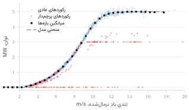
مثال 11.45 (هشت هفته رکورد، یک منحنی) پرسش. از 8,064 رکوردِ ساختگی (هشت هفته) با پرچمهای وضعیت (عادی، محدودشده، یخزده، ناموجود)، منحنیِ توان را با پالایش و نرمالسازی به 1.056 kg/m³ بسازید؛ انرژی را با توزیعِ رِیلیِ با میانگینِ 7 m/s حساب و با منحنیِ مدل مقایسه کنید؛ عدمِ قطعیتِ ناشی از پراکندگیِ داده و از بادسنج را برآورد کنید. داده: ساختگی، بذرِ ۷۱ (A-233). «توربینِ واقعی» همان مدلِ روتور در سه چگالی است و نوفهٔ اندازهگیری دارد.
پاسخ.
power-curve measurement from 8,064 ten-minute records (A-233):
status: normal 7,481, curtailed 324, iced 111, unavailable 148
normalised to 1.056 kg/m3, bins 0.5 m/s, at least 10 records: 35 bins
bin m/s records measured kW std kW model kW
3.76 361 220 49 219
4.25 376 335 53 331
4.75 379 469 58 471
5.25 404 640 70 638
5.76 408 841 82 840
6.24 380 1069 90 1068
6.76 390 1363 109 1361
7.24 374 1672 119 1665
7.75 380 2049 139 2044
8.24 378 2457 154 2458
8.75 332 2920 165 2924
9.23 328 3394 175 3392
9.75 253 3884 161 3878
10.24 244 4265 144 4267
10.74 208 4548 138 4562
11.25 188 4760 123 4758
11.73 183 4865 120 4870
12.23 135 4921 136 4936
12.74 121 4963 134 4970
13.22 92 4968 116 4985
13.76 78 5004 134 4994
14.24 60 5007 132 4997
energy at a Rayleigh mean of 7.0 m/s: measured 16,648 MWh, model 16,647 MWh
ratio 1.000; without filtering and normalisation 16,167 MWh (0.971)
uncertainty: scatter (type A) 12 MWh (0.07 %); anemometer (type B) 632 MWh
(3.8 %)
the wind-speed measurement, not the number of records,
limits the accuracy of a power-curve testتفسیر. پس از پالایش و نرمالسازی، منحنیِ اندازهگیریشده انرژیِ منحنیِ مدل را تقریباً دقیق بازمیسازد؛ بیپالایش، رکوردهای محدودشده و یخزده حدودِ 3 % انرژی را کم نشان میدهند و سازنده بهدرستی آن را رد میکند (شکل 11.27). نکتهٔ اصلی در عدمِ قطعیت است: پراکندگیِ داده با هزاران رکورد کمتر از 0.1 % است، اما خطای کوچکِ بادسنج (0.1 m/s بهاضافهٔ 1 %) حدودِ 4 % در انرژی میسازد، چون توان در شیبِ منحنی تقریباً با مکعبِ تندی تغییر میکند. پس واسنجیِ بادسنج و جای درستِ دکل از تعدادِ رکورد مهمترند. وارسی: در شیبِ تند (مثلاً 8 m/s) شیبِ منحنی حدودِ 800 kW بر متر بر ثانیه است و \(0.18\ \text{m/s}\) خطا حدودِ \(145\ \text{kW}\) یا 6 %ِ توانِ آن بازه است؛ میانگینِ وزنیِ بازهها کمتر است (درست، از نظرِ مرتبه).
قاعدهٔ پذیرش. قرارداد معمولاً نسبتِ انرژیِ اندازهگیریشده به انرژیِ ضمانتشده را با همان توزیعِ مرجع میسنجد و برای عدمِ قطعیتِ آزمون حاشیهای میگذارد. اینکه این حاشیه چگونه به کار رود (کاستن از ادعا یا افزودن به تحمل) یک بندِ مذاکرهای است و باید پیش از آزمون نوشته شود (فصلهای ۳۹ و ۵۰). آزمونِ منحنیِ توان کارِ آزمایشگاهِ مستقلِ دارای صلاحیت است.
- چهار گامِ آزمونِ منحنیِ توان را بنویسید.
- چرا رکوردهای محدودشده باید کنار بروند حتی اگر توربین سالم باشد؟
- با معادلهٔ 11.26، تندیِ نرمالشدهٔ 9 m/s در 1.10 kg/m³ به مرجعِ 1.056 چیست؟
- چرا خطای بادسنج از پراکندگیِ داده مهمتر است؟
- قاعدهٔ پذیرش باید پیش از آزمون چه چیزهایی را روشن کند؟
11.5.8 نوفهٔ صوتی و حالتِ کمصدا
ایده. صدای توربینِ امروزی بیشتر آیرودینامیکی است: جریانِ متلاطم از روی لبهٔ فرارِ پره میگذرد و صدای پهنباندِ «ووشووش» میسازد که با تندیِ نوکِ پره بهشدت بالا میرود. صدای مکانیکیِ جعبهدنده و ژنراتور با عایق و طراحی کم شده است. سازنده ترازِ توانِ صوتیِ \(L_W\) را با آزمونی مطابقِ IEC 61400-11:2012+AMD1:2018 اعلام میکند. در گیرنده ترازِ فشارِ صوتِ \(L_p\) با فاصله کم میشود. مدلِ سادهای با گسترشِ نیمکرهای روی زمینِ سخت و جذبِ هوا:
\[ L_p = L_W - 10\log_{10}\!\left(2\pi d^2\right) - \alpha_\text{air}\,d, \qquad L_\text{tot} = 10\log_{10}\sum_i 10^{L_{p,i}/10} . \tag{11.27}\]
\(d\) فاصلهٔ مایل تا ناسل است و ترازهای چند توربین انرژیایی جمع میشوند (دو منبعِ برابر 3 dB بیشتر از یکی). روشهای رسمیِ پیشبینی جملههای زمین، مانع، هواشناسی و طیفِ بسامدی دارند و ملیاند (فصلهای ۳۳ و ۵۵).
def sound_pressure_level(lw_db: float, r_m, alpha_db_per_m: float = 0.005):
"""Sound pressure level at slant distance r from a point source of
sound power level lw_db over hard flat ground (hemispherical spreading)
with a single air-absorption coefficient; no ground or barrier terms."""
r = np.asarray(r_m, float)
return lw_db - 10 * np.log10(2 * math.pi * r ** 2) - alpha_db_per_m * rحالتِ کمصدا. کاهشِ سرعتِ روتور تندیِ نوک را کم میکند. یک قاعدهٔ سرانگشتیِ رایج برای صدای لبهٔ فرار تغییرِ حدودِ \(50\log_{10}\)ِ نسبتِ تندیِ نوک است. اما محدودیتِ گشتاورِ پیشرانه (مثال 11.21) یعنی در سرعتِ کمتر توانِ بیشینه هم باید به همان نسبت کم شود؛ هزینهٔ انرژی از همینجاست.
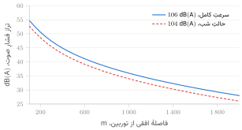
مثال 11.46 (سه خانه و دوازده توربین) پرسش. با \(L_W = 106\ \text{dB(A)}\) (اعلامِ ساختگیِ سازنده، A-234) و چیدمانِ «الف»، ترازِ صوت را در سه خانهٔ ساختگی در فاصلهٔ 600، 900 و 1500 m از نزدیکترین توربین حساب کنید؛ اثرِ حالتِ شب (سرعتِ 10.5 rpm) را بر صدا و بر انرژیِ سالانه بیابید.
پاسخ.
sound at three fictional dwellings, layout A (A-234): L_W 106 dB(A),
hemispherical spreading, absorption 2 dB/km, no ground or screening terms
dwelling nearest m nearest dB(A) 12 turbines night mode
R1 602 41.1 44.3 42.3
R2 901 37.1 41.0 39.0
R3 1505 31.4 38.3 36.3
night mode: rotor speed 10.5 instead of 11.5 rpm;
the tip-speed rule 50 log10(10.5/11.5) gives -2.0 dB
the torque limit caps the power at 4,565 kW in this mode
energy cost of the mode at night only (22:00 - 06:00): 1.81 % of the year
limits, times and assessment methods are national (chapters
33 and 55); the declared level comes from a test to the acoustic
measurement standard (IEC 61400-11:2012+AMD1:2018)تفسیر. در خانهٔ نزدیک، دوازده توربین با هم حدودِ سه دسیبل بیشتر از نزدیکترین توربیناند؛ در خانهٔ دور، چون فاصلهٔ همهٔ توربینها تقریباً یکسان است، مجموع حدودِ هفت دسیبل بیشتر از یک توربین است. حالتِ شب حدودِ دو دسیبل کم میکند و حدودِ 1.8 % انرژیِ سال را میبرد، چون توان در شب به 4,565 kW محدود میشود. اینکه آیا این کاهش لازم است، به حدهای ملی، زمانبندیِ آنها و ارزیابیِ رسمی بستگی دارد که این کتاب نقل نمیکند. وارسی: \(106 - 10\log_{10}(2\pi \times 610^2) - 1.2 = 41.0\ \text{dB(A)}\) برای فاصلهٔ مایلِ حدودِ 610 m (درست، نزدیک به 41.1).
رابط با میدانِ خورشیدی و همسایه. نوفه در نیروگاهِ هیبریدی معمولاً بر میدانِ خورشیدی اثری ندارد، اما ساختمانِ بهرهبرداری، پست و خانههای اطراف گیرندهاند. سایهزنیِ چشمکزنِ پرهها روی خانهها (نه روی ماژولها، فصلِ ۱۰) و نوفه با هم در ارزیابیِ اثرِ محیطی بررسی میشوند (فصلِ ۳۳).
- چرا صدای توربینِ امروزی بیشتر آیرودینامیکی است؟
- دو توربینِ 40 dB(A) با هم چند دسیبلاند؟ ده توربین؟
- چرا حالتِ کمصدا توانِ بیشینه را هم کم میکند؟
- فاصلهٔ مایل تا ناسل را برای خانهای در 600 m و توپیِ 100 m حساب کنید.
- چرا این کتاب حدِ مجازِ صدا را نقل نمیکند؟
11.5.9 اندازهٔ روتور: مطالعهٔ مصالحه
ایده. برای یک پیشرانهٔ 5 MW، سازندگان چند روتور عرضه میکنند. روتورِ بزرگتر (نسبتِ ویژهٔ کمتر، بخش 11.2.1) در بادِ زیرِ اسمی انرژیِ بیشتری میگیرد و زودتر به توانِ اسمی میرسد؛ اما پرهٔ بلندتر سنگینتر و گرانتر است، بار و ارتفاعِ نوک بیشتر میشود و حمل دشوارتر. پرسشِ طراح این است: هر درصد انرژیِ بیشتر به چه قیمتی؟ در نیروگاهِ هیبریدی پرسشِ دیگری هم هست: روتورِ بزرگتر ساعتهای بیشتری را در توانِ اسمی میگذراند و با سقفِ صادرات و تولیدِ خورشیدی بیشتر همپوشانی دارد (فصلهای ۱۸ و ۲۱).
روشِ مطالعه. سه روتورِ 136، 150 و 162 m با یک روشِ طراحیِ پره (مثال 11.3)، یک سقفِ تندیِ نوک (90.3 m/s، برای نوفه و سایش)، فاصلهٔ ثابتِ 25 m از زمین تا پایینترین نوک (پس ارتفاعِ توپی با روتور تغییر میکند و برشِ باد آن را جبران میکند) و جرمِ پره با توانِ 2.5ِ شعاع (قاعدهٔ مقیاسِ آموزشی، A-239).
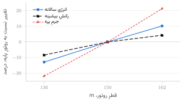
مثال 11.47 (سه روتور روی یک پیشرانه) پرسش. برای سه روتور، نسبتِ ویژه، ارتفاعِ توپی، تندیِ اسمی، انرژیِ سالانهٔ یک توربین در ساختگاه (چگالیِ ساعتی، بیدنباله)، ضریبِ ظرفیت، رانشِ بیشینه (در 1.225 kg/m³) و جرمِ پره را بیابید. داده: بستهٔ داده 1.1.0، S0؛ پرهها و قاعدهٔ جرم ساختگیاند.
پاسخ.
rotor-size trade study, 5 MW drivetrain, site year (A-239):
rotor m W/m2 hub m rated v energy MWh CF peak thrust blade t
136 344 93 11.0 14,968 0.342 846 kN 17.2
150 283 100 10.5 17,168 0.392 923 kN 22.0
162 243 106 10.0 18,921 0.432 962 kN 26.7
relative to the 150 m rotor:
136 m: energy -12.8 %, thrust -8.3 %, blade mass -21.7 %
150 m: energy +0.0 %, thrust +0.0 %, blade mass +0.0 %
162 m: energy +10.2 %, thrust +4.3 %, blade mass +21.2 %
a bigger rotor buys energy below rated wind; blade mass
(and cost) grows faster than the energy, while peak thrust
grows slowly because rated wind falls; fatigue loads and
tip height also grow. The choice is made on cost of energy
with the vendor's prices and loads, and on site limits
(transport, tip height, noise, export cap)تفسیر. روتورِ 162 m حدودِ 10 % انرژیِ بیشتر میدهد و جرمِ پرهاش حدودِ 21 % بیشتر است؛ رانشِ بیشینه کمتر رشد میکند چون تندیِ اسمی پایین میآید. ضریبِ ظرفیتِ یک توربین بیدنباله 0.39 است که با دنباله و منحنیِ بستهٔ داده به 0.358ِ مثال 11.49 میرسد. اینکه کدام روتور بهتر است با این جدول معلوم نمیشود: هزینهٔ هر گزینه، بارهای خستگیِ ویژهٔ ساختگاه، ردهٔ توربین، ارتفاعِ مجازِ نوک، حمل و اثرِ سقفِ صادرات لازم است؛ همین مقایسه با عددهای سازنده بخشی از ارزیابیِ پیشنهادها در فصلِ ۳۹ است. وارسی: \(5 \times 10^6/(\pi \times 75^2) = 283\ \text{W/m}^2\) و \(17\,168/(5 \times 8760) = 0.392\) (درست).
خطای رایج. «بیشترین انرژی یعنی بهترین روتور.» در نیروگاهِ هیبریدی با سقفِ صادرات، بخشی از انرژیِ اضافهٔ روتورِ بزرگ در ساعتهایی میآید که مزرعه و میدانِ خورشیدی با هم به سقف رسیدهاند و بُرش میخورد؛ ارزشِ هر مگاواتساعتِ اضافه را باید با شبیهسازیِ ساعتیِ کلِ نیروگاه سنجید (فصلهای ۱۸ تا ۲۱).
- چرا روتورِ بزرگتر روی همان پیشرانه زودتر به توانِ اسمی میرسد؟
- چرا در این مطالعه ارتفاعِ توپی با روتور تغییر کرد؟
- نسبتِ ویژهٔ روتورِ 162 m را وارسی کنید.
- چرا رانشِ بیشینه کندتر از انرژی رشد میکند؟
- سقفِ صادرات چگونه ارزشِ روتورِ بزرگتر را کم میکند؟
11.6 نیروگاهِ P: سه مثالِ یکپارچه
سه مثالِ زیر ابزارِ فصل را روی دوازده توربینِ نیروگاهِ P میبرند: یک توربین در یک ساعت، انرژیِ سالانهٔ مزرعه از جریانِ آزاد تا دنباله، و پایهٔ تجهیز و رابط با طرحِ کیفیت. همه بر پایهٔ فرضهای A-211 تا A-239 (فرضی یا ساختگی)، تصمیمهای D-008، D-011 و D-015 و بستهٔ دادهٔ 1.1.0ِ سناریوی S0 هستند.
برنامه:
python -m companion.ch11.integratedمثال 11.48 (مقدماتی: یک توربین در یک ساعتِ گرم) پرسش. ساعتی گرم با بادِ نزدیکِ 9.5 m/s را از بستهٔ داده بردارید، چگالی را از فشار و دما حساب کنید، و نقطهٔ کارِ روتور (سرعت، نسبتِ تندی، گام، \(C_p\)، توان، گشتاور، رانش) و سرعتِ ژنراتور را بیابید؛ با منحنیِ بستهٔ داده در تندیِ همارز مقایسه کنید.
پاسخ.
one turbine, day 142 of the data year, 11:00 (S0):
wind at hub 9.50 m/s from 302 deg; air 31.0 C, 875 hPa -> 1.002 kg/m3
rotor (BEM, steady): 10.28 rpm, TSR 8.50, pitch 0.0 deg, Cp 0.485
power 3,459 kW; aero torque 3.42 MN m; thrust 681 kN
generator 1032 rpm through the 1:100.4 gearbox (D-011)
data-pack curve at the equivalent speed 8.88 m/s: 3,417 kW
the steady model and the measured-style curve differ by the
turbulence averaging of a real ten-minute meanتفسیر. در 31 °C و 875 hPa چگالی 1.002 kg/m³ است، 18 % زیرِ مرجع؛ تندیِ همارز 8.88 m/s. روتور روی نسبتِ تندیِ بهینه با گامِ صفر کار میکند و مدل و منحنیِ بستهٔ داده در 1.2 % همخواناند. ژنراتور در 1032 rpm: همان سرعتی که مبدّلِ سمتِ ماشین (فصلِ ۹) با آن کار میکند. وارسی: \(9.50 \times (1.002/1.225)^{1/3} = 8.88\ \text{m/s}\) (درست).
مثال 11.49 (میانی: انرژیِ سالانهٔ مزرعه) پرسش. انرژیِ دوازده توربین را از منحنیِ مرجع، با چگالیِ ساختگاه و با دنبالهٔ چیدمانِ «الف» حساب کنید؛ ضریبِ ظرفیت و ساعتهای بارِ کامل را بیابید و با فصلِ ۵ مقایسه کنید.
پاسخ.
annual energy of the 12 turbines, free stream to wakes (D-015):
gross, power curve at 1.225 kg/m3 218.79 GWh
site air density (equivalent speed) 201.23 GWh (-8.0 %)
wakes, layout A (2 x 6, 4D x 8D) 188.16 GWh (-6.5 %)
capacity factor 0.358; full-load hours 3,136
not yet included: availability, electrical losses, curtailment
at the export limit, icing, degradation and the uncertainty of
each step (chapters 13, 15 and 21)
chapter 5's 177.08 GWh used one lumped 12 % loss: the wake loss
alone is about half of itتفسیر. از 218.8 به 201.2 (چگالی) و 188.2 GWh (دنباله): ضریبِ ظرفیتِ 0.358. تلفاتِ یکجای 12 %ِ فصلِ ۵ اکنون یک جزءِ فیزیکی دارد: دنباله 6.5 %؛ بقیه (دسترسپذیری، برق، محدودیتِ صادرات، یخ) در فصلهای ۱۵ و ۲۱ کمّی میشوند. وارسی: \(188.16/(60 \times 8.76) = 0.358\) (E18، درست).
مثال 11.50 (یکپارچه: پایهٔ تجهیز، رابطها و طرحِ کیفیت) پرسش. شاهدهای فصل را در یک پایهٔ تجهیز و رابط برای توربینهای نیروگاهِ P جمع کنید: چرا این توربین و این چیدمان، کدام رابطها با نیروگاه، و کدام طرحِ کیفیت.
پاسخ.
| موضوع | پایه در نیروگاهِ P | شاهد |
|---|---|---|
| روتور و منحنیِ توان | WT-5.0-150، نسبتِ ویژهٔ 283 W/m²؛ مدلِ فیزیکی منحنی را بازمیسازد | مثال 11.11 |
| چگالی | تندیِ همارزِ ساعتی؛ مدلِ روتور روش را تأیید میکند؛ منحنیِ سازنده U-013 | مثال 11.10، مثال 11.42 |
| پیشرانه | دندهدار و مبدّلِ کامل (D-011)؛ گشتاورِ 4.42 MN·m | مثال 11.21 |
| برج | نرم–سفت، 0.215 Hz، حاشیهٔ 12 و 14 %؛ سختیِ فونداسیون باز | مثال 11.25 |
| سازگاریِ ساختگاه | میانگینِ تندی و چگالی وارسیشده؛ تلاطم و حدِ پنجاهساله باز (U-039) | مثال 11.23 |
| چیدمان | «الف»، دو ردیف عمود بر 285°، دنبالهٔ 6.5 % | مثال 11.43 |
| رابط با میدانِ خورشیدی | سایهٔ برج و پره (فصلِ ۱۰)، پرتابِ یخ تا 375 m | مثال 10.36، مثال 11.36 |
| صاعقه | حدودِ ۲۱ رویداد در سال؛ بازرسی و شمارندهها | مثال 11.35 |
| پره و لبهٔ حمله | سختی و فاصلهٔ نوک تا برج پیش از استحکام؛ حفاظتِ لبه، سایش 3.3 %ِ انرژی | مثال 11.29، مثال 11.15 |
| کنترل | قانونِ \(k\omega^2\)، گامِ برنامهریزیشده دور از بسامدِ برج | مثال 11.18، مثال 11.19 |
| نوفه | حالتِ شب با 10.5 rpm، −2 dB، 1.8 %ِ انرژی؛ حدها ملی | مثال 11.46 |
| آزمونِ منحنیِ توان | پالایش، نرمالسازی، بازهها؛ قاعدهٔ پذیرش پیش از آزمون | مثال 11.45 |
| فلنج و پیچها | تختی پس از جوش و سوابقِ کششدهی شاهدِ عمرِ اتصالاند | مثال 11.31 |
| دسترسپذیری | انرژیایی کمی زیرِ زمانی؛ جعبهدنده نیمِ توقف؛ سرویس در ماهِ آرام | مثال 11.40 |
| اندازهٔ روتور | 150 m پایه؛ 162 m حدودِ 10 % انرژیِ بیشتر، ارزش با سقفِ صادرات سنجیده میشود | مثال 11.47 |
| کیفیت | درختِ زیرمجموعه، رابطها، طرحِ کیفیتِ برج، نقشهٔ کیفیت | شکل 11.15، جدول 11.8، جدول 11.9 |
تفسیر. هر ردیف یا شاهد دارد یا مجهولِ نامدار؛ هیچ ردیفی «فرضِ بیصاحب» نیست. سه رابط با بقیهٔ نیروگاه از این فصل بیرون میآیند: سایه و یخ با میدانِ خورشیدی، رانش و بسامد با فونداسیون (فصلِ ۳۰)، و فرمانِ توان و گام با کنترلگرِ نیروگاه (فصلهای ۳۴ و ۳۵). وارسی: همهٔ ارجاعهای جدول به مثالهای این فصل یا فصلِ ۱۰اند (درست).
11.7 گردشِ کارِ انتخاب و یکپارچهسازیِ توربین
- منبع: توزیعِ باد، چگالی، تلاطم و حدها از اندازهگیری (فصلهای ۱۲ و ۱۳).
- ردهٔ توربین و سازگاری با مقدارهای طراحیِ سازنده و بارهای ویژهٔ ساختگاه (بخش 11.3.13).
- روتور و منحنیِ توان: نسبتِ ویژه، منحنیِ سازنده برای چگالیِ ساختگاه، منحنیِ ضمانتشده (بخش 11.2.14).
- پیشرانه و برق: معماری، ژنراتور و مبدّل، رفتار در شبکه (بخش 11.3.4، فصلهای ۸ و ۹).
- برج و فونداسیون: ارتفاع، بسامد، ژئوتکنیک (بخش 11.3.15، فصلهای ۲۹ و ۳۰).
- چیدمان: دنباله، زمین، کابل، جاده، سایه و یخ (بخش 11.5.3، فصلِ ۲۱).
- انرژی: ناخالص، چگالی، دنباله، سپس تلفات و عدمِ قطعیت (مثال 11.49، فصلهای ۱۴ و ۱۵).
- کیفیت: درخت، رابطها، طرحهای کیفیت، گواهی و پذیرش (بخش 11.4.18، بخش 11.4.14).
- مرزِ کار: بارها و طراحی با سازنده؛ فونداسیون با مهندسِ سازهٔ صلاحیتدار؛ نصب و بالابری با پیمانکارِ صلاحیتدار.
| رابط | مقدار یا پرسش | منبع |
|---|---|---|
| منحنیِ توان در چگالیِ ساختگاه | از سازنده (U-013) | مثال 11.10 |
| تلاطم و حدِ باد | اندازهگیری (U-039) | مثال 11.23 |
| بارهای فونداسیون | از سازنده، با سختیِ خاک (U-041، U-042) | بخش 11.3.8 |
| سایه و یخ بر میدانِ خورشیدی | 375 m؛ سایهٔ برج | مثال 11.36 |
| فرمانِ توان و توانِ راکتیو | کنترلگرِ نیروگاه | بخش 11.3.10 |
| حالتِ کمصدا | حدِ ملی، ساعتها، توانِ مجاز | مثال 11.46 |
| آزمونِ منحنیِ توان | آزمایشگاهِ مستقل، قاعدهٔ پذیرش | مثال 11.45 |
| مصرفِ داخلی و اندازهگیری | واردات در ساعتهای بیتولید | مثال 11.28 |
11.8 آزمایشگاههای پایتونِ این فصل
| آزمایشگاه | برنامه | آنچه میسازد |
|---|---|---|
| آیرودینامیک و کار | examples_a | توانِ باد، نیمرخ، طراحیِ پره، المانِ پره–تکانه، ضریبِ توان، ناحیهها، قانونِ گشتاور، چرخش، چگالی، انرژیِ توقف |
| معماری و بارها | examples_b | جرمها، پیشرانه، بارها، جریانِ بارانی، کمپبل، سازگاری |
| ساخت و قابلیتِ اطمینان | examples_c | توازن، قطعههای برج، صاعقه، یخ، سوابق |
| آیرودینامیکِ ژرفتر | examples_e | روتورِ گلاوِرت، تصحیحِ بوهل، برش و سایهٔ برج، تندیِ همارزِ روتور، سایشِ لبهٔ حمله |
| دینامیکِ کنترل | dynamics | پلهٔ باد، تعقیب در تلاطم، حساسیتِ گام، بهرهها، تندباد |
| زیرمجموعهها در عدد | examples_f | جعبهدنده، یاتاقانِ اصلی، مصرفِ داخلی، پره بهصورتِ تیر |
| آزمایشگاهِ ت | lab_d | انرژی با سه راه، چگالی، دنباله، طیفِ پوش |
| آزمایشگاهِ دوم | lab_f | آزمونِ منحنیِ توان، نوفه و حالتِ شب |
| سازه، چرخش و دسترسپذیری | examples_g | تنشِ پای برج، پیچِ فلنج، کارِ چرخش، توقف و دسترسپذیری |
| انتخابِ روتور | examples_h | مطالعهٔ اندازهٔ روتور |
| روتورِ مشترک | rotor | پره، توربین و منحنیهای پایای ذخیرهشده |
| نیروگاهِ P | integrated | یک ساعت، انرژیِ مزرعه، طرحِ کیفیت |
| مثالهای کوچک و پاسخنامه | worked، solutions | سطرهای E01 به بعد و پاسخهای عددی |
کتابخانهٔ همراه ماژولِ wind را میافزاید: نیمرخِ ساختگی، طراحیِ پره، نظریهٔ المانِ پره–تکانه با تلفاتِ نوک و ریشه و تصحیحِ القای زیاد، نقطهٔ کار با ناحیههای کنترل، میانگینگیریِ تلاطم، تندیِ همارزِ چگالی، دنبالهٔ جنسن و سرعتهای مزرعه، جریانِ بارانی، ماینر و بارِ همارز، بسامدِ برج، روتورِ آرمانیِ گلاوِرت، ضریبِ رانشِ بوهل، تندیِ همارزِ روتور، گشتاورِ خمشیِ پره، نسبتِ سیارهای، عمرِ یاتاقان، روشِ بازهها و ترازِ صوت؛ با آزمونهایی که مدل را با حدِ بتز، نمونهٔ مرجعِ جریانِ بارانی، تیرِ یکسرگیردارِ دقیق، تعریفِ رانش، پیوستگیِ تصحیحِ بوهل و جمعِ انرژیاییِ ترازها میسنجند. تمرینِ پیشنهادی: در dynamics لختیِ پیشرانه را دو برابر کنید و اثرش را بر ثابتِ زمانیِ مثال 11.16 و تلفاتِ تعقیبِ مثال 11.17 ببینید.
11.9 ساخت و تولیدِ صنعتی در این فصل
ساختِ صنعتیِ توربین در بخشِ پ آمده است: پره و کامپوزیت (بخش 11.4.1، بخش 11.4.2)، ریختهگری و آهنگری (بخش 11.4.3)، چرخدنده و یاتاقان (بخش 11.4.4، بخش 11.4.5)، برج (بخش 11.4.6)، ناسل (بخش 11.4.7)، آزمونهای غیرمخرب (بخش 11.4.12) و سوابق (بخش 11.4.13). فصلهای ۴۲ (پره، پیشرانه و ناسل) و ۴۷ (برج و سازههای فولادی) آنها را در سطحِ کارخانه کامل میکنند، و فصلِ ۴۰ ممیزیِ تأمینکننده را. نکتهٔ کیفیتیِ مشترک: مانندِ کپسولهکنندهٔ ماژول (فصلِ ۱۰)، پختِ پره و تختیِ فلنج ویژگیهاییاند که در آزمونِ پایانی دیده نمیشوند و سالها بعد با ترک یا شلشدنِ پیچ برمیگردند؛ کنترلِ فرایند و سوابق آنها را تضمین میکنند.
11.10 جعبهٔ استاندارد و انطباق
مرجعهای زیر فقط با عنوان و ویرایشِ وارسیشده آمدهاند (دفترِ استانداردها با تاریخِ وارسی) و هیچ بند یا جدولی از آنها نقل نشده است. پذیرشِ ملیِ هیچکدام در ایران، افغانستان و تاجیکستان وارسی نشده است (فصلهای ۵۵ تا ۵۷).
- الزامهای طراحیِ توربین: IEC 61400-1:2019، ویرایشِ چهارم (با اصلاحیه و برگهٔ تفسیر؛ تاریخها را پیش از استناد وارسی کنید).
- اجزا: پره IEC 61400-5:2020 (نسخهٔ یکپارچه با اصلاحیهٔ ۲۰۲۵)؛ برج و فونداسیون IEC 61400-6:2020؛ جعبهدنده IEC 61400-4:2025 (ویرایشِ دوم، جایگزینِ ویرایشِ ۲۰۱۲)؛ حفاظت در برابرِ صاعقه IEC 61400-24:2019 با اصلاحیهٔ 1:2024.
- اندازهگیری و آزمون: منحنیِ توان IEC 61400-12-1:2022؛ بارهای مکانیکی IEC 61400-13:2015+AMD1:2021؛ نوفه IEC 61400-11:2012+AMD1:2018؛ ویژگیهای برقی IEC 61400-21-1:2019؛ ارتعاش ISO 20816-21:2025.
- گواهی: طرحِ گواهیِ نوع و اجزا IECRE OD-501 (ویرایشِ 3.1، ۲۰۲۵)، جایگزینِ IEC 61400-22ِ پسگرفتهشده.
- خوردگی: ردهبندیِ محیط ISO 12944-2:2017.
- مرز: ارزیابیِ ژئوتکنیک و آییننامهٔ سازهایِ ملی (فصلهای ۲۹ و ۳۰)؛ ایمنیِ کار در ارتفاع، بالابری و نجات (فصلِ ۳۲)؛ نوفه و محیطِ زیست (فصلِ ۳۳)؛ الزامهای اتصال به شبکه (فصلهای ۱۷ و ۵۵ تا ۵۷).
11.11 تحویلدادنیِ نیروگاهِ P
این فصل اینها را به پروندهٔ نیروگاهِ P میافزاید:
- PLP-GEN-CAL-0003، بازنگریِ A: محاسبهٔ انرژیِ بادی از جریانِ آزاد تا دنباله (مثال 11.41، مثال 11.42، مثال 11.43، مثال 11.49).
- PLP-MEC-SPC-0001، بازنگریِ A: مشخصهٔ مفهومیِ توربین: روتور و منحنیِ توان در چگالیِ ساختگاه، ردهٔ طراحی و سازگاری، پیشرانه، برج و فرکانس، صاعقه، یخ، سوابق و گواهی (جدول 11.1، جدول 11.6)؛ بهاضافهٔ حفاظتِ لبهٔ حمله، حالتهای کمصدا با توانِ مجاز، پایشِ جعبهدنده با بسامدهای درگیری، و طرحِ آزمونِ منحنیِ توان با قاعدهٔ پذیرش (مثال 11.15، مثال 11.46، مثال 11.26، مثال 11.45).
- PLP-MEC-LST-0001، بازنگریِ A: درختِ زیرمجموعه و فهرستِ رابطها (شکل 11.15، جدول 11.3، جدول 11.9).
- PLP-MEC-PRO-0001، بازنگریِ A: طرحِ کیفیتِ قطعههای برج (جدول 11.8)؛ برنامه است، نه دستورِ کار.
- PLP-MEC-REP-0001، بازنگریِ A: پایهٔ تجهیز و رابط (جدول 11.10).
- کتابخانهٔ همراه: ماژولِ
windبا آزمونها و برنامههایcompanion/ch11. - فرضها: A-211 حدهای سرعتِ روتور، بازدهِ 0.94، شروع و قطع؛ A-212 نیمرخ و پرهٔ ساختگی؛ A-213 مدلهای افتِ توانِ خطای جهت؛ A-214 جرمهای زیرمجموعه و شعاعِ ژیراسیونِ پره؛ A-215 سیگنالِ ساختگیِ بارِ ریشهٔ پره (بذرِ ۵۳)؛ A-216 لولهٔ همارزِ برج و مقدارهای طراحیِ سازنده؛ A-217 جرمهای پره و خطای گام؛ A-218 هندسهٔ قطعههای برج و سامانهٔ رنگ؛ A-219 چگالیِ صاعقه؛ A-220 غربالِ یخ و فهرستِ قطعههای سریالدار؛ A-221 روشهای چگالی؛ A-222 سه چیدمان و ثابتِ دنباله؛ A-223 سیگنالِ ساختگیِ یاتاقان؛ A-224 طرحِ کیفیتِ آموزشیِ برج؛ A-225 سهمِ تلفاتِ جعبهدنده؛ A-226 مدلِ شبهپایای برش و سایهٔ برج (شعاعِ برج، فاصلهٔ صفحهٔ روتور، شیب و مخروطی)؛ A-227 نیمرخِ ساییده روی یکسومِ بیرونی؛ A-228 لختیِ پیشرانه، بادِ متلاطمِ مرتبهٔ اول، تندبادِ آموزشی و هدفهای حلقهٔ گام؛ A-229 دندانههای جعبهدنده؛ A-230 ضریبها و ظرفیتِ یاتاقانِ اصلی؛ A-231 بارهای مصرفِ داخلی؛ A-232 کلاهکِ پره، ضخامتِ نسبی، ضریبِ بارِ حدی، کرنشِ مجاز و هندسهٔ فاصلهٔ نوک؛ A-233 رکوردهای ساختگیِ آزمونِ منحنیِ توان (بذرِ ۷۱) و خطای بادسنج؛ A-234 ترازِ توانِ صوتی، جذبِ هوا، جای خانهها و حالتِ شب؛ A-235 مقطعِ پای برج و ضریبِ بارِ حدیِ آموزشی؛ A-236 پیچها، پیشبار و ضریبِ بارِ اتصالِ فلنج؛ A-237 نوارِ مرده، نرخِ چرخش و حدِ تابِ کابل؛ A-238 نرخها و مدتهای خرابی (بذرِ ۸۳)؛ A-239 قاعدهٔ مقیاسِ جرمِ پره، سقفِ تندیِ نوک و فاصلهٔ نوک از زمین. همه فرضی یا ساختگی؛ در انتشارِ بعدیِ بستهٔ داده به دفترِ فرضها افزوده میشوند.
- مجهولها: U-013 (باز) منحنیِ سازنده برای چگالیِ ساختگاه؛ U-039 تلاطم و تندیِ حدیِ بلندمدت از دادهٔ دهدقیقهای و تحلیلِ بلندمدت؛ U-040 شرایطِ یخزدگی (رطوبت، ابر، مه)؛ U-041 بارهای طراحی و بیانیهٔ سازگاریِ ساختگاهِ سازنده؛ U-042 دادهٔ ژئوتکنیک و سختیِ فونداسیون.
- تصمیم D-015: پایهٔ برآوردِ انرژیِ بادی تا رسیدنِ منحنیِ سازنده و مطالعهٔ دنبالهٔ ساختگاه: منحنیِ بستهٔ داده با تندیِ همارزِ چگالیِ ساعتی (D-008)، مدلِ دنبالهٔ جنسن با \(k_\text{w} = 0.05\)، و چیدمانِ آموزشیِ «الف» (دو ردیفِ ششتایی عمود بر 285°، 4D × 8D)؛ رابطهای سایه و پرتابِ یخ با میدانِ خورشیدی در چیدمانِ نهایی (فصلِ ۲۱) وارسی میشوند.
- دفترِ سندها (جدول 2.18): پنج ردیفِ بالا با وضعیتِ «پیشنویس، آموزشی».
11.12 جمعبندی
- توانِ باد با مکعبِ تندی و خطیِ چگالی است؛ در 1200 m چگالی حدودِ 14 % کمتر و انرژی حدودِ 8 % کمتر است (مثال 11.1، مثال 11.42).
- حدِ بتز از دیسکِ تکانه میآید؛ نظریهٔ المانِ پره–تکانه با تلفاتِ نوک، پسا و دنبالهٔ چرخان روتورِ واقعی را به 0.485 میرساند (مثال 11.4).
- پره برای یک نسبتِ تندی و زاویهٔ حمله طراحی میشود؛ وتر و پیچش از ریشه تا نوک کم میشوند (مثال 11.3).
- ناحیههای کار: نسبتِ تندیِ بهینه با قانونِ \(k\omega^2\)، سقفِ سرعت، سپس گام؛ رانش پیش از تندیِ اسمی بیشینه است (مثال 11.6، مثال 11.7).
- منحنیِ توان شیءِ آماری است: مدلِ فیزیکی با تلاطم منحنیِ بستهٔ داده را بازمیسازد؛ روشِ تندیِ همارز با مدلِ روتور همخوان است اما U-013 باز میماند (مثال 11.11، مثال 11.10).
- معماری: چهار گروه و سه رابطِ اصلی؛ پیشرانهٔ دندهدار گشتاور را صد برابر کم میکند؛ سامانهٔ ایمنی مستقل است (شکل 11.15، مثال 11.21).
- بارها و خستگی: گرانشِ پره هر دور برمیگردد؛ جریانِ بارانی و بارِ همارزِ آسیب خستگی را میسنجند (مثال 11.22، مثال 11.24).
- برجِ نرم–سفت میانِ \(1P\) و \(3P\)؛ چند سانتیمتر قطر تفاوتِ برجِ سالم و لرزان است (مثال 11.25).
- ساخت: پره در قالب با تزریقِ رزین؛ ریختهگری، آهنگری، چرخدنده، یاتاقان، برج و ناسل با دروازهها؛ پخت و تختیِ فلنج را کنترلِ فرایند تضمین میکند.
- قابلیتِ اطمینان: ناترازیِ آیرودینامیکی از جرمی مهمتر؛ صاعقه رویدادِ عادی؛ یخ یک رابطِ چیدمان؛ سوابق حافظهٔ توربین (مثال 11.34، مثال 11.35).
- گواهیِ نوع طرح را برای یک رده نشان میدهد، نه ساختگاه و نه هر توربین را (جدول 11.6).
- انرژی: 218.8 → 201.2 (چگالی) → 188.2 GWh (دنباله)، ضریبِ ظرفیتِ 0.358؛ چیدمان مصالحهٔ زمین و انرژی است (مثال 11.49، مثال 11.43).
- پایشِ وضعیت: طیفِ پوش عیبِ یاتاقان را پیش از شکست نشان میدهد (مثال 11.44).
- آیرودینامیکِ ژرفتر: چرخشِ دنباله در \(\lambda\)ِ زیاد کماهمیت است و پسا و نوک مهماند؛ نظریهٔ تکانه در القای زیاد تصحیح میخواهد؛ برش بارِ \(1P\) میسازد اما انرژی را کم عوض میکند؛ سایشِ لبهٔ حمله حدودِ 3 % انرژی میبرد (مثال 11.12، مثال 11.14، مثال 11.15).
- دینامیکِ کنترل: روتور چرخطیاری با ثابتِ زمانیِ چند ثانیه است؛ تلفاتِ تعقیب حدودِ یک درصد؛ حساسیتِ گام با باد چند برابر میشود و برنامهریزیِ بهره حلقه را دور از بسامدِ برج نگه میدارد (مثال 11.16، مثال 11.18، مثال 11.19).
- زیرمجموعهها در عدد: هر مرحلهٔ جعبهدنده امضای بسامدیِ خود را دارد؛ عمرِ یاتاقان با بارِ همارزِ وزندار با دور؛ مصرفِ داخلی حدودِ یک درصد؛ پرهٔ بلند را سختی و فاصلهٔ نوک تا برج اندازه میکند نه استحکام (مثال 11.26، مثال 11.29).
- آزمون و همسایه: منحنیِ توان با پالایش، نرمالسازی و بازهها اندازهگیری میشود و خطای بادسنج عدمِ قطعیتِ اصلی است؛ نوفه با فاصله و حالتِ کمصدا کم میشود و حدهایش ملیاند (مثال 11.45، مثال 11.46).
11.12.1 واژگانِ فصلِ ۱۱
| فارسی | انگلیسی | یادداشت |
|---|---|---|
| توربینِ بادیِ محورافقی | horizontal-axis wind turbine | |
| سطحِ جاروب، نسبتِ ویژه | swept area, specific rating | \(A_\text{r}\) |
| ضریبِ القای محوری، مماسی | axial, tangential induction factor | \(a\)، \(a'\) |
| دیسکِ تکانه | actuator disc | |
| ضریبِ توان، ضریبِ رانش | power coefficient, thrust coefficient | \(C_p\)، \(C_T\) |
| نسبتِ تندیِ نوکِ پره | tip-speed ratio | \(\lambda\) |
| نیمرخِ آیرودینامیکی | aerofoil | |
| زاویهٔ حمله، واماندگی | angle of attack, stall | \(\alpha\) |
| برا، پسا | lift, drag | \(C_L\)، \(C_D\) |
| نظریهٔ المانِ پره–تکانه | blade element momentum theory | BEM |
| زاویهٔ جریان، صلبیتِ محلی | inflow angle, local solidity | \(\phi\)، \(\sigma_r\) |
| تلفاتِ نوکِ پره | tip loss | \(F\) |
| وتر، پیچش | chord, twist | \(c_\text{b}\)، \(\theta_\text{tw}\) |
| زاویهٔ گام، بادنما | pitch angle, feather | \(\theta_\text{p}\) |
| ناحیههای کار | operating regions | |
| سرعتِ متغیر | variable speed | |
| قانونِ کنترلِ گشتاور | torque control law | \(T_\text{g} = k\omega^2\) |
| برنامهریزیِ بهره | gain scheduling | |
| گامِ انفرادی | individual pitch control | |
| سامانهٔ چرخشِ ناسل، یاتاقانِ یاو | yaw system, yaw bearing | |
| ترمزِ آیرودینامیکی، ترمزِ مکانیکی | aerodynamic brake, mechanical brake | |
| توقفِ اضطراری، سامانهٔ ایمنی | emergency stop, safety system | |
| رانش | thrust | \(F_\text{T}\) |
| تندیِ همارز | density-equivalent wind speed | \(v_\text{eq}\) |
| منحنیِ توانِ ضمانتشده | warranted power curve | |
| کلاهکِ تیرِ اصلی، جانِ برشی | spar cap, shear web | |
| توپی، یاتاقانِ گام | hub, pitch bearing | |
| یاتاقانِ اصلی، محورِ اصلی | main bearing, main shaft | |
| جعبهدنده، مرحلهٔ سیارهای | gearbox, planetary stage | |
| پیشرانهٔ مستقیم | direct drive | |
| شاسی، پوستهٔ ناسل | bedplate, nacelle cover | |
| قفسهٔ پیچِ مهار | anchor bolt cage | |
| حلقهٔ لغزان | slip ring | |
| مسیرِ بار | load path | |
| حالتِ بارِ طراحی، ردهٔ توربین | design load case, turbine class | |
| سازگاریِ ساختگاه | site suitability | |
| شمارشِ جریانِ بارانی | rainflow counting | |
| بارِ همارزِ آسیب | damage-equivalent load | \(S_\text{eq}\) |
| نمودارِ کمپبل، برجِ نرم–سفت | Campbell diagram, soft-stiff tower | \(1P\)، \(3P\) |
| پایشِ وضعیت | condition monitoring | CMS |
| طیفِ پوش | envelope spectrum | |
| بسامدِ عبورِ غلتک از مسیرِ بیرونی | ball pass frequency outer race | BPFO |
| تزریقِ رزین زیرِ خلأ | vacuum resin infusion | |
| کامپوزیت، ماتریس | composite, matrix | |
| چینِ الیاف | fibre wrinkle | |
| چدنِ نشکن | ductile cast iron | |
| سختکاریِ سطحی، سنگزنیِ دندانه | case hardening, gear grinding | |
| ترکهای سفیدِ حکاکیپذیر | white etching cracks | |
| قوطیِ برج، تختیِ فلنج | tower can, flange flatness | |
| آزمونِ پایانِ خط | end-of-line test | |
| آزمونِ غیرمخرب | non-destructive testing | NDT |
| سامانهٔ حفاظت در برابرِ صاعقه | lightning protection system | |
| پرتابِ یخ | ice throw | |
| گواهیِ نوع | type certificate | |
| بازرسیِ مسیر | route survey | |
| دنباله، مدلِ جنسن | wake, Jensen (Park) model | \(k_\text{w}\) |
| ساعتهای بارِ کامل | full-load hours | |
| چرخشِ دنباله | wake rotation | گلاوِرت |
| حالتِ دنبالهٔ متلاطم | turbulent wake state | تصحیحِ بوهل |
| سایهٔ برج | tower shadow | |
| تندیِ همارزِ روتور | rotor-equivalent wind speed | \(v_\text{rews}\) |
| سایشِ لبهٔ حمله، حفاظتِ لبه | leading-edge erosion, leading-edge protection | |
| مولدِ گردابه، دندانهٔ لبهٔ فرار | vortex generator, trailing-edge serration | |
| لختیِ پیشرانه | drivetrain inertia | \(J_\text{m}\) |
| تلفاتِ تعقیب | tracking loss | |
| میراییِ آیرودینامیکی | aerodynamic damping | \(D\) |
| جایگذاریِ قطب | pole placement | \(\omega_n\)، \(\zeta\) |
| پاسخِ لختیِ مصنوعی | synthetic inertia | |
| خورشید، سیاره، حلقه، حامل | sun, planet, ring gear, carrier | |
| بسامدِ درگیری، بسامدِ عبورِ سیاره | gear mesh frequency, planet pass frequency | |
| تحلیلِ مرتبه | order analysis | |
| عمرِ اسمی، بارِ همارزِ یاتاقان | basic rating life, equivalent bearing load | \(L_{10}\)، \(P_\text{eq}\) |
| مصرفِ داخلی | auxiliary (own) consumption | |
| پیشخم، فاصلهٔ نوک تا برج | prebend, tower clearance | |
| روشِ بازهها، نرمالسازیِ چگالی | method of bins, density normalisation | \(v_\text{n}\) |
| ترازِ توانِ صوتی، ترازِ فشارِ صوت | sound power level, sound pressure level | \(L_W\)، \(L_p\) |
| حالتِ کمصدا | noise-reduced mode |
11.13 ارزیابیِ پلکانی
معیارِ تسلطِ این فصل: خواننده میتواند تبدیلِ باد به گشتاور و برق را با فیزیک و کد توضیح دهد، منحنیِ توان را بسازد و بخواند، توربین را به زیرمجموعه و رابط بشکند، بارها و خستگی و بسامدِ برج را برآورد کند، ساخت و کیفیت را در سطحِ فرایند دنبال کند، و انرژیِ ناخالصِ مزرعه را با چگالی و دنباله بسازد. پاسخها و معیارها در بخش 11.14 آمدهاند و پاسخهای عددی را برنامهٔ حلِ فصل ساخته است.
11.13.1 پلهٔ ۱: مبانی
تمرین 11.1 توانِ باد از روتورِ نیروگاهِ P را در 9 m/s و 1.056 kg/m³ حساب کنید.
تمرین 11.2 اگر تندیِ باد 10 % بیشتر شود، توانِ باد چند درصد بیشتر میشود؟
تمرین 11.3 نسبتِ ویژهٔ توربینی با 4 MW و روتورِ 140 m چیست؟
تمرین 11.4 \(C_p\) و \(C_T\)ِ دیسکِ تکانه را در \(a = 0.25\) حساب کنید.
تمرین 11.5 نسبتِ تندیِ نوکِ پره را برای 9 rpm، شعاعِ 75 m و 8 m/s بیابید.
تمرین 11.6 تندیِ نوکِ پرهٔ 75 m در 10 rpm چیست؟
تمرین 11.7 بسامدِ \(1P\) و \(3P\) را در 11.5 rpm بیابید.
تمرین 11.8 تندیِ همارزِ 10 m/s در 1.056 kg/m³ چیست؟
تمرین 11.9 خطای جهتِ 7° با مدلِ \(\cos^3\) چند درصد توان میبرد؟
تمرین 11.10 عددِ رینولدز را در نیمِ شعاع با وترِ 4 m و 11.5 rpm حساب کنید (لزجتِ سینماتیک 1.5e-5 m²/s).
تمرین 11.11 ضریبهای برا و پسا و نسبتشان را در 8° با نیمرخِ ساختگی بیابید.
تمرین 11.12 گشتاورِ محورِ اصلی در توانِ اسمی، 11.5 rpm و بازدهِ 0.94 چیست؟
تمرین 11.13 گشتاورِ ژنراتورِ سرعتمیانه با نسبتِ ۳۵ را بیابید.
تمرین 11.14 گشتاورِ لبهایِ گرانشیِ پرهای 25 t با مرکزِ جرم در 23 m چیست؟
تمرین 11.15 نیروی گریز از مرکزِ پرهٔ 22 t با مرکزِ جرم در 22 m در 10 rpm چیست؟
تمرین 11.16 رانش در 7 m/s با \(C_T = 0.852\) و 1.225 kg/m³ چیست؟
تمرین 11.17 انرژیِ جنبشیِ روتور (\(J = 32.0 \times 10^6\ \text{kg\,m}^2\)) در 10 rpm چیست؟
تمرین 11.18 گامدهیِ 90° با 6°/s چقدر طول میکشد؟
تمرین 11.19 اگر جرمِ بالای برج 10 % بیشتر شود (اثرِ جرمِ برج را نادیده بگیرید)، بسامدِ برج چند درصد تغییر میکند؟
تمرین 11.20 میانگینِ تندیِ وایبول با \(k = 2\) و \(c = 8\ \text{m/s}\) چیست؟
تمرین 11.21 بسامدِ عیبِ مسیرِ بیرونی برای ۱۶ غلتک، \(f_r = 25\ \text{Hz}\) و \(d/D_\text{p} = 0.15\) چیست؟
تمرین 11.22 کمبودِ تندیِ جنسن در 6D با \(C_T = 0.8\) و \(k_\text{w} = 0.05\) چیست؟
تمرین 11.23 با چگالیِ صاعقهٔ چهار بر کیلومترمربع در سال، دوازده توربین چند صاعقه در سال میگیرند؟
تمرین 11.24 فاصلهٔ پرتابِ یخ را با قاعدهٔ سرانگشتی برای روتورِ 136 m و توپیِ 112 m بیابید.
تمرین 11.25 رنگِ دوازده برج چند لیتر است؟
تمرین 11.26 ضریبِ ظرفیتِ مزرعهٔ 60 MW با 150 GWh در سال چیست؟
تمرین 11.27 ساعتهای بارِ کاملِ مزرعه با 188.16 GWh چیست؟
تمرین 11.28 دبیِ روغن برای 133 kW گرما با افزایشِ دمای 10 K چیست؟
تمرین 11.29 بارِ همارزِ آسیب با \(m = 4\) برای دو چرخه با دامنهٔ ۲ و یک چرخه با دامنهٔ ۴، در سه چرخه، چیست؟
تمرین 11.30 آسیبِ ماینرِ یک میلیون چرخه با نیمِ دامنهٔ مرجع، \(N_\text{ref} = 10^7\) و \(m = 4\) چیست؟
تمرین 11.31 چهار گروهِ اصلیِ توربین را با دو جزءِ هر کدام نام ببرید.
تمرین 11.32 چهار ناحیهٔ کار را با فرمانِ اصلیِ هر کدام بنویسید.
تمرین 11.33 دو ترمزِ توربین و نقشِ هر کدام را بنویسید.
تمرین 11.34 سه معماریِ پیشرانه را با یک سود و یک هزینهٔ هر کدام مقایسه کنید.
تمرین 11.35 بیشینهٔ ضریبِ توانِ روتورِ آرمانی با چرخشِ دنباله را در \(\lambda = 2\) بیابید.
تمرین 11.36 ضریبِ رانش را در \(a = 0.5\) و \(a = 0.6\) با نظریهٔ تکانه و با تصحیحِ بوهل مقایسه کنید.
تمرین 11.37 با برشِ 0.14 و 9 m/s در توپیِ 100 m، باد در پایینترین و بالاترین نقطهٔ نوکِ پره چیست؟
تمرین 11.38 نسبتِ مرحلهٔ سیارهای با خورشیدِ ۲۴ و حلقهٔ ۹۶ دندانه، دندانههای سیاره، و امکانِ سه سیارهٔ همفاصله را بیابید.
تمرین 11.39 اگر بارِ همارزِ یاتاقانِ غلتکی 10 % بیشتر شود، عمرِ اسمی چند درصد تغییر میکند؟
تمرین 11.40 ترازِ مجموعِ دو و ده منبعِ برابرِ 40 dB(A) چیست؟
تمرین 11.41 فاصلهٔ مایل تا ناسل را برای خانهای در فاصلهٔ افقیِ 600 m و توپیِ 100 m بیابید.
تمرین 11.42 تندیِ 9 m/s در 1.10 kg/m³ را به مرجعِ 1.056 kg/m³ نرمال کنید.
تمرین 11.43 تنشِ خمشیِ پای برج در رانشِ بیشینه را با ضخامتِ 40 mm به جای 46 mm حساب کنید.
تمرین 11.44 اگر فلنجِ پایه ۱۰۰ پیچ داشته باشد، کششِ بیرونی روی بدترین پیچ در رانشِ بیشینه چیست؟
تمرین 11.45 نسبتِ ویژهٔ روتورِ 162 m با پیشرانهٔ 5 MW را حساب کنید.
11.13.2 پلهٔ ۲: تحلیل
تمرین 11.46 \(C_p\) و \(C_T\)ِ دیسکِ تکانه را در \(a = 0.2\) و \(a = 0.4\) حساب و با \(a = 1/3\) مقایسه کنید.
تمرین 11.47 با \(v(1-a) = 6.7\ \text{m/s}\) و \(\omega r(1+a') = 60\ \text{m/s}\)، زاویهٔ جریان و (با پیچش و گامِ صفر) زاویهٔ حمله چیست؟
تمرین 11.48 \(C_p\)ِ روتور را با مدلِ المانِ پره–تکانه در \(\lambda = 7\) و \(\lambda = 10\) بیابید.
تمرین 11.49 ضریبِ \(k\)ِ قانونِ گشتاور را برای چگالیِ ساختگاه حساب کنید.
تمرین 11.50 توانِ روتور را در 9 m/s و 1.056 kg/m³ با مدل بیابید و با 1.225 مقایسه کنید.
تمرین 11.51 رانش را در 10 m/s و 1.056 kg/m³ با مدل بیابید.
تمرین 11.52 تندیِ اسمی در چگالیِ ساختگاه چه میشود و چرا؟
تمرین 11.53 انحرافِ ثابتِ 5° در بادنما با مدلِ \(\cos^2\) از 188.16 GWh چقدر میبرد؟
تمرین 11.54 بسامدِ برج را با لولهٔ همارزِ 4.6 m و 33 mm و جرمِ بالای 271 t بیابید.
تمرین 11.55 \(1P\) در چه سرعتی به بسامدِ برجِ 0.215 Hz میرسد؟ پیامد برای گسترهٔ کار چیست؟
تمرین 11.56 نسبتِ بارِ همارزِ \(m = 10\) به \(m = 4\) در مثال 11.24 را تفسیر کنید.
تمرین 11.57 سری 0، 3، 1، 4، 0 را با جریانِ بارانی دستی بشمارید.
تمرین 11.58 با وایبولِ برازششده، احتمالِ تندیِ بالای 13 m/s چیست؟ با داده مقایسه کنید.
تمرین 11.59 سهمِ انرژیِ بازههای 7 تا 13 m/s را از مثال 11.41 جمع بزنید.
تمرین 11.60 تصحیحِ چگالی برای یک توربین چند مگاواتساعت است؟
تمرین 11.61 چیدمانِ «پ» نسبت به «الف» چند گیگاواتساعت کمتر میدهد؟
تمرین 11.62 ارزشِ اختلافِ تمرین 11.61 با 50 u/MWh چیست؟
تمرین 11.63 اگر یک پره 0.2 t سنگینتر باشد (مرکزِ جرم در 22 m)، ناترازی و نیروی \(1P\) در 11.5 rpm چیست؟
تمرین 11.64 با نوکِ پره در 200 m، صاعقهٔ سالانهٔ یک توربین با همان برآورد چیست؟
تمرین 11.65 ساعتهای غربالِ یخ چند درصدِ سال است؟
تمرین 11.66 جرمِ قطعهٔ نخستِ برج را با قطرِ میانگینِ 4.3125 m و ضخامتِ 46.5 mm وارسی کنید.
تمرین 11.67 طولِ جوشِ محیطیِ قطعهٔ نخست (با دو جوشِ فلنج) را حساب کنید.
تمرین 11.68 بسامدِ درگیریِ چرخدندهای با ۲۳ دندانه روی محورِ 19.25 Hz چیست؟
تمرین 11.69 چرا طیفِ پوش عیبِ یاتاقان را نشان میدهد در حالی که طیفِ خام نشان نمیدهد؟
تمرین 11.70 چگالیِ جوِ استاندارد در 1500 m چیست؟
تمرین 11.71 تندیِ همارزِ 10 m/s در 0.98 kg/m³ چیست؟
تمرین 11.72 اثرِ میانگینگیریِ تلاطم را در 10 m/s از مثال 11.11 کمّی کنید.
تمرین 11.73 انرژیِ بازهٔ 12.5 m/s را وارسی کنید.
تمرین 11.74 ساعتهای بارِ کاملِ یک توربین در چگالیِ مرجع چیست؟
تمرین 11.75 کمبودِ جنسن در 8D بالای تندیِ اسمی (\(C_T = 0.35\)) چیست؟ چرا دنباله در بادِ شدید کمتر مهم است؟
تمرین 11.76 چرا رانشِ بیشینه درست پیش از تندیِ اسمی رخ میدهد؟
تمرین 11.77 چرا بارهای گرانشیِ پره بارِ خستگیاند نه فقط بارِ ایستا؟
تمرین 11.78 چرا برج باید از هر دو تحریکِ \(1P\) و \(3P\) دور بماند؟
تمرین 11.79 چرا \(C_p\) در \(\lambda\)ِ زیاد افت میکند؟
تمرین 11.80 تلفاتِ نوکِ پره چیست و چرا با شمارِ بیشترِ پره کم میشود؟
تمرین 11.81 چرا میانگینِ دهدقیقهای زانوی منحنیِ توان را گرد میکند؟
تمرین 11.82 اگر لختیِ پیشرانه نصف شود، ثابتِ زمانیِ خطیِ مثال 11.16 چه میشود؟
تمرین 11.83 بسامدِ درگیریِ مرحلهٔ سیارهایِ دومِ مثال 11.26 را در 10 rpm بیابید.
تمرین 11.84 ضخامتِ کلاهک را برای گشتاورِ حدیِ 20 MN·m، فاصلهٔ کلاهکها 1.5 m، پهنای 0.9 m، \(E = 45\ \text{GPa}\) و کرنشِ 0.5 % حساب کنید.
تمرین 11.85 گشتاورِ ریشهٔ پرهای 72.5 m با نیروی یکنواختِ 4 kN/m را با معادلهٔ 11.20 بیابید.
تمرین 11.86 انرژیِ جنبشیِ پیشرانه را در 7.58 و 9.74 rpm با لختیِ \(36 \times 10^6\ \text{kg\,m}^2\) حساب کنید.
تمرین 11.87 اگر حساسیتِ گشتاور به گام دو برابر شود و بهرهها ثابت بمانند، بسامدِ طبیعیِ حلقهٔ گام چه میشود؟
تمرین 11.88 شمارِ دورهای سالانهٔ یاتاقانِ اصلی را با 8.1 rpm در 7,735 ساعتِ کار بیابید.
تمرین 11.89 تندیِ همارزِ روتور را با برشِ 0.3 برای 10 m/s در توپی بیابید و تفسیر کنید.
تمرین 11.90 چرا بسامدِ عبورِ سیارههای مرحلهٔ نخست در طیف با \(3P\) اشتباه گرفته میشود؟ چگونه جدا میشوند؟
تمرین 11.91 چرا تلفاتِ تعقیبِ مثال 11.17 نباید از انرژیِ مثال 11.49 کم شود؟
تمرین 11.92 اگر اتصالِ فلنجی باز شود و شیبِ منحنیِ خستگیِ پیچ 4 باشد، آسیب چند برابر میشود؟
تمرین 11.93 با نرخِ چرخشِ 0.3°/s، زمانِ کارِ موتورهای چرخش در مثال 11.32 چیست؟
11.13.3 پلهٔ ۳: کاربرد
تمرین 11.94 روزی زمستانی: 12 m/s و 1.15 kg/m³. توان، گام و رانش را با مدل بیابید.
تمرین 11.95 اثرِ چگالی بر انرژیِ سالانهٔ مزرعه چند گیگاواتساعت است؟
تمرین 11.96 ارزشِ سالانهٔ تلفاتِ دنبالهٔ چیدمانِ «الف» با 50 u/MWh چیست؟
تمرین 11.97 اگر سقفِ سرعتِ روتور برای نوفه 10.5 rpm شود، توان در 10 m/s و نسبتِ تندی چه میشوند؟
تمرین 11.98 اگر بازدهِ پیشرانه تا شبکه 0.92 باشد، انرژیِ زیرِ اسمی چند درصد کم میشود؟
تمرین 11.99 با جرمِ بالای 300 t و همان برج، بسامد و حاشیه از \(1P\) چه میشوند؟ آیا هنوز پذیرفتنی است؟
تمرین 11.100 اگر در 20 %ِ ساعتهای غربالِ یخ توربین متوقف شود، انرژیِ ازدسترفته چیست؟
تمرین 11.101 ضریبِ ظرفیت را با دسترسپذیریِ 95 % و تلفاتِ برقیِ 2 % بازحساب کنید.
تمرین 11.102 ضریبِ ظرفیتِ بادی و خورشیدیِ نیروگاهِ P (فصلِ ۱۰) را مقایسه کنید.
تمرین 11.103 با توپیِ 120 m و نمای برشِ 0.2، انرژیِ سالانه چند درصد بیشتر میشود (بیدنباله، همان منحنی)؟
تمرین 11.104 با نمونهبرداریِ روغن هر شش ماه، چند نمونه در سال برای مزرعه لازم است؟ چه چیزی در آن سنجیده میشود؟
تمرین 11.105 گامهای بازرسیِ دریافتِ یک پره در ساختگاه را بنویسید.
تمرین 11.106 فهرستِ وارسیِ بازرسیِ مسیرِ حملِ پره را بنویسید.
تمرین 11.107 سامانهٔ پایش هشدارِ قلهٔ پوش در بسامدِ عیبِ یاتاقانِ سرعتبالا داده است. اقدامها را به ترتیب بنویسید.
تمرین 11.108 شمارندهٔ صاعقهٔ یک توربین یک رویداد ثبت کرده است. چه بازرسیهایی لازم است؟
تمرین 11.109 آسیبی به طولِ 30 cm در پوستهٔ نزدیکِ لبهٔ فرار در 40 m از ریشه دیده شده است. تعمیرِ میدانی یا خیر؟ با چه اطلاعاتی تصمیم میگیرید؟
تمرین 11.110 جادهای در 250 m از یک توربین است. ارزیابیِ ریسکِ یخ را طرح کنید.
تمرین 11.111 منحنیِ توانی که سازندهای پیشنهاد کرده 3 % بالاتر از رقیب در 8 m/s است. چه شاهدی میخواهید؟
تمرین 11.112 با دادهٔ ناقص (بیتلاطم)، سازگاریِ ساختگاه را چگونه گزارش میکنید؟
تمرین 11.113 رابطهای توربین با میدانِ خورشیدی را با عدد فهرست کنید.
تمرین 11.114 چرا سوابقِ کششدهیِ هر پیچِ فلنج نگهداشته میشود؟ کجا به کار میآید؟
تمرین 11.115 خرابیِ باتریِ گام چه ریسکی دارد و چگونه پایش میشود؟
تمرین 11.116 با دادهٔ دهدقیقهای، انحرافِ ثابتِ بادنما را چگونه پیدا میکنید؟
تمرین 11.117 برای یک مدیر، تفاوتِ انرژیِ ناخالص و تحویلی را با عددهای مثال 11.49 توضیح دهید.
تمرین 11.118 ادعا: «پیشرانهٔ مستقیم ده درصد انرژیِ بیشتری میدهد.» آن را با شاهدهای این فصل بسنجید.
تمرین 11.119 کدام تلفاتها در مثال 11.49 نیامدهاند؟ برای هر کدام مرتبهٔ بزرگی پیشنهاد کنید و منبعش را بگویید.
تمرین 11.120 «هدایتِ دنباله» (چرخاندنِ عمدیِ توربینِ بالادست تا دنباله منحرف شود) چه سود و هزینهای دارد؟
تمرین 11.121 اگر زمین فقط برای شبکهٔ فشرده کافی باشد، چیدمانِ «پ» را چگونه بهتر میکنید؟
تمرین 11.122 برنامهٔ مفهومیِ تعویضِ جعبهدنده (جرثقیل، فصل، یدک، ایمنی) را بنویسید.
تمرین 11.123 محدودیتهای نظریهٔ پایای المانِ پره–تکانه را در گذرهای کنترل توضیح دهید.
تمرین 11.124 اگر حالتِ شب 1.81 % انرژیِ سال را ببرد، برای 188.16 GWh چند گیگاواتساعت است؟
تمرین 11.125 مصرفِ داخلیِ دوازده توربین و سهمِ وارداتیِ آن را از مثال 11.28 بیابید.
تمرین 11.126 اگر بادسنجِ آزمون 2 % بیشتر نشان دهد، انرژیِ اندازهگیریشدهٔ مثال 11.45 چند درصد تغییر میکند و به سودِ کیست؟
تمرین 11.127 با یاتاقانی با \(C = 9\ \text{MN}\)، عمرِ اسمی در مثال 11.27 چند سال است؟
تمرین 11.128 اگر سایش فقط روی شش توربین باشد، انرژیِ ازدسترفتهٔ سالانه چیست؟
تمرین 11.129 با پیشخمِ 4 m به جای 3 m، فاصلهٔ نوک تا برج در مثال 11.29 چه میشود؟ قاعدهٔ آموزشیِ سی درصد برقرار است؟
تمرین 11.130 برای ساختگاهی با برجِ نرمتر (بسامدِ 0.17 Hz)، کدام کنترلگرِ مثال 11.19 را ترجیح میدهید و چرا؟
تمرین 11.131 تلفاتِ دسترسپذیریِ دوازده توربین و ارزشِ آن را با 50 u/MWh بیابید.
تمرین 11.132 اگر با یدکِ جعبهدنده در ساختگاه توقفِ آن نصف شود، دسترسپذیریِ زمانیِ مورد انتظار چه میشود؟
تمرین 11.133 اگر به جای روتورِ 150 m روتورِ 162 m انتخاب شود، انرژیِ اضافهٔ سالانهٔ دوازده توربین و ارزشِ آن با 50 u/MWh چیست؟ چرا ارزشِ واقعی کمتر است؟
11.13.4 پلهٔ ۴: طراحی و راستیآزمایی
تمرین 11.134 تلفاتِ دنبالهٔ دو ردیفِ ششتایی با 10D میانِ ردیفها را بیابید و با 8D مقایسه کنید.
تمرین 11.135 انرژیِ سالانهٔ یک توربین را با منحنیِ مدلِ روتور (تلاطمِ 10 %، 1.225) حساب و با منحنیِ بستهٔ داده مقایسه کنید.
تمرین 11.136 برجی طراحی کنید که حاشیهاش از \(1P\) و \(3P\) دستکم 10 % باشد؛ با معادلهٔ 11.17 چند قطر و ضخامت را بیازمایید.
تمرین 11.137 سرفصلهای مشخصهٔ خریدِ توربین (PLP-MEC-SPC-0001) را بنویسید.
تمرین 11.138 طرحِ کیفیتِ پره را مانندِ جدول 11.8 بنویسید.
تمرین 11.139 مشخصهٔ مفهومیِ سامانهٔ پایشِ وضعیت را بنویسید.
تمرین 11.140 آزمونهایی برای تابعِ rainflow بنویسید که جز نمونهٔ مرجع، حالتهای مرزی را بسنجند.
تمرین 11.141 راهبردِ کنترلِ توربین برای محدودیتِ صادراتِ نقطهٔ اتصال را طرح کنید (گام، اولویت میانِ توربینها و خورشید).
تمرین 11.142 تصمیمِ ارتفاعِ توپی را با انرژی (تمرین 11.103)، هزینهٔ برج و بسامد طرح کنید.
تمرین 11.143 برنامهٔ بازرسیِ سامانهٔ حفاظت در برابرِ صاعقه را بنویسید.
تمرین 11.144 برنامهٔ مدیریتِ یخ را بنویسید: آشکارسازی، توقف، راهاندازیِ دوباره، علامتگذاری.
تمرین 11.145 فهرستِ دادههایی که طراحِ فونداسیون از سازندهٔ توربین و ژئوتکنیک میخواهد بنویسید.
تمرین 11.146 طرحِ مفهومیِ نصب با پنجرههای باد را بنویسید.
تمرین 11.147 طرحِ مفهومیِ آزمونِ منحنیِ توان (اندازهگیری، دکل یا لیدار، داده، قاعدهٔ تصمیم) را بنویسید.
تمرین 11.148 راهبردِ یدکِ راهبردی برای دوازده توربین را بنویسید.
تمرین 11.149 جدولِ رابطِ توربین با کنترلگرِ نیروگاه را بنویسید.
تمرین 11.150 سندِ تصمیمِ روشِ تصحیحِ چگالی را بنویسید (گزینهها، شاهد، تصمیم، شرطِ بازنگری).
تمرین 11.151 فهرستِ رویدادهایی را بنویسید که باید D-015 را بازنگری کنند.
تمرین 11.152 جدولِ برنامهریزیِ بهرهٔ گام را برای گامهای 0° تا 25° بنویسید و روشِ وارسیِ آن را با شبیهسازی طرح کنید.
تمرین 11.153 طرحِ آزمونِ منحنیِ توان برای یکی از توربینهای نیروگاهِ P بنویسید: جای دکل یا لیدار، پالایهها، نرمالسازی، قاعدهٔ پذیرش.
تمرین 11.154 راهبردِ حالتِ کمصدا را طرح کنید: کدام توربینها، کدام ساعتها، کدام جهتهای باد، و هزینهٔ انرژیِ هر گزینه.
تمرین 11.155 تصمیمِ کلاهکِ شیشهای یا کربنی را برای پرهٔ 72.5 m با عددهای مثال 11.29 و معیارهای هزینه، ساخت و بازرسی بنویسید.
تمرین 11.156 بندِ دسترسپذیری در قراردادِ خدمتِ توربینها را بنویسید: تعریف (زمانی یا انرژیایی)، استثناها، اندازهگیری و جریمه.
11.13.5 پلهٔ ۵: تسلط
تمرین 11.157 D-011 را با شاهدهای این فصل دوباره دفاع یا نقد کنید.
تمرین 11.158 چیدمانِ «الف» را در برابرِ «ب» و «پ» با همهٔ معیارها دفاع کنید.
تمرین 11.159 برنامهٔ بستنِ U-013 را بنویسید.
تمرین 11.160 برنامهٔ بستنِ U-039 را بنویسید.
تمرین 11.161 سازنده یک عیبِ سری در یک دستهٔ یاتاقانِ جعبهدنده اعلام کرده است. واکنش را بنویسید.
تمرین 11.162 در سالِ بیستم، تمدیدِ عمرِ توربینها را با سوابق و بارها ارزیابی کنید (فصلِ ۵۳).
تمرین 11.163 محدودیتِ صادرات هم خورشید را میبُرد (فصلِ ۱۰) هم باد را؛ برای هر مگاواتساعتِ بُرشخورده کدام منبع اولویت دارد و چرا؟
تمرین 11.164 بخشِ توربینِ پروندهٔ نیروگاهِ P را برای بازبینیِ مستقل آماده کنید.
تمرین 11.165 دفترِ ریسکِ توربینها را با دستکم ده ریسک بسازید.
تمرین 11.166 فهرستِ پرسشهای ممیزیِ کارخانهٔ پره را بنویسید.
تمرین 11.167 نظریهٔ المانِ پره–تکانه را برای یک غیرمهندس توضیح دهید.
تمرین 11.168 زنجیرهٔ شاهدِ انرژیِ خورشیدی (فصلِ ۱۰) و بادی (این فصل) را مقایسه کنید: کجا شبیهاند و کجا متفاوت؟
تمرین 11.169 آزمونِ تسلطِ بخشِ دوم: تبدیلِ انرژیِ هر دو منبع را از منبع تا نقطهٔ اتصال با تلفاتِ هر گام دنبال کنید و ناخالص و تحویلی را جدا کنید.
تمرین 11.170 خلاصهٔ دفاعِ فصلِ ۱۱ را برای پروژهٔ پایانی آماده کنید: سه تصمیم، سه شاهد، سه ریسکِ باز.
تمرین 11.171 آیا اثرِ سایشِ لبهٔ حمله باید در پایهٔ انرژیِ D-015 بیاید؟ با شاهد دفاع کنید.
تمرین 11.172 برای یک غیرمهندس توضیح دهید چرا پرهٔ بلند باید «سفت» باشد نه فقط «محکم».
تمرین 11.173 آیا نگهداشتنِ یک جعبهدندهٔ یدک برای دوازده توربین توجیه دارد؟ با عددهای مثال 11.39 و مثال 11.40 دفاع کنید.
11.14 پاسخنامه و راهحلها
پاسخهای عددی را برنامهٔ solutions میسازد (سطرهای P01 به بعد در بخش 11.14.1). برای مسئلههای طراحی و تسلط، معیارهای پاسخ آمدهاند.
حل. تمرین 11.1. 6.80 MW (P01).
حل. تمرین 11.2. 33.1 % (P02).
حل. تمرین 11.3. 260 W/m² (P03).
حل. تمرین 11.4. \(C_p = 0.5625\)، \(C_T = 0.75\) (P04).
حل. تمرین 11.5. 8.84 (P05).
حل. تمرین 11.6. 78.5 m/s (P06).
حل. تمرین 11.7. 0.192 و 0.575 Hz (P07).
حل. تمرین 11.8. 9.517 m/s (P08).
حل. تمرین 11.9. 2.22 % (P09).
حل. تمرین 11.10. حدودِ 1.2e7 (P10).
حل. تمرین 11.11. \(C_L = 1.096\)، \(C_D = 0.0104\)، نسبتِ 106 (P11).
حل. تمرین 11.12. 4.42 MN·m (P12).
حل. تمرین 11.13. 126 kN·m (P13).
حل. تمرین 11.14. 5.64 MN·m (P14).
حل. تمرین 11.15. 531 kN (P15).
حل. تمرین 11.16. 452 kN (P16).
حل. تمرین 11.17. 17.5 MJ (P17).
حل. تمرین 11.18. 15 s (P18).
حل. تمرین 11.19. −4.7 % (P19).
حل. تمرین 11.20. 7.09 m/s (P20).
حل. تمرین 11.21. 170 Hz (P21).
حل. تمرین 11.22. 0.216 (P22).
حل. تمرین 11.23. حدودِ ۴۲ (P23).
حل. تمرین 11.24. 372 m (P24).
حل. تمرین 11.25. 21,540 L (P25).
حل. تمرین 11.26. 0.285 (P26).
حل. تمرین 11.27. 3136 h (P27).
حل. تمرین 11.28. 483 L/min (P28).
حل. تمرین 11.29. 3.13 (P29).
حل. تمرین 11.30. 0.00625 (P30).
حل. تمرین 11.31. معیار: چهار گروهِ شکل 11.15 با دو جزءِ درست برای هر کدام.
حل. تمرین 11.32. ناحیهٔ ۱ ایستاده؛ ۲ گشتاورِ ژنراتور (\(k\omega^2\))؛ ۲٫۵ سقفِ سرعت؛ ۳ گام (بخش 11.2.7).
حل. تمرین 11.33. آیرودینامیکی (کند کردن) و مکانیکی (نگهداشتن) (بخش 11.2.11).
حل. تمرین 11.34. معیار: سرعتبالا (ژنراتورِ کوچک؛ جعبهدنده)، سرعتمیانه، مستقیم (قطعهٔ چرخانِ کم؛ ژنراتورِ سنگین) (مثال 11.21).
حل. تمرین 11.35. 0.511 (P76).
حل. تمرین 11.36. \(a = 0.5\): 1.000 و 1.056؛ \(a = 0.6\): 0.960 و 1.182 (P77).
حل. تمرین 11.37. 7.41 و 9.73 m/s (P78).
حل. تمرین 11.38. نسبتِ 5.00، سیارهٔ ۳۶ دندانه، \((24+96)/3 = 40\): همفاصله ممکن است (P79).
حل. تمرین 11.39. −27.2 % (P80).
حل. تمرین 11.40. 43.0 و 50.0 dB(A) (P81).
حل. تمرین 11.41. 608.3 m (P82).
حل. تمرین 11.42. 9.123 m/s (P83).
حل. تمرین 11.43. 145 MPa در برابرِ 126 (P99).
حل. تمرین 11.44. 799 kN (P100).
حل. تمرین 11.45. 243 W/m² (P105).
حل. تمرین 11.46. \(a = 0.2\): 0.512 و 0.640؛ \(a = 0.4\): 0.576 و 0.960؛ هر دو زیرِ 0.593 (P31).
حل. تمرین 11.47. 6.37° برای هر دو (P32).
حل. تمرین 11.48. 0.454 و 0.460 (P33).
حل. تمرین 11.49. 3107 kN·m·s² (P34).
حل. تمرین 11.50. 3099 kW در برابرِ 3595؛ نسبتِ چگالیها (P35).
حل. تمرین 11.51. 795 kN (P36).
حل. تمرین 11.52. از 10.5 به 11.0 m/s: برای همان توان تندیِ بیشتری لازم است (P37).
حل. تمرین 11.53. 1.43 GWh (P38).
حل. تمرین 11.54. 0.234 Hz (P39).
حل. تمرین 11.55. 12.9 rpm، بالای سقفِ 11.5: در گسترهٔ کار نیست (P40).
حل. تمرین 11.56. 2.23: کامپوزیت چرخههای بزرگ را برجسته میکند (P41).
حل. تمرین 11.57. یک چرخهٔ کاملِ دامنهٔ ۲ و دو نیمچرخهٔ دامنهٔ ۴ (P42).
حل. تمرین 11.58. 0.062 در برابرِ داده 0.059 (P43).
حل. تمرین 11.59. 71.9 % (P44).
حل. تمرین 11.60. 1464 MWh (P45).
حل. تمرین 11.61. 8.18 GWh (P46).
حل. تمرین 11.62. حدودِ 409 k u در سال (P47).
حل. تمرین 11.63. 4400 kg·m؛ 6.4 kN (P48).
حل. تمرین 11.64. 2.26 (P49).
حل. تمرین 11.65. 3.8 % (P50).
حل. تمرین 11.66. 124 t (P51).
حل. تمرین 11.67. 149 m (P52).
حل. تمرین 11.68. 442.75 Hz (P53).
حل. تمرین 11.69. ضربهها کوچک و پهنباندند و در خطهای بزرگ گم میشوند؛ پوشِ بازهٔ تشدید نرخِ تکرارِ آنها را نشان میدهد (مثال 11.44).
حل. تمرین 11.70. 1.058 kg/m³ (P55).
حل. تمرین 11.71. 9.283 m/s (P56).
حل. تمرین 11.72. −9.8 % در زانو (P57).
حل. تمرین 11.73. 1565 MWh (P58).
حل. تمرین 11.74. 3647 h (P59).
حل. تمرین 11.75. 0.060؛ \(C_T\)ِ کم و توانِ اسمیِ ثابت (P60).
حل. تمرین 11.76. \(C_T\) تا اسمی ثابت و \(v^2\) بالا میرود؛ پس از آن گام \(C_T\) را کم میکند (مثال 11.6).
حل. تمرین 11.77. جهتِ وزن نسبت به پره هر دور برمیگردد (مثال 11.22).
حل. تمرین 11.78. تشدید با هر کدام لرزش و آسیبِ خستگی میسازد (بخش 11.3.15).
حل. تمرین 11.79. زاویهٔ حمله کم و برا کوچک میشود و پسا سهمِ بیشتری میگیرد (بخش 11.2.6).
حل. تمرین 11.80. دور زدنِ هوا در نوک برا را کم میکند؛ با پرههای بیشتر فاصلهٔ پرهها کمتر و اثر کمتر است (معادلهٔ 11.4).
حل. تمرین 11.81. میانگینِ تابعِ خمیده از توانِ میانگین فرق دارد (بخش 11.2.14).
حل. تمرین 11.82. 1.9 s، نصفِ 3.8 s (P84).
حل. تمرین 11.83. 92.4 Hz (P85).
حل. تمرین 11.84. 65.8 mm (P86).
حل. تمرین 11.85. \(qL^2/2 = 10.5\ \text{MN\,m}\) (P87).
حل. تمرین 11.86. 11.34 و 18.73 MJ؛ 7.38 MJ در روتور ذخیره شد (P88).
حل. تمرین 11.87. \(\sqrt{2}\) برابر: از 0.6 به 0.85 rad/s (P89).
حل. تمرین 11.88. 3.76 میلیون دور، نزدیکِ 3.77ِ مثال 11.27 (P90).
حل. تمرین 11.89. 9.977 m/s: کمتر از 0.3 % اختلاف؛ نیمرخِ توانی انرژی را کم عوض میکند (P91).
حل. تمرین 11.90. هر دو 0.575 Hz در 11.5 rpmاند؛ با هندسهٔ جعبه، تحلیلِ مرتبه و هماهنگها و نوارهای کناری جدا میشوند (مثال 11.26).
حل. تمرین 11.91. منحنیِ اندازهگیریشده در همان بادِ متلاطم ثبت شده و این اثر را دارد؛ کمکردنِ دوباره شمارشِ دوگانه است (مثال 11.17).
حل. تمرین 11.92. حدودِ ۴۸۰۰ برابر (P101).
حل. تمرین 11.93. 15.3 h (P102).
حل. تمرین 11.94. 5000 kW، گامِ 6.9°، رانشِ 550 kN (P61).
حل. تمرین 11.95. 17.56 GWh (P62).
حل. تمرین 11.96. 13.07 GWh، حدودِ 653 k u (P63).
حل. تمرین 11.97. 4927 kW (تقریباً همان)، نسبتِ 8.25؛ اثرِ اصلی در تندیهای 10.5 تا 12 m/s است (P64).
حل. تمرین 11.98. −2.1 % زیرِ اسمی (P65).
حل. تمرین 11.99. 0.207 Hz، حاشیهٔ 8 %: زیرِ حاشیهٔ آموزشیِ ده درصد؛ برج سفتتر لازم است (P66).
حل. تمرین 11.100. حدودِ 199 MWh برای هر توربین، 2.39 GWh برای مزرعه (P68).
حل. تمرین 11.101. 0.333 (P69).
حل. تمرین 11.102. خورشیدی حدودِ 0.21 (بر پایهٔ DC)، بادی 0.36؛ نیمرخِ روزانه و فصلیِ متفاوت (P70).
حل. تمرین 11.103. حدودِ +6.4 % (P71).
حل. تمرین 11.104. ۲۴ نمونه؛ ذرهها، آب، گرانروی و فرسودگیِ افزودنیها (P72).
حل. تمرین 11.105. معیار: شمارهٔ سریال و پرونده، بازدیدِ لبهها و ریشه، آسیبِ حمل، عکس، تطابقِ دستهٔ سهتایی (بخش 11.4.15).
حل. تمرین 11.106. معیار: شعاعِ پیچها، پلها و ظرفیت، زیرگذرها، شیب، عرضِ جاده، موانع، مجوزها.
حل. تمرین 11.107. معیار: وارسیِ روند، نمونهٔ روغن و ذره، بازرسی با آندوسکوپ، برنامهریزیِ تعویض در فصلِ کمباد، یدک (مثال 11.44).
حل. تمرین 11.108. معیار: بازدیدِ گیرندهها و پره، پیوستگیِ رسانا، برقگیرها، دادههای رویداد؛ با دستورالعملِ سازنده (بخش 11.4.9).
حل. تمرین 11.109. معیار: محل (کلاهک یا پوسته)، عمق، معیارِ سازنده، روشِ تأییدشده؛ آسیبِ سازهای به کارخانه یا متخصص (جدول 11.7).
حل. تمرین 11.110. معیار: درونِ 375 m، رفتوآمد، شرایطِ یخ، آشکارسازی و توقف، علامت (مثال 11.36).
حل. تمرین 11.111. معیار: گزارشِ آزمونِ IEC 61400-12-1:2022، شرایطِ مرجع، منحنیِ ضمانتشده و قاعدهٔ آزمونِ پذیرش (بخش 11.2.14).
حل. تمرین 11.112. معیار: پارامترهای وارسیشده و نشده جدا، مجهولِ U-039، برنامهٔ اندازهگیری (مثال 11.23).
حل. تمرین 11.113. سایهٔ برج و پره (فصلِ ۱۰)، پرتابِ یخ 375 m، جادهها و کابلها، صاعقه (جدول 11.10).
حل. تمرین 11.114. معیار: عمرِ خستگیِ اتصال، بازرسی و کششدهیِ دوباره، ادعا و تمدیدِ عمر (بخش 11.4.13).
حل. تمرین 11.115. معیار: ناتوانی در بادنما کردنِ پره در قطعِ برق؛ آزمونِ دورهای و پایشِ ظرفیت (بخش 11.3.3).
حل. تمرین 11.116. معیار: توان بر حسبِ خطای جهتِ اندازهگیریشده؛ بیشینه باید در صفر باشد؛ یا لیدار (مثال 11.8).
حل. تمرین 11.117. معیار: 218.8 → 201.2 → 188.2 GWh و آنچه هنوز کم میشود (مثال 11.49).
حل. تمرین 11.118. معیار: انرژی را آیرودینامیکِ روتور تعیین میکند؛ تفاوتِ پیشرانه در بازده چند درصد است، نه ده؛ شاهد بخواهید (مثال 11.21).
حل. تمرین 11.119. معیار: دسترسپذیری، برقی، بُرشِ صادرات، یخ، تخریب، پسماندِ کنترل؛ با منبعِ هر کدام (فصلهای ۱۵ و ۲۱).
حل. تمرین 11.120. معیار: سودِ انرژیِ پاییندست، بارِ بیشتر و توانِ کمترِ بالادست؛ نیاز به مدل و تأییدِ سازنده.
حل. تمرین 11.121. معیار: جابهجاییِ ردیفها، فاصلهٔ بیشتر در جهتِ غالب، حذف یا جابهجاییِ توربینِ بدترین دنباله.
حل. تمرین 11.122. معیار: جرثقیل و فصلِ کمباد، یدک، مسیر، ایمنیِ بالابری و تأییدِ سازنده (بخش 11.4.17).
حل. تمرین 11.123. معیار: دنبالهٔ دینامیکی، واماندگیِ پویا، گذرهای گام (بخش 11.5.6).
حل. تمرین 11.124. 3.41 GWh (P92).
حل. تمرین 11.125. 2.02 GWh؛ وارداتی حدودِ 50 MWh (P93).
حل. تمرین 11.126. −3.3 %: منحنی به راست میرود و انرژی کم نشان داده میشود؛ به سودِ خریدار در ادعا و به زیانِ سازنده؛ برای همین واسنجیِ بادسنج پیش و پس از آزمون لازم است (P94).
حل. تمرین 11.127. 123 میلیون دور، حدودِ 32.6 سال (P95).
حل. تمرین 11.128. 3.42 GWh در سال (P96).
حل. تمرین 11.129. 18.3 m؛ پس از خیزِ حدی 0.2 m میماند، بسیار کمتر از 5.5 mِ قاعده: پیشخم بهتنهایی بس نیست (P97).
حل. تمرین 11.130. معیار: برج 1.07 rad/s؛ بهرهٔ ثابت در بادِ زیاد به 1.02 rad/s میرسد و بسیار نزدیک میشود؛ برنامهریزی با بسامدِ طراحیِ کمتر و پالایهٔ برج (مثال 11.18).
حل. تمرین 11.131. 3.91 GWh، حدودِ 196 k u در سال (P103).
حل. تمرین 11.132. حدودِ 132 h در سال، دسترسپذیریِ زمانیِ حدودِ 98.5 % (P104).
حل. تمرین 11.133. 21.0 GWh، حدودِ 1,052 k u در سال پیش از بُرشِ صادرات؛ ارزشِ واقعی با شبیهسازیِ ساعتیِ کلِ نیروگاه کمتر است (P106).
حل. تمرین 11.134. 5.40 % در برابرِ 6.50 % (P73).
حل. تمرین 11.135. 18,616 MWh در برابرِ 18,233: حدودِ 2 % بیشتر، بیشتر از ناحیهٔ شروع (P74).
حل. تمرین 11.136. معیار: دستکم دو گزینه با معادلهٔ 11.17، حاشیهها، جرم و حملِ جادهای (مثال 11.25).
حل. تمرین 11.137. معیار: منحنیِ توان در چگالیِ ساختگاه، رده و سازگاری، پیشرانه، برج، صاعقه، یخ، پایش، سوابق، گواهی، ضمانت.
حل. تمرین 11.138. معیار: مواد، چیدمان، تزریق و پخت، چسب، فراصوت، وزن، صاعقه، سوابق (شکل 11.21).
حل. تمرین 11.139. معیار: جای حسگرها، نمونهبرداری، تحلیلِ پوش، روند، هشدار، اتصال به پایش (بخش 11.3.17).
حل. تمرین 11.140. معیار: سریِ ثابت، تکقله، تکرارِ دورهای با شمارِ معلوم، پایستگیِ جمعِ دامنهها.
حل. تمرین 11.141. معیار: کاهشِ توان با گام، اولویتِ اقتصادی و فنی، بار و فرسایش، هماهنگی با کنترلگرِ نیروگاه (فصلهای ۲۰ و ۳۵).
حل. تمرین 11.142. معیار: سودِ انرژی، هزینهٔ برج، بسامد، حمل، مجوزِ ارتفاع.
حل. تمرین 11.143. معیار: دوره، اجزا، آزمونِ پیوستگی، ثبتِ رویداد، اقدامِ پس از رویداد.
حل. تمرین 11.144. معیار: آشکارسازی، منطقِ توقف و راهاندازی، علامت و مرز، آموزش (بخش 11.4.11).
حل. تمرین 11.145. معیار: بارهای طراحی و خستگی، سختیِ لازم، قفسهٔ پیچ، ژئوتکنیک، آبهای زیرزمینی (U-041، U-042).
حل. تمرین 11.146. معیار: ترتیب، جرثقیل، آمارِ باد و پنجرهها، سکوها، ایمنی (بخش 11.4.16).
حل. تمرین 11.147. معیار: تجهیزِ اندازهگیری، کالیبراسیونِ ساختگاه، فیلترِ داده، تصحیحِ چگالی، عدمِ قطعیت، قاعدهٔ تصمیم (بخش 11.2.14).
حل. تمرین 11.148. معیار: قطعههای با زمانِ تحویلِ بلند (جعبهدنده، یاتاقان، ژنراتور)، اشتراک با مزرعههای دیگر، انبار.
حل. تمرین 11.149. معیار: فرمانِ توان و توانِ راکتیو، وضعیتها، زمانِ پاسخ، پروتکل و امنیت (فصلهای ۳۵ و ۳۶).
حل. تمرین 11.150. معیار: سه روش، شاهدِ مثال 11.42 و مثال 11.10، تصمیم و شرطِ بازنگری (منحنیِ سازنده).
حل. تمرین 11.151. معیار: منحنیِ سازنده، مطالعهٔ دنباله، چیدمانِ نهایی، دادهٔ تلاطم، تغییرِ توربین.
حل. تمرین 11.152. معیار: ضریبِ \(G(\theta_{12})/G(\theta)\) از برازشِ مثال 11.18، حدِ پایین برای گامِ نزدیکِ صفر، وارسی با تندباد در چند تندی و با میراییِ هدف (P98).
حل. تمرین 11.153. معیار: دکل یا لیدار با فاصلهٔ درست و بیرون از دنباله، واسنجیِ ساختگاه، پالایهها و پرچمها، نرمالسازی، بازهها، عدمِ قطعیت، قاعدهٔ پذیرش پیش از آزمون، آزمایشگاهِ مستقل (بخش 11.5.7).
حل. تمرین 11.154. معیار: توربینهای نزدیک به خانهها، ساعتهای شب، جهتهایی که خانه پاییندست است، هزینهٔ انرژیِ هر گزینه با مثال 11.46، حدهای ملی.
حل. تمرین 11.155. معیار: جرمِ 11.8 در برابرِ 3.2 t، هزینهٔ الیاف، حساسیتِ کربن به چینِ الیاف و همراستایی، بازرسیِ فراصوتی، صاعقه (رسانایی)، تجربهٔ کارخانه (بخش 11.4.2).
حل. تمرین 11.156. معیار: تعریفِ زمانی یا انرژیایی، توقفهای به حسابِ مالک (شبکه، محدودیتِ صادرات، بادِ خارج از گستره)، دادهٔ اندازهگیری و منبعِ آن، دورهٔ محاسبه، جریمه و پاداش (بخش 11.4.19).
حل. تمرین 11.157. معیار: گشتاور و اندازهٔ ژنراتور، نگهداری و جرثقیل، یاتاقانها، رفتار در شبکه؛ با ماتریسِ فصلِ ۸.
حل. تمرین 11.158. معیار: دنباله، زمین، کابل و جاده، سایه و یخ بر خورشید، دسترسی.
حل. تمرین 11.159. معیار: درخواست از سازنده، آزمونِ ساختگاه، مقایسه با روشِ تندیِ همارز.
حل. تمرین 11.160. معیار: دکل یا لیدار با دادهٔ دهدقیقهای، همبستگیِ بلندمدت، آمارِ حدی (فصلهای ۳، ۱۲ و ۱۳).
حل. تمرین 11.161. معیار: ردیابی با سوابق، پایشِ ویژه، برنامهٔ تعویض، ادعا (مثال 11.37).
حل. تمرین 11.162. معیار: سوابقِ بار و تعمیر، بازرسی، بازمحاسبهٔ عمرِ خستگی، ریسکها (فصلِ ۵۳).
حل. تمرین 11.163. معیار: هزینهٔ نهایی و فرسایش، بار، قراردادها؛ بُرشِ خورشید در اینورتر بیفرسایش است اما ارزشِ انرژی برابر.
حل. تمرین 11.164. معیار: فرضها، تصمیمها، مجهولها و شاهدها با شمارهها (بخش 11.11).
حل. تمرین 11.165. معیار: ده ریسک از بخشهای ب و پ با کنترل و شاهد.
حل. تمرین 11.166. معیار: پرسش برای هر دروازهٔ شکل 11.21، سوابقِ پخت، صلاحیتِ بازرس، عدمِ انطباقها.
حل. تمرین 11.167. معیار: حلقهها، سرعتِ نسبی، برا، تکرار؛ بیفرمول و درست.
حل. تمرین 11.168. معیار: هر دو از منبع، مدلِ تبدیل، تلفات و شاهد؛ تفاوت در عدمِ قطعیتِ منبع، دنباله و نقشِ چگالی و دما.
حل. تمرین 11.169. معیار: خورشید: تابشِ افقی → صفحه → دما → مدلِ دیود → کابل و ناهمسانی → اینورتر و بُرش → گرد و غبار؛ باد: تندی → چگالی → منحنی → دنباله؛ سپس ترانسفورماتور، شبکهٔ جمعآوری و سقفِ صادرات تا نقطهٔ اتصال (فصلهای ۷، ۱۰ و ۱۱)؛ ناخالص و تحویلی جدا.
حل. تمرین 11.170. معیار: D-011، D-015 و چیدمان؛ شاهدهای مثال 11.11، مثال 11.49 و مثال 11.25؛ ریسکهای U-013، U-039 و U-041.
حل. تمرین 11.171. معیار: 3.3 % برای لبهٔ ساییده با ترمیمِ نکرده؛ پایهٔ انرژی فرض میکند نگهداری انجام میشود، پس سایش در تلفاتِ تخریب و نگهداری (فصلهای ۱۵ و ۵۲) با برنامهٔ بازرسی میآید، نه در منحنی.
حل. تمرین 11.172. معیار: تشبیهِ چوبِ ماهیگیری، خیزِ نوک بزرگتر از فاصلهٔ برج، سختی با ضخامت و ارتفاعِ مقطع؛ بیفرمول و درست.
حل. تمرین 11.173. معیار: انرژیِ ازدسترفتهٔ توقفِ بلندِ جعبهدنده در برابرِ هزینهٔ سرمایهٔ یدک و انبار؛ احتمالِ خرابی در دوازده توربین در سال (حدودِ ۰٫۶)، زمانِ تحویل، اشتراک با مزرعههای دیگر.
11.14.1 خروجیِ برنامهها
پاسخهای عددی:
P01: 0.5 x 1.056 x 17,671 x 9^3 = 6.80 MW
P02: (1.1)^3 - 1 = 33.1 % more
P03: 4 MW / (pi 70^2) = 260 W/m2
P04: a 0.25: Cp 0.5625, Ct 0.750
P05: 9 rpm, 8 m/s: TSR = 8.84
P06: 10 rpm: tip speed 78.5 m/s
P07: 11.5 rpm: 1P 0.192 Hz, 3P 0.575 Hz
P08: 10 x (1.056/1.225)^(1/3) = 9.517 m/s
P09: yaw 7 deg, cos^3: 2.22 % loss
P10: 0.5 R, chord 4 m: Re = 45.2 x 4 / 1.5e-5 = 1.2e+07
P11: 8 deg: Cl 1.096, Cd 0.01035, L/D 105.9
P12: 5 MW / 0.94 / 1.204 = 4.42 MN m
P13: 4.42 MN m / 35 = 126 kN m
P14: 25 t x 9.81 x 23 m = 5.64 MN m
P15: 22 t x 1.047^2 x 22 m = 531 kN
P16: 0.5 x 1.225 x A x 49 x 0.852 = 452 kN
P17: 0.5 x 32.0e6 x 1.047^2 = 17.5 MJ
P18: 90 deg at 6 deg/s: 15 s
P19: top mass +10 %: f x 1/sqrt(1.1) = 0.953 (-4.7 %)
P20: Weibull k 2, c 8: mean 7.09 m/s
P21: BPFO 16/2 x 25 x (1 - 0.15) = 170 Hz
P22: Jensen Ct 0.8 at 6D: 0.216
P23: lightning Ng 4: 4 x 0.866 x 12 = 42 a year
P24: ice throw 1.5 x (136 + 112) = 372 m
P25: paint for 12 towers: 12 x 1,795 = 21,540 L
P26: 150 GWh / (60 MW x 8760 h) = 0.285
P27: full-load hours 188.16 GWh / 60 MW = 3,136 h
P28: 133 kW, 10 K: 483 L/min
P29: DEL m 4: ((2^4 + 2^4 + 4^4) / 3)^(1/4) = 3.13
P30: Miner: 1e6 x 0.5^4 / 1e7 = 0.00625
P31: a 0.2: Cp 0.5120, Ct 0.640
: a 0.4: Cp 0.5760, Ct 0.960
P32: phi = atan(6.7/60) = 6.37 deg = alpha with zero twist
P33: BEM Cp: lambda 7 0.4544, lambda 10 0.4599
P34: k at 1.056: 3,604 x 1.056/1.225 = 3,107 kN m s2
P35: 9 m/s at 1.056: 3,099 kW (1.225: 3,595)
P36: 10 m/s at 1.056: thrust 795 kN (1.225: 923)
P37: rated wind 11.0 m/s at site, 10.5 at 1.225 (a_density)
P38: yaw 5 deg, cos^2: 0.76 % of 188.16 GWh = 1.43 GWh
P39: tube 4.6 m, 33 mm: f1 = 0.234 Hz
P40: 1P meets 0.215 Hz at 12.9 rpm (above 11.5)
P41: DEL ratio m 10 / m 4: 7.94 / 3.56 = 2.23
P42: series 0 3 1 4 0: range 2 x 1, range 4 x 0.5, range 4 x 0.5
P43: P(v > 13) = exp(-(13/8.02)^2.11) = 0.0621; data 0.0587
P44: 7..13 m/s: 10.1 + 12.2 + 14.7 + 14.2 + 12.1 + 8.6 = 71.9 %
P45: density correction per turbine: 18,233 - 16,769 = 1,464 MWh
P46: layout C vs A: 188.16 - 179.98 = 8.18 GWh
P47: at 50 u/MWh: 409 k u a year
P48: one blade 0.2 t heavier: U 4,400 kg m, F 6.4 kN
P49: tip 200 m: 2 x 9 pi 0.2^2 = 2.26 a year
P50: icing screen 333 / 8760 = 3.8 %
P51: section 1: pi x 4.3125 x 0.0465 x 25 x 7850 = 124 t
P52: section 1 welds: (10 - 1 + 2) x pi x 4.3125 = 149 m
P53: 23 teeth at 19.25 Hz: mesh 442.75 Hz
P55: standard atmosphere at 1500 m: 1.058 kg/m3
P56: 10 x (0.98/1.225)^(1/3) = 9.283 m/s
P57: steady 4,932 vs smoothed 4,451 kW at 10 m/s: -9.8 %
P58: bin 12.5 m/s: 314 x 4,985 = 1,565 MWh
P59: full-load hours at 1.225: 18,233 / 5 = 3,647 h
P60: Jensen Ct 0.35 at 8D: 0.0598
P61: 12 m/s, 1.15 kg/m3: 5,000 kW, pitch 6.9 deg, thrust 550 kN
P62: density alone: 218.79 - 201.23 = 17.56 GWh
P63: wakes 201.23 - 188.16 = 13.07 GWh = 653 k u a year
P64: cap 10.5 rpm at 10 m/s: 4,927 kW (11.5 rpm: 4,932); TSR 8.25
P65: efficiency 0.92 vs 0.94: energy x 0.9787 (-2.1 %, below rated)
P66: top 300 t: f1 = 0.207 Hz; 1P max 0.192 -> margin 8 %
P68: 20 % of the 333 cold hours lost: 199 MWh per turbine, 2.39 GWh
P69: CF 0.358 x 0.95 x 0.98 = 0.333
P70: PV specific yield 1,854 kWh/kWp -> CF 0.212 (DC); wind 0.358
P71: hub 120 m, shear 0.2: speed x 1.0371; energy +6.4 % (no wake, same curve)
P72: oil sample every 6 months, 12 turbines: 24 samples a year
P73: two rows, 4D x 10D: wake loss 5.40 % (8D: 6.50 %)
P74: model curve, 1.225, smoothed: 18,616 MWh per turbine (pack 18,233)
P75: see text: criteria
P76: Glauert Cp_max at TSR 2: 0.5112
P77: a 0.5: momentum 1.000, Buhl 1.056; a 0.6: momentum 0.960, Buhl 1.182
P78: shear 0.14, 9 m/s at 100 m: lowest tip 25 m 7.41 m/s, top tip 9.73 m/s
P79: sun 24, ring 96: ratio 5.00, planet 36 teeth, (24 + 96)/3 = 40 (ok)
P80: load +10 %, rollers: life x 0.728 (-27.2 %)
P81: two 40 dB sources: 43.0 dB; ten: 50.0 dB
P82: slant distance sqrt(600^2 + 100^2) = 608.3 m
P83: 9 x (1.10/1.056)^(1/3) = 9.123 m/s
P84: J halved: tau = 1.9 s (full J: 3.8 s)
P85: stage 2 at 10 rpm: carrier 0.952 Hz x 97 = 92.4 Hz
P86: cap: 20e6 / (225e6 x 0.9 x 1.5) = 65.8 mm
P87: uniform 4 kN/m over 72.5 m: q L^2 / 2 = 10.51 MN m
P88: rotor energy 11.34 MJ -> 18.73 MJ (+7.38 MJ)
P89: G doubled, same gains: wn x sqrt(2) = 1.414; 0.6 -> 0.85 rad/s
P90: 8.1 rpm x 60 x 7,735 h = 3.76 million rev
P91: shear 0.3: REWS 9.977 m/s for 10 m/s at hub
P92: night mode 1.81 % of 188.16 GWh = 3.41 GWh
P93: own use, 12 turbines: 2.02 GWh; imported 50 MWh
P94: anemometer reads 2 % high: measured energy 16,100 vs 16,648 MWh (-3.3 %)
P95: C 9 MN: L10 = 123 million rev = 32.6 years
P96: erosion on 6 of 12 turbines: 3.42 GWh a year
P97: prebend 4 m: clearance 18.3 m; less 18.1 m deflection: 0.2 m (rule 5.5 m)
P98: see text: criteria
P99: wall 40 mm: 145 MPa (46 mm: 126 MPa)
P100: 100 bolts: 4 M / (n D) - W / n = 799 kN
P101: joint opens, m = 4: damage x (1/0.12)^4 = 4,823
P102: yaw at 0.3 deg/s: 16,546 / 0.3 / 3600 = 15.3 h
P103: availability loss 12 x 326 MWh = 3.91 GWh = 196 k u at 50 u/MWh
P104: gearbox stop halved: 132 h a year -> time availability about 98.49 %
P105: 162 m rotor: 5e6 / (pi 81^2) = 243 W/m2
P106: 12 x (18,921 - 17,168) = 21.0 GWh = 1,052 k u a year before curtailmentمثالهای کوچک:
E01: 1/2 rho A v^3 at 10 m/s: 10.82 MW (1.225), 9.33 MW (1.056); 283 W/m2
E02: 11.5 rpm = 1.204 rad/s; tip speed 90.3 m/s; TSR at 10 m/s 9.03
E03: Betz a = 1/3: Cp 0.5926, Ct 0.889; rotor 2V/3, far wake V/3
E04: ideal thrust at 10 m/s (Ct 8/9): 962 kN; BEM 923 kN
E05: Reynolds number at 0.7 R: 63 m/s x 3.5 m / 1.5e-5 = 1.5e+07
E06: torque law k = 3,604 kN m s2; at 0.907 rad/s: 2.965 MN m
E07: rated torque 5 MW / 0.94 / 1.204 = 4.42 MN m; ratio 1155 / 11.5 = 100.4
: high-speed shaft torque 44 kN m
E08: yaw error 10 deg: cos^2 loss 3.0 %, cos^3 loss 4.5 %
E09: standard atmosphere at 1200 m: 877 hPa, 7.2 C -> 1.090 kg/m3
E10: equivalent speed 8 x (1.056/1.225)^(1/3) = 7.614 m/s
E11: rotor energy at 11.5 rpm 23.2 MJ; 90 deg at 8 deg/s: 11.2 s
E12: 10 rpm: 1P 0.167 Hz, 3P 0.500 Hz; tower 0.215 Hz
E13: edgewise cycles in 20 yr at 9 rpm, 85 % running: 8.0e+07
E14: Miner, m = 10: half the reference range does 1/1024 of the damage
E15: Weibull k 2.11, c 8.02: mean c Gamma(1 + 1/k) = 7.10 m/s (data 7.10)
E16: hours below cut-in 1025 (11.7 %), above 25 m/s 0
E17: Jensen, Ct 0.852, 4D: deficit 0.314; power x (1 - d)^3 = 0.323
: Jensen, Ct 0.852, 8D: deficit 0.190; power x (1 - d)^3 = 0.532
E18: capacity factor 188.16 GWh / (60 MW x 8760 h) = 0.358
E19: lightning 2 x 9 pi 0.175^2 = 1.73 flashes a year;
ice throw 1.5 x (150 + 100) = 375 m
E20: BPFO = 12/2 x 19.25 x (1 - 0.2) = 92.4 Hz
E21: blade from hub 2.5 m to tip 75 m: 72.5 m long
E22: centrifugal 22 t x 1.204^2 x 22 m = 702 kN;
gravity 22 t x 9.81 x 22 m = 4.75 MN m
E23: tower base moment 923 kN x 100 m = 92.3 MN m
E24: losses at rated 5,319 - 5,000 = 319 kW; gearbox 2.5 % = 133 kW
oil flow for 15 K rise: 133 kW / (870 x 1900 x 15) = 322 L/min